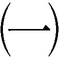
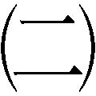
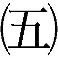
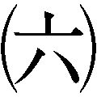
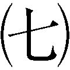

| 丹羽長秀 信長と秀吉を補佐した「信義」の武将 (PHP文庫) | |
| 菊池道人 | |
| PHP研究所 (1999) | |
丹羽長秀
信長と秀吉を補佐した「信義」の武将
菊池道人
電子書籍作品には、現代では使用されなくなった表現や、差別的表現と受け取られかねない表現が使用されている場合もありますが、作品の時代背景や当時の事情を考慮し、かつ作品性を尊重するため、初出をもとに収録しております。作品には差別的意図がないことをご理解いただけますようお願い申し上げます。
第一章 美濃攻め

蜩が鳴いている。
昼間の暑さをさますかのようにである。
二人の男が登る山道も次第に細くなおかつ急になってきた。
およそ半分沈んだ西日が美濃の山々の際を橙色に染めている。山が焼けつくすようにも見えていた。
「もうすぐぞ」
広い額に玉の汗を浮かべた丹羽五郎左衛門長秀は、後方を歩く臣下の江口伝二郎を振り返り、低い声で言った。
「はい」
江口は短くそれに応えた。
この年、永禄八年（一五六五）で数え三十一歳の丹羽長秀は血色の良い丸い顔に、細い眉毛と童子のようにくりくりとした双眼を備えた愛敬のある顔立ちをし、肩もややなで肩であった。
行商人姿で木曽川を越えた後も、美濃の斎藤龍興配下の武士に何度か出くわしたが、彼ら二人を、尾張の織田信長の部将・丹羽長秀とその家来、江口伝二郎正吉であると気づいた者はいなかった。
配下の江口はややいかつい容貌だが、前を歩く長秀のいかにも温和で物腰柔らかそうな雰囲気は、美濃兵の目を欺くのに十分であった。
その長秀が見上げる山の頂上に茅吹きの屋根が映った。目的地であるところの加治田城である。
話はさかのぼる。稲葉山城を本拠地とする斎藤龍興は、木曽川の西岸の山々に、宇留摩、猿啄という出城を築いていた。加治田城はそれよりもやや奥まったところにあった。
油商人から身を起こした斎藤道三は、美濃国の国守の座をめぐる争いにつけこみ、土岐頼芸を国守の座につけると、油売りで儲けた巨額の富を賄賂として、また様々な伝手から集めた美女を妾として頼芸に貢いだ。
頼芸は酒と女に溺れ、政治のことは道三に任せきりになった。
こうなれば道三の思う壺である。美濃のまむしと異名されるこの梟雄は、とうとう頼芸を国外に追放し、自らが美濃国の主となった。
追われた頼芸は、尾張の織田信秀を頼った。信秀にすれば、頼芸支援は美濃に勢力を伸ばすにあたって絶好の口実となる。
しかし信秀は、大軍を率いてたびたび道三の拠る稲葉山城を攻めたが、さんざんに撃ち破られた。
その頃の信秀は、まだ尾張のすべてをその手中に収めていたわけではない。
そのうえ、東には三河の松平広忠、さらに東には駿河の今川義元が虎視眈々と尾張を狙っている。
そこで道三の娘、濃姫を世継ぎの三郎信長の妻に迎え、道三と和睦した。
信秀が急死した後、道三は尾張国富田の正徳寺で信長との面会を試みた。
愛娘を嫁がせた婿殿の評判は至って悪い。
奇妙な格好で町をねり歩き、世間では「うつけ殿」と呼んでいる。
しかもあろうことか、父・信秀の葬儀では亡父の位牌に抹香を投げつけたという。
「まことにただのうつけか。さもなくば、尋常ならぬ才を持つ漢か」
道三はその婿殿の器量を己の目で確かめようと思ったのである。
正徳寺に現われた信長は、髪は茶筅髷、金銀をちりばめた派手な色の鞘の太刀をたばさみ、腕には麻縄を巻き、腰のまわりには火打ち袋やひょうたんをつけ、虎と豹の革を染め合わせた袴という異様な出で立ちであった。
（これが娘の婿とは）
この姿を見た道三は呆れ、隙あらばひと思いに尾張を乗っ取ろうという野心が、わずか一瞬の間ではあるが鎌首をもたげた。
ところが、信長に従う武士たちの持つ槍が、美濃衆のそれよりも長いのを見た途端、その思いはたちまち消えてしまった。
槍の長いほうが有利であるということを道三も熟知していたが、信長はさらに長い三間の槍を持たせている。
道三は信長の軍事的才能を瞬時に見抜いた。
会見の後で、家来の猪子兵介に道三はぽつりと言った。
「わしの子供たちは、いつの日かあのたわけ殿の門前に馬をつなぐようになろうぞ」
それから程なく、道三は家督を譲った長男の義龍と対立した。
実はこの義龍の生母、深芳野は土岐頼芸の妾であったが、道三が次から次へと美女を差し出すので、深芳野は頼芸に飽きられ、道三に譲られた。その時、深芳野は頼芸の子を身籠もっていた。それが義龍である。
ふとしたことから自らの出生の秘密を知った義龍は、道三を討つことを決意した。
義龍は道三の二人の男子を暗殺して、稲葉山に立て籠もった。
稲葉山城は道三が築いた難攻不落の山城である。が、その道三は隠居して鷺山城にいる。城の頑強さでは義龍が圧倒的に有利である。
そうなると、美濃の国侍はこぞって義龍に味方した。
自分の運命が窮まったと悟った道三は、信長に美濃一国を譲る旨の手紙を送った。
そして道三は長良川畔に討たれた。
信長は、道三からの譲り状を大義名分に、何度か美濃を攻めたが、木曽、揖斐、長良の三つの川を天然の堀とする美濃を制圧するのは容易ではない。
そうこうするうちに、東方の大敵、今川義元が京へ向かって進軍を開始した。
当然、尾張の信長は邪魔になる。
信長は、田楽狭間に休み、酒宴を催していた義元を風雨に紛れて急襲し、これを破った。
以来、信長を「うつけ殿」と呼ぶ者は影をひそめた。
さらに信長は、かつては敵であった松平広忠の遺児である三河の徳川家康とも同盟を結んで東の守りを固め、いよいよ美濃攻めに本腰を入れることになった。
その間、義龍は病死し、その子、龍興が家督を継いでいた。
義龍は生前、国内の統治機構の確立を目指し、重臣による意思決定機関の宿老制を採用したり、武士たちの知行地の年貢収入を計るために貫高制を進めるなど、政策面で手腕を発揮した。だが、その子の龍興は、実の祖父、土岐頼芸の性格が遺伝したのか、遊興にうつつを抜かし、政治や軍事に関心を示さなかった。
重臣たちはたびたび、龍興を諌めたが、一向に主君の行状は改まらなかった。
信長は配下の木下藤吉郎が味方に引きいれた蜂須賀小六など美濃の夜盗たちから、人心が龍興から離れつつあるという情報を得ていた。
龍興に愛想をつかした美濃の武士たちを、いかに味方に取り込むかが、勝敗の鍵を握っている。
丹羽長秀がこれから訪ねようとしている加治田城主、佐藤紀伊守三省も、龍興に諌言したにもかかわらず、その言を容れられなかった。
信長は、佐藤紀伊守を味方にすべく、その密使に丹羽長秀を起用した。
長秀は尾張国春日井郡児玉村に斯波家の臣、丹羽長政の子として生まれ、天文十九年（一五五〇）、十六歳の時より、信長に仕えていた。
丹羽氏は、もともとは尾張国丹羽郡に住んでおり、長秀は祖父の代からの縁故を利用し、犬山城の家老で丹羽郡於久地城主の中島豊後守を手なずけて、犬山城を信長のものとした。
木曽川を西に臨む犬山城は、美濃攻略の前線基地になりうる。その犬山城攻略には、長秀の和して同ぜぬ交渉力がものをいったのである。
気の荒い戦国武士の中にあっては、長秀の無駄な敵を作らぬ温和さがかえって有効な武器となることもある。
それゆえ、頑固者といわれる佐藤紀伊守との交渉役にも長秀が選ばれたのであった。
「申し上げます。織田家家臣、丹羽長秀殿が参られました」
若い家来の報告に、佐藤紀伊守三省は背中を丸めて碁盤に向かい、黒白の石を並べながら、
「こちらへお通しいたせ」
と素っ気ない口調で答えた。
厄介な奴が来たな、というような表情である。
程なく足音が聞こえ、
「織田家家臣、丹羽五郎左衛門長秀でござる」
と爽やかな声が聞こえた。
紀伊守は、白髪頭の赤茶けた丸い顔をやっと碁盤から離して、
「そちらへ」
と予め用意された円座を指差した。
長秀は、微かに口元に笑みを浮かべると、
「御免」
と一礼し、徐に円座の上へ腰を下ろした。
紀伊守は、いかにも地侍らしい武骨な容貌に愛想笑いを浮かることもなく、
「いかなるご用件でござるか」
と単刀直入に訊ねた。
とはいっても用件はだいたい察してはいたが、時候の挨拶も、他愛ない世間話もしない。
いきなり、事務的な口調である。
たいていの者ならば、この素っ気なさに面くらってしまうところであるが、長秀は、少年のようにくりくりした目に戸惑いの色すら浮かべない。
長秀が紀伊守と会見している薄暗い部屋のすぐ外の木にとまった蜩が、ひと声鳴く間を置いて、丹羽長秀は、紀伊守の質問に対する答えを発した。
「織田への加勢を依頼に参上つかまつりました」
堂々として、気負いの感じられない長秀の声である。
紀伊守は表情を変えずに、
「織田信長にこの紀伊が与力せよと申すか」
とため息まじりに言った。
「いかにも」
長秀は童のような瞳を真っすぐに紀伊守に向ける。
「本当に強いのかのう、信長殿は」
紀伊守は独り言のようにいう。
「確かに、田楽狭間では海道一の弓取りとまでいわれた今川義元殿を倒した。今川殿の一万に対して、信長殿は二千か。数だけ聞けば、大した御大将よのう」
紀伊守は二、三秒、間を置いてから言葉を継ぐ。
「丹羽殿にはさぞかし自慢のご主君であらせられようが、二千をもって一万の敵を破るなどということは、そう何度もできるものではあるまい。まして、義元殿討ち死にの日は雨風が激しかったとか。これがもし、晴天白日の下での決戦であれば、どうであったかのう」
紀伊守は長秀の前で遠慮なく信長の力量への疑問を口にするが、長秀は表情を全く変えずに答える。
「確かに、この丹羽も田楽狭間の戦に加わりましたが、あのような勝ちを収めることはそうめったにあるとは思えませぬ。我が主人もそれを重々承知いたし、寡をもって衆に勝つはあの田楽狭間が最後と申しております」
「ふふふ、信長殿はただの猪武者ではないようじゃのう。二千をもって一万に勝つなど、めったにあるものではない。それゆえ、味方を一人でも多く集めんがために、この紀伊にも丹羽殿をよこしてきたか」
頑固者といわれる紀伊守は、まんざらでもないような言葉を発する。
「紀伊守殿。武士たるもの、よき主人を持ってこそ働き甲斐があるというものでござろう」
長秀は、紀伊守の心を信長に一気に傾けようとたたみかけるが、紀伊守はそう簡単には同じないで、毒気を含んだ言葉を返してくる。
「しからば、信長殿は働き甲斐のあるご主君かのう。かのお守役の平手政秀殿は諌言が容れられずに腹をめされたではないか」
平手政秀は、信長に素行を改めるよう諌言していたが、信長が奇抜な衣装で町をねり歩いたりすることをなかなかやめようとしないために、とうとう切腹した。
長秀にとっても悲痛な思い出だが、主君の信長はそれを心の傷にしていた。
佐藤紀伊守も、斎藤龍興が諌言に耳を貸さないために、平手の気持ちが痛いほどよくわかっていた。が、長秀にとっては、主君の古傷に触れられているのである。
激情家の武士、例えば柴田勝家あたりならば、主君を侮辱したといって、紀伊守に斬りかかっていたであろう。
ところが、長秀は、怒りの色を口元にも童のような瞳にも全く表わさなかった。
「確かに、諌言が容れられぬのは辛いことでござりましょうな」
長秀は静かに同調する。
今は亡き平手のことに思いを寄せているようでもあり、また紀伊守に同情しているかのようでもあった。
長秀は穏やかな口調のまま話を続ける。
「過ちを認めざるはこれ過ちなりと古人の言葉にもござりますが、我が主君は平手亡き後は行状を改めております」
長秀は主張すべき点は、温和な調子ながらもきっちりと説いた。
「平手を失いしは確かに我が主君の落ち度なれど、その死を無駄にせぬだけの大事業を主君は志しております。主君を持つならば、大志を抱いた君を主と仰ぐべきでございましょう。憚りながら、織田信長を、大志を抱くに十分な器と察したお方は尾張以外にもおられましょう。例えば、今は亡き斎藤道三入道殿......」
長秀が、道三が信長をその後継者と見込んで美濃国の譲り状までしたためていたことを持ち出そうとすると、紀伊守は突如、高らかな声で笑い始めた。
「わははははは。さしものまむし殿もやはり人の親であったのう。年をとられてからは娘の嫁ぎ先に情が移ったのでござろうよ。ご自身の息子が織田の門前に馬をつなぐと言うたのも、死に臨んで信長殿に譲り状を送ったのも、娘とその婿可愛さからじゃよ」
紀伊守は長秀の説得を、今度はさらりとかわしてみせた。
佐藤紀伊守は、信長の力量を讃えるような言葉をなかなか発しない。
（噂どおりの頑固者だな）
長秀は思った。
佐藤家は代々、土岐家に仕えていた。それだけに尾張の、しかも新興勢力である織田信長などに、そう簡単には与しないはずである。
しかし、加治田城をおさえなければ、美濃制圧は難しい。
木曽川べりの宇留摩、猿啄という二つの城を落とすためには、それより三里奥にある加治田城を味方に組み込む必要があるのだ。
紀伊守自身が、斎藤龍興に愛想をつかしているという情報も、様々なところから伝わってきている。信長のことを見くびったような口はきいていても、内心では迷っているな、と長秀は読んでいた。
紀伊守は、不意に長秀に背中を向けると、碁盤を持ち上げ、長秀の前に移した。
これから碁でも打とうというのであろうか。
紀伊守は黒石を三つ、碁盤の上に置いた。
少しの間、沈思黙考した後で、いちばん自分に近い石を引っ込めると、白石に代えた。
長秀は黙ったままで、紀伊守の行為を固唾を呑んで見守っている。
紀伊守は黒石を鷲掴みにすると、碁盤の自分の側に置いた。ぱらりという音がやけに大きく聞こえた。
突然、紀伊守は口を開いた。
「わし一人が織田についたところで、すぐに美濃方に囲まれてしまうわい」
そう言いながら、黒石を白石の回りに次々と並べる。
どうやら、白石は紀伊守自身にたとえているようである。
「丹羽殿、貴公もご承知のとおり、猿啄には多治見、宇留摩には大沢次郎左衛門がおって、わしがもし織田殿に味方としたとあらば、嵩にかかってつぶしにくるであろう。その折には援軍を出して下さらぬか。わしはもう老い先短いゆえ構わぬ。わしの息子どもの待遇もそうはずまぬでもよい。しかし、援軍だけは出してもらわぬと話にならぬ」
「むろん、紀伊守殿が危急の折には、加勢つかまつる所存でございます」
長秀はきっぱりと言った。紀伊守はにやりと笑みを浮かべたが、少し間を置いてから、
「今の言、信長殿のお言葉ではないからのう」
と、また渋るようなことを言う。
長秀も、しつこく食い下がる。
「いいえ、この丹羽長秀、主君に成り代わってでござります」
「しかし、貴公と信長殿とは別の人であるからのう......」
さすがの長秀も焦れてはきたが、しかし、もう一息の辛抱と、ぐっと焦燥感を抑え込んだ。
「ところで丹羽殿。この紀伊守への援軍、もし信長殿が不承知と仰せになられたら、いかがいたされるか」
紀伊守が意地悪そうな表情で言うと、長秀は、腹の底から気を発するような調子で断言した。
「もし、我が主君が紀伊殿への援軍を不承知の場合には、この丹羽長秀、主命に背いてでも加治田へ馳せ参じる所存にございます」
長秀の優しげな瞳が別人のそれのように鋭くなった。
「それは真か」
「真にござります」
長秀も出任せでそう言ったのではない。
加治田を織田方にひきいれねば、美濃攻略は成り難い。その加治田を手にいれるためならば、自分のことはどうなっても構わないとの覚悟を決めていたのである。
紀伊守もさすがに長秀の誠意を感じ取った。
「わかった。貴殿を国境まで無事に送り帰そう。返事は後日、貴殿へ使いを送ることにいたす」
「どうか、よろしゅうご賢察のほどを」
長秀は深々と頭を下げた。

「申し上げます。丹羽五郎左衛門殿がお見えになられました」
小姓の報告に、この犬山城の主は、庭のほうを向いたままで、
「うむ」
と短い返事をした。冷淡な調子だが高い声である。
背はこの当時の日本人としては中くらいで、痩せてはいるが、ひ弱な感じは皆無である。
触れただけで手が斬り落とされてしまいそうな、磨ぎすまされた刃物のような鋭さを全身にみなぎらせていた。
この年、三十二歳の織田信長は、この日も普段どおり、朝早くに起きて、庭木を見ながら、沈思黙考していた。
彼の頭のなかには、木曽川西岸の地図が広げられていた。
川の近い、宇留摩、猿啄の二つの城を攻め落とすためには、それらよりも奥まったところにある加治田城から、両城への援軍が出ないようにしなければならない。
つまり、加治田城主の佐藤紀伊守を味方につけなければならないのである。
そのための交渉役として丹羽長秀を派遣したが、そう簡単に佐藤が織田に味方するとは思えなかった。
なにしろ、宇留摩、猿啄よりも美濃国の内側にある加治田城が尾張の織田に味方すれば、四面楚歌である。佐藤の首を縦に振らせるには相当の時間が必要であると信長は思っていた。それがわずか数日で、長秀が戻ってきたという。成功したならば、こんなに早いはずはない。
おそらくは、不調に終わったという報告であろうが、それにしても早い。
（長秀め。意気地なくあきらめたな）
そう考えた信長は不機嫌になる。
外では、蝉たちがその短い命を数日のうちに燃やし尽くすかのように、絶え間なく鳴き続けている。
この信長も、『敦盛』という幸若舞の、
「人間五十年、下天のうちをくらぶれば 夢幻のごとくなり ひとたび生を受け 滅せぬもののあるべきや」
という一節を好んだ。
人の命の長さを限りあるものと考え、その限られた時間内で事を成し遂げるべしというのが、信長の人生哲学である。それゆえ、務めを果たさぬままにあきらめるなど、もってのほかである。
ふつふつと憤怒を胸にたぎらせながら、信長は、長秀の待つ書院へと向かった。
ところが、信長の予想に反して、長秀の表情には悪びれたところはなかった。それよりもむしろ、充実感のある明るさも漂わせている。
むっつりとした表情の信長が上座に腰をおろす。
この主君はくどくどしい前置きを嫌う。時候の挨拶などもってのほかだ。
十数年仕えて、主君の性癖をわかりきっている長秀は、単刀直入に用件を述べる。
「佐藤紀伊守殿、殿への味方の意あることを表せられました」
「何っ」
信長にとってまったく意外な報告である。
長秀はさらに補足する。
「本日、岸良沢殿、紀伊守殿のご名代としてこの長秀の館に参られました」
長秀を罵倒することばかりを考えていた信長は、拍子抜けしてしまった。が、それでも頭は鋭く働く。
「して、いかなる条件であるのか」
「紀伊守殿が危急の折には必ず援軍を、ということでございます」
「必ず......と申したのか」
「はい」
長秀は涼しげに答える。
周囲を美濃の斎藤方に取り囲まれた佐藤紀伊守が織田に味方するには、何をおいても、援軍を送ってもらうことが絶対条件である。
そのことは信長もわかりきっている。
が、この主君は、長秀の「必ず」という言葉をとらえると、急に意地悪げな表情になった。
「仮に、甲斐の武田信玄が三河の徳川家康を抱き込み、尾張に攻めてきた時に、援軍を要請されても容易には動けぬぞ」
「その時には、この長秀、殿のご名代として加治田に向かう所存でございます」
信長の口元が苦笑するかのようにぴくりと動く。
「もしわしが、そのほうを美濃へ行かせぬと申した時には、いかがいたす。それを承知で必ずなどと申したか」
長秀は平然と答える。
「殿のご命令に背いてでも、佐藤殿に加勢いたす所存でございます」
「たあわけえっ」
信長は手にしていた扇を前の床に叩きつけた。信長の声と、それにやや遅れて扇が叩きつけられた音が屋敷内にこだました。
信長は色白の顔をやや赤くし、眦を釣り上げて、長秀を睨みつけている。
これも、長秀が熟知しているところの主君の性癖であった。
信長は家臣が出すぎたことをすると、必ずといってよいほど、怒声を発する。
誇り高い独裁君主には、目下の者が自分よりも賢いということが我慢ならない。それで感情を爆発させる。
しかし、その感情に駆られて彼独特の醒めた理性さえも忘れてしまうことはなかった。
家臣の出すぎた行為に怒りを露にしても、それと同時に、そのアイデアが合理的であるか否かの判断だけはしていて、もし理ありとみるや、それを活かそうとする。
また、信長は抽象的な空論が嫌いである。
特に「常道だから」とか「いついつ以来のならわしだから」という理由づけをしただけの、成果が見込まれないような意見を蛇蝎のごとく嫌う。少年時代、奇抜な服装で町をねり歩き、父親の位牌に抹香を投げつけたのも、手垢のついたしきたりへの生理的な嫌悪感からであった。
しかし、具体的な成果がともなったものであれば、しきたりや習慣にそぐわなくても、いやむしろ、従来にないものほど、積極的に採用した。
良い例が、長秀より二、三年遅れて、信長に草履取りとして仕えた木下藤吉郎である。
このところ、侍大将格にまで出世し、美濃国内の地侍の調略に活躍しているが、旧知の野盗、蜂須賀小六を通じて、氏素性の知れぬ輩をその配下に引きいれている。
柴田勝家などは、新参者の出すぎた振る舞いを苦々しく見ているが、信長は、
「勝手にいたせ」
と投げやりな言葉を浴びせながらも、藤吉郎の働きを重宝がっていた。
長秀も主君のそうした性格を理解していた。
「誰かあらん」
信長は怒鳴った。
「はっ」
小姓が一人、飛んできた。
「黄金五十枚を持って参れ」
「はっ」
小姓が立ち去ると、信長は徐に立ち上がり、ぶっきらぼうに言い放った。
「岸とやらに黄金五十枚を渡して、こう申し伝えよ。長秀が信長に逆らって、加勢に来るまでの間、これで食糧を貯えよとな」
そう言うと、信長はくるりと背中を向け、すたすたと部屋を出て行ってしまった。
美濃国内の佐藤が信長に味方するための条件は、黄金などよりも援軍であることは信長もわかりきっていたのである。
やがて小姓が、主君の命令どおり、黄金五十枚を運んできた。
（これでやっと動き始めたな）
長秀の胸に、充実感の多分に含まれた安堵の念が広がった。
かくして、加治田城主・佐藤紀伊守三省を味方に引きいれるという第一段階は果たした。
これからいよいよ、本格的な美濃攻めが始まるのである。
伊木山という山がある。
濃尾国境を流れる木曽川を、美濃国側から真下に見おろす山である。
美濃の斎藤方の東の砦、宇留摩、猿啄両城を見おろすことのできる高い山である。
これら二つの城よりも高所にあるという理由で織田信長は伊木山に目をつけた。
永禄八年（一五六五）夏の、とある夜明け、織田軍は犬山城より木曽川を渡り、伊木山を登っていた。
従う部将は、河尻秀隆、木下藤吉郎、そして丹羽長秀である。
まだ昇りきらない朝日の光に、織田軍の騎馬の影が映しだされた。
その中の一つは丹羽長秀である。
すでに先鋒の木下藤吉郎は、伊木山を登り始めている。が、およそ一キロ離れた宇留摩城からは、反撃の鬨の声は聞こえない。
浅瀬を渡るじゃぶじゃぶという音だけが夜明けの静寂を破っていた。
馬上の長秀は思った。
「敵の戦意は高くはないな」
もし美濃方の戦意が昂揚しきっているならば、宇留摩城主の大沢基康はただちに、木曽川を渡る織田軍を攻撃するであろう。
それが、難なく川を越えることができるのだ。
「おろらく斥候もあまり働いていないのではないか」
川を渡りきり、美濃国側の岸に着いた時に長秀は考えた。
美濃の武士たちの心が斎藤龍興から離れている。長秀が味方に引きいれた加治田の佐藤紀伊守が良い例である。
もしかすると、宇留摩城内の軍勢も、いやいやながら斎藤に与力しているのかもしれない。
長秀は、美濃攻略の日が近いという確信すら抱いていた。
伊木山に難なく陣をとることができた信長は、まず木下藤吉郎に宇留摩城の攻略を命じた。
「猿、頼むぞ」
「かしこまって候」
藤吉郎は、主君にそう呼ばれるとおり、猿そっくり顔を紅潮させながら、飛ぶように陣幕の外へ立ち去った。
この猿という渾名の木下藤吉郎が織田信長と出会ったその場に長秀もいた。
信長とともに馬を走らせていたその日、水を飲みながら休息をとっていると、みすぼらしいなりの若い小男が信長の前に現われて、どのような形でもよいから使ってくれと土下座した。
「元織田家の足軽、木下弥右衛門の伜」
と名乗ったが、信長はそのような者が自家の足軽にいたことなど覚えてもいない。
足軽といえば、この時代、戦時にだけ、陣笠をかぶって槍を手に駆けつけ、普段は農業などをしている、現代でいえばパートかアルバイトの従業員である。
それら無数の足軽たちの一人、木下某という名前など、信長が覚えているはずもない。
しかし、信長という男は、その者の父や祖父がどのような身分であったかといったことは、まるで人物評価の基準にしていなかった。
まして祖先が源氏であろうと、平家や藤原であろうと、関係がない。いま存在するその人物の能力だけに関心を示した。
信長はこの猿のような小男に、尋常ならぬ能力が潜んでいることを見抜いていた。
そして、その時、側で二人のやりとりを見守っていた長秀も、木下藤吉郎と名乗った男の印象が強烈に脳に刻まれた。この男の生きざまが自身の運命を変えるという予感であるといえば、後の結果から見ると、全くそのとおりである。
その木下藤吉郎が、草履取りからめきめき頭角を現わし、この美濃攻めの時点では、長秀と肩を並べるような存在になっていた。
（藤吉郎はどのように宇留摩城を落とすのであろうか）
主君・信長とともに伊木山の本陣にあった長秀は興味を持った。
それは、ある種のライバル心でもある。
長秀も藤吉郎と同様、織田家の譜代ではない。しかし、祖先は平家で、武蔵国の児玉党の血を引いている。
生れながらの士分であるからして、百姓あがりの藤吉郎にひけはとりたくなかった。
もちろん、信長は、家柄は評価の対象にはしない。あくまでも実力主義である。
が、そうであるからこそ、百姓・足軽の伜に抜かれる可能性も大いにありうる。
藤吉郎の成功を祈る長秀の気持ちに偽りはないが、少なくとも、彼以上の功名を上げねばという気負いはあった。
さて、藤吉郎の軍は、宇留摩城下を焼き払い、その炎は伊木山からも見ることができた。
（なかなかやるな）
長秀がそう思っていると、その日の夕刻には当の木下藤吉郎が猿面に笑みを浮かべながら戻ってきた。
「宇留摩城主・大沢基康、投降の由にございます」
「うむ」
報告を聞いた信長は短く、乾いた返事をした。ほめたり、ねぎらったりするようなことを言葉や態度で示しはしないが、部下の手柄は十分に評価している。
長秀も藤吉郎もそのことは重々承知していた。
信長は宇留摩落城の吉報を聞くと、喜びに浸る様子も見せずに、次なる作戦への指示を出す。
「猿啄城は猿と五郎左が攻めよ」
「かしこまって候」
長秀と藤吉郎は緊張した面持ちで異口同音に答えた。
出陣する長秀に藤吉郎が声をかける。
「猿啄は美濃でも屈指の城と聞いておりますが、長秀殿の武勇をもってすれば、必ずや落とすことが叶いましょうぞ」
そう言う藤吉郎に対して、長秀はにこりと笑みを返した。
藤吉郎も長秀の笑顔に安心した。
敵将を投降させるという手柄をたてたあとでも、同僚や先輩をたてることを忘れない。
そのような藤吉郎の姿勢に対して、長秀は好意を表わすことができた。
他の武将、特に柴田勝家などは、
「猿め、出すぎたことを申しおって」
と露骨に不快感を表わすことがあるが、長秀はそうではなかった。
下の身分から自分と肩を並べるまでに成り上がった人物に対しても、嫉妬心を露にするようなことはない。
気の荒い戦国武士の中にあって、同じ家中でのいざこざは決して起こさない。そのことも主君の信頼を得る要素であった。
藤吉郎へのライバル意識は心の奥底に潜め、むしろそれを実際の功名によって表わすことに専心していた。
（何が何でも猿啄城は落とさねばならぬ）
長秀は闘志を高ぶらせ、宇留摩よりさらに木曽川の上流にある猿啄城へと向かっていた。
猿しか登ることができないという断崖の真下を流れる飛騨川は、この城の近くから流れが急になる。
その飛騨川を見下ろす砦が猿啄城である。
美濃斎藤方の多治見修理亮は、宇留摩城主の大沢基康が藤吉郎によって投降させられたと聞いても、平然としていた。
「尾張のへろへろ武者どもめ。この猿啄城を落とせるものならば、落としてみよ」
丹羽長秀と木下藤吉郎の軍勢が三方を取り囲むと、懸崖から城方の足軽たちが、馴れた足取りで下りてきては、しきりに尾張勢を挑発していた。
「小癪な」
尾張兵は鉄砲を撃ちかけるが、美濃兵たちは銃声を聞くと、また山の中へ逃げ込む。それを追って、山道に入った尾張兵は、崖の上から雨あられのように石つぶてを投げつけられ、先へ進むことができずに、歯噛みをしていた。
「慌てるな、無理して深追いするな」
主将の長秀は馬上から、気負い立つ尾張兵たちをなだめていた。
焦りは禁物である。しかし、遅すぎても良い結果にはならないということも長秀は知っている。
すでに加治田城の佐藤紀伊守は内応しているので、尾張の寄せ手に攻撃を仕掛けてくることはない。
だが、佐藤が動かなければ、内応していることが美濃方にわかってしまう。
猿啄城の攻略にてこずっていては、もし佐藤が斎藤方に袋だたきにされていても、約束どおり援軍を出すことはできないであろう。
そうなれば、長秀は偽りの約束をしたことになってしまう。
できるだけ速やかに、この難攻不落の懸崖の砦を落とさなければならない。
兵たちの気負いを戒めながらも、長秀は攻略方法に苦慮していた。
断続的に城のほうから鬨の声が聞こえる。
強烈な日差しが長秀の兜に照りつける。
鎧に覆われた体からは汗が滝のように流れ落ちる。
「水を持って参りました」
家臣の江口伝二郎の声に長秀は、はっと我に返った。
「おお、かたじけないぞ」
礼を言って、長秀は、竹の筒を口にあてがい、ぐいと水を飲み干した。
かさかさとしていた咽に水の冷たさがしみとおる。長秀は、自分は生きているという実感を取り戻した。が、不意にある思いが頭に浮かぶ。
「ところでのう、伝二郎。あの猿啄城の敵はどこの水を飲んでおるのかのう。飛騨川の水を汲むには、この断崖を下らねばなるまい。まさか猿か鳥ではあるまいに」
「きっと山のどこぞやに、水の湧く泉があるのでしょう」
江口伝二郎は答えた。
「されば、その水源を絶つことが肝要だな」
長秀は唇を軽く噛みながら、ゆっくりとうなずいていたが、
「よし、さっそく、殿に具申いたそう」
と言うや、馬首を主君・信長のいる伊木山へと向けた。
長秀が信長に、美濃方の水源地を調べるための物見を建言するや、ただちに命令が下った。
城攻めは藤吉郎と河尻秀隆に任せ、長秀は七騎を率いて、伊木山から大きく西へ迂回しながら、猿啄城の北側へと向かった。
佐藤紀伊守の勢力範囲を疾駆するのである。
すでに織田に内応している紀伊守は、夏の農繁期ゆえ兵が集まりにくいことを理由に、猿啄城へ援軍が遅れる旨を申し渡している。
もっともらしい理由である。兵農分離が確立されていないこの時代、兵士の多くは普段は農業に従事していたのであった。ちなみに、信長はすでに戦闘を専業とする常備軍を編成しており、半農半兵の美濃方が兵力を結集しにくい夏をねらって出陣したのである。
ともかくも、加治田の佐藤紀伊守から襲撃されることなく、長秀らはゆうゆうと偵察できるのである。
（紀伊守殿は約束を守っている。内応していることが美濃方に知られぬうちに猿啄城を攻め落とさねば、紀伊殿は四面楚歌になってしまう）
佐藤を説得した長秀は、馬を走らせながら、自らの責任の重さをひしひしと感じていた。
戦国時代は強き者、すなわち勝った者こそが正しいとされていた。勝つためには、裏切りなども常套手段のように行なわれていた。
寝首をかかれても文句も言えないこの時代、人を信じることなど不可能に近い。
しかし、そのようななかでこの丹羽長秀という男は、信義に生きようとした。
人が信じられぬこの時代、人々は信義に飢えている。それゆえ信義こそが人心を得る最大に武器である。
「猿啄の城を落とし、いつでも加治田城に援軍を送れるようにすれば、佐藤一族の心は織田になびく。そうなれば美濃攻めは容易になる」
長秀はそう信じていた。
応仁の乱から百年、うちつづく戦乱に人々は疲れ、強力な体制を欲していた。体制を維持するためには無論、力が必要だが、それを揺るぎないものにするためには、どうしても人と人との信頼関係が必要であった。
織田信長が天下統一を目指すこの時期、長秀の信義は価値あるものになろうとしていたのである。
夕日が山に隠れようとする頃、長秀ら七騎は大ボテ山の頂上に着いた。
東のほうを見下ろすと、木下藤吉郎、河尻秀隆らの軍が盛んに猿啄城を攻めているところであった。
長秀は、視線を猿啄城から、すぐ足下に見える山道に転じた。
陣笠を被った足軽が五人、猿啄城の方角へ下っていく。
長秀は、後方の七騎に、音をたてぬようにと人差し指で合図した。
足軽のうち三人は大きな桶をかつぎ、残りの二人は槍を手に前後を守っていた。
城へ水を運んでいるな、と長秀は察知し、足軽たちがもと来た方向へと視線を移した。
山道がとぎれるあたりに、こんもりと茂った林があったが、その間に小さな川が見えた。林の中から水が流れ落ちてくる。
その林へは、長秀らがいる場所からも馬で行くことが可能であった。
長秀は馬の脇腹を右足でぽんと叩いた。馬は前へ六歩進む。その地点からは、林の中に鎧を着た武者が見えた。およそ二百メートル先である。
そこへ桶を手にした足軽がまた三人やってきた。桶は軽いと見えて、かなり早い足取りである。
長秀は注進役の兵を呼び寄せて、耳打ちをする。
「大ボテ山に水の手ありと殿に伝えよ」
注進役の兵は馬首を逆に向け、鞭をくれると、馬は伊木山へと走りだした。
が、その音に驚いたのか、足下にいた鵯の群れがぎいっという神経質そうな鳴き声を上げて一斉に飛びたった。
すると、つい五十メートルばかり水源地寄りの薮から笛の音が聞こえた。
林の中にいた武者たちがぞろぞろ出てきた。長秀らに気づいた様子である。
長秀は、胸が痛くなるような動悸を覚えた。
物見の心得としては、敵を見つける前に自分たちが見つからないようにするということが鉄則である。すでに注進の兵は本陣へと向かい、やがては援軍が来るはずであるが、見つかってしまった以上、その前に戦うしかなかった。
林の中には、三十人ほど敵がいたが、騎馬武者はいない。
長秀らは七人でも全員が馬に乗っている。
人数は少なくとも、有利な態勢で戦うことはできる。
（一騎で三人ずつ倒せば、二十一人。これだけ倒されれば、敵は混乱するはずだ）
「突き進めっ」
長秀は号令を下し、馬の腹を足で叩いた。
長秀を先頭とする七騎は、土煙を上げて、山道を駆けおりる。
みるみるうちに、目に映る敵の数は大きくなっていく。
長秀の口の中はぱりぱりと音がしそうに乾燥していたが、激しい緊張感を振り払うかのように、右手に持った抜き身の太刀をふりかざした。
長秀の乗った栗毛の馬はひと声嘶くや、前足をあげた。
待機していた足軽が、後ろへ下がる。
「出会えっ」
長秀は咽も張りさけんばかりの大音声をあげる。
「だああっ」
足軽が一人、槍で長秀を突こうとする。
「下郎っ、推参」
長秀は太刀でその槍を払った。
さらに、横から突いてきたもう一人の足軽の肩へ真上から斬り下ろす。足軽は一太刀で倒れた。
続く騎馬武者たちも、馬を操りながら、足軽たちを倒していく。
そのとき、清水が湧き出ている、巌の小さな穴が、長秀の視界に入った。
「ここが美濃軍の水の手ぞ。ここを制する者は美濃を制す。一気に踏み破れえっ」
そう叫びながら、前に立ちふさがっていた美濃の足軽の顔面を斜め横から薙いだ。
足軽はたまらずに、槍を捨て、顔を手でおおう。指と指の間から血がしたたり落ちた。
続く六騎の尾張兵たちも奮いたち、美濃兵を次々に倒していく。
刀で斬られる者、槍で突かれる者、はたまた馬の足で蹴られる者も出て、水源を守っていた美濃の足軽は半分に減っていた。
巧みに馬を操り、斬り回る長秀らの技の見事さに、さしもの美濃兵たちも恐れをなしていた。
「お城に注進だあ」
一人の足軽が城への連絡を理由に駆け出すと、残った兵たちは我も我もと逃げ始めた。
「勝ったぞお」
長秀が叫ぶと、他の六騎の武者たちも、
「おおっ」
と勝鬨を上げた。
大ボテ山には、本陣からの援軍が到着し、水源地は完全に織田軍が制圧した。
水を絶たれた猿啄城内の兵たちは、たちまち戦意を失い、城主の多治見修理亮は逃亡し、ついに落城した。
これによって、織田軍は美濃の玄関口を手中に収めたのであった。
永禄八年（一五六五）も秋が深まり、吹く風も冷たくなっていた。
蟋蟀の鳴き声もかぼそくなった夜、長秀は信長に呼ばれた。
「そのほう、いつぞやは、このわしに背いてでも加治田へ加勢に行くと申したな」
「はい」
長秀は涼しげな表情で答える。
「本日の夕刻、佐藤紀伊守より援軍要請の使いが参った。長井隼人正が加治田を攻めるとのことだ」
佐藤紀伊守三省とその子・右近右衛門が信長に内応していることが、とうとう美濃方に知られてしまったのである。
しかも加治田攻めの主将は、斎藤義龍・龍興父子の側近の中でも最有力者といわれる長井隼人正道利である。
それに、先に猿啄城を追われた多治見修理亮、岸勘解由左衛門も加わっているという。
美濃方は本気で佐藤父子を潰そうとしているのであった。
このままでは、佐藤父子は孤立無援のうちに潰されてしまうであろう。
危急の場合には援軍をということが、織田方への内応の必要最低限の条件であった。
「長秀、もしこのわしが行くなと申したら、いかがいたす」
以前にも発せられた、この信長の意地の悪い問いに、長秀はためらわずに答える。
「この長秀も武士の端くれにございます。一度約束いたせし儀は、殿のご命令に背いてでも果たす所存でございます」
信長はにやりと笑うと、
「申したな、この不埓者めが。よし、そのほうが先鋒じゃ。美濃へ出陣いたすぞ」
翌九月二十八日、信長は丹羽長秀、河尻秀隆らの武将を従え、木曾川を越えて、多治見らの籠もる堂洞城へと向かった。
堂洞城は加治田城から南東へ二十五町（約二・七キロ）離れたところに構えられていた。
その中に、多治見、岸の両将が立て籠もり、長井隼人正は加治田城の西にある関城から五十町（約五・七キロ）離れたところに本陣を敷いていた。
堂洞と関から加治田を挟み撃ちにしようという美濃方の戦術である。
織田軍はまず堂洞城を包囲し、多治見、岸の加治田城への攻撃を遮断する作戦をとった。
堂洞はその南、北、西が谷で、東側だけが丘に続く天然の要害である。
つまり、攻め手は一方からしか攻撃することができないような城の構えになっているのである。織田方としては、東の城門を破るしかなかった。
戦闘は正午に始まった。
長秀の率いる先鋒部隊の足軽たちが、一斉に鉄砲を放つ。
堂洞城の東門の美濃兵がばたばたと倒れ、弾に当たらなかった者は城門の中へと逃げ込んだ。
突撃の合図の陣太鼓が鳴るや、長秀らは太刀を抜き、城門付近へと馬を走らせる。
が、美濃兵たちは柵の上から雨あられのように矢を浴びせてきた。
長秀は太刀を四方八方にふるい、襲いかかる矢を叩き落としたが、馬は矢風に怯え、前へ進むことができない。
織田方の足軽たちも、ばたばたと倒れ始めた。
人が入りこめるのは東門だけなので、そこだけに人数を集中すれば、守るには十分である。
東門付近で一進一退するうちに、いつしか日は西に傾いていた。
織田軍は門から出てくる美濃兵と勇敢に斬り結ぶが、一兵たりとも城の中へは入ることができない。
長秀も馬上に太刀をふるい、
「踏み破れえっ、怯むなあっ」
と声を嗄らして士卒を励ますが、戦局は進展しないままであった。
（このままここで攻めあぐねていれば、関より長井隼人正の援軍が来て、我らは挟み撃ちにされてしまう）
そう考えた長秀は、これ以上、力攻めにすることは味方の損害を多くするだけだと判断し、一時退却を命じた。
夕刻、長秀は信長の本陣に戻った。
床机に腰掛けた信長は、表情を全く動かさずに長秀の報告を聞いた。
信長も、強引に力攻めのみすることの愚かさを熟知していた。
その信長の目の焦点が目前にいる長秀から外れ、何か遠くにあるものを見据えているようになった。
長秀は知りぬいていた。このような目になる時の信長は、何か新しい考えをあたためているということをである。
「敵は人の力のみならず山と谷を味方にしておる。されど我らは人馬のみ」
信長が表情を動かさずにこう語った時、この時期には珍しく、さっと東から強い風が吹いた。
風は去ったかと思うと、また砂塵を巻き上げながらやってくる。
「我らは人馬のみ」という信長の言葉が、やけにはっきりと長秀の耳に残った。
「風を味方にする方法はないか」
信長が独り言のような調子で諮問する。
間髪を入れずに長秀が答える。
「されば、火攻めはいかがでございましょうか」
信長は口元ににっと笑みを浮かべる。自分も同じ考えだ、というのである。
「よし、おのおのに松明を持たせ、場内に投げ入れさせよ」
日が暮れ、あたりが暗くなった時、長秀ら織田軍は手に松明を持ち、再び堂洞城に近づいた。
「投げ入れよ」
長秀が馬上から号令を下した。
足軽たちは手にしていた松明に火を点けて、城の中へほうり始めた。
弧を描いて宙を飛ぶいくつもの松明の火は、夜の闇の中でまるで鬼火のように輝く。
投げ入れられた松明のいくつかは、城内にあった盾などにぶつかり、炎が上がった。
いつしか堂洞城の全貌は、炎の明かりの中にくっきりと浮かび上がった。
昼間、織田軍をさんざんに悩ませた東の門は炎に包まれ、やがてがたりと崩れていった。
門を焼きつくした火が収まるのを待って、河尻秀隆が突撃を開始した。
たちまち城の内側で、尾張・美濃両国の兵たちが激しく斬り結ぶ。
二の丸の入り口にある櫓には、織田方の太田牛一が登り、美濃兵に向けて頻りに矢を放った。
後年、主君・織田信長の生涯を伝える『信長公記』を著わした太田は、その著の中でのこの夜の自らの戦いぶりを、「太田牛一がむだ矢もなく敵兵を射倒しているのを信長公はごらんになり、『痛快な見ものをするものである』と三度も使いの者を遣わし、感心の余り、ご知行を重ねて下された」と記している。
河尻、太田に負けまいと、長秀も突撃しようとしていると、背後から、
「丹羽殿、丹羽殿」
と呼ぶ声が聞こえた。
聞き覚えのある声だ。
馬上から長秀が振り向くと、馬に乗った初老の武者がいる。佐藤紀伊守である。その後には倅の右近右衛門がいる。
「おお、これは佐藤殿。援軍かたじけない」
長秀が礼を言うと、紀伊守は、
「礼を述べねばならぬのは、わしらのほうだ。本当に加勢の来られるのかと疑ってしまい、何とも恥ずかしい限りでござる」
と言いながら、頭を垂れる。
「紀伊殿、堅苦しい挨拶は抜きにして、ここは存分に働きましょうぞ」
「承知」
長秀と佐藤父子は、ともに馬に鞭を入れるや、炎と戦闘に混乱する堂洞城内に突入した。
長秀は馬を走らせながら、たちどころに美濃方の足軽を太刀で薙ぎ倒し、返す刀でまた一人を倒す。
佐藤父子も槍を手に、群がる美濃兵を突き倒して奮戦する。
「小癪な尾張の田舎武者め」
怒鳴りながら長秀に挑みかかってくる騎馬武者がいた。
兜を着けていた。顎には黒々とした髭を伸ばしている。侍大将格であろう。長秀にとっては決して不足な相手ではなさそうである。
「いざ勝負」
敵が斜めから太刀を振り下ろしてくると、長秀もそれを太刀で止めた。
激しい金属音が、戦闘のさなかの叫び声にまじりながらも、強烈に夜気をつんざいた。
長秀とその美濃の武者は、馬首をめぐらせながら数回、太刀を合わせたが、なかなか勝負はつかない。
「いざ組まん」
その武者は太刀を捨て、組み打ちを挑んだ。
源平時代以来の一騎打ちを、長秀の主君・信長は好まない。
長槍や鉄砲を持った、足軽の集団戦法で決着をつけることを基本戦術としていた。
が、ここはこの夜、二の丸近くで弓の腕を発揮している太田牛一が後年「敵味方の見分けもつかなかった」と表現するほどの乱戦であった。
大将格の者までも打ち物をとって、激しく斬り合っている。
長秀も潔く敵の呼びかけに応じて、太刀をほうり投げた。
両者は諸手をあげて、お互いの肩をつかんだ。
長秀も武勇では誰にもひけをとらないが、相手の武者もかなりの強力である。
揉み合いを十回ばかり繰り返すうちに、両者はどたりと馬から落ちた。
上になり、下になり、二転、三転するうちに、長秀のほうが下に組み敷かれる格好となってしまった。
さしもの長秀も、これはしまったという思いに襲われ、全身に冷たいものが走るのを感じた。
「覚悟っ」
相手の武者は、得意げな表情で短刀を頭上にかざした。
このようにして数々の武勲を立てているのであろう。この夜も、この織田の武将の兜首を持って主君の前に跪き、称賛の言葉と恩賞にもらう領地の名前を想像し、嬉々とした気持ちになった。
だが、その時、心に隙が出来た。その隙を長秀は、敵の押さえつける力が弛んだことから察した。
「むぐっ」
体の底から息を吐きながら、長秀は敵を一気に自分の体の上から落とした。
どたりと尻餅を突いた敵に対し、長秀は素早く腰の脇差を抜き、鎧の隙間から咽を突いた。
敵はうめき声を上げながら、息絶えた。
「丹羽殿、お見事」
馬上から声をかけたのは佐藤紀伊守である。
長秀は、ほうり投げた太刀を拾って再び馬に乗ると、群がる美濃兵の中へ突っ込み、太刀を縦横に揮い、さんざんに斬りまくった。
関城の長井隼人正は、堂洞城のすぐ西側まで軍勢を進めていた。
義龍、龍興の二代からの信任が厚いこの武将にしてみれば、何としてでも堂洞城を救わなければ、己の威信にもかかわる。
だが、強風で勢いづいた猛火は、熱風とともに、馬上の長井に襲いかかってきた。
馬は怯え、後退りするばかりである。続く兵たちも、相手が火ではどうすることもできなかった。
長井軍はとうとう城に入ることはできぬままであった。
夜ふけに戦闘は終わった。
織田軍は堂洞城を完全に制圧した。
頬に返り血を浴びた長秀が本陣へ勝利を報告すると、信長は、
「今宵の宿を手配いたせ。首実検を行なう」
と短く、淡泊な調子で言った。
この夜の陣所については、長秀に一任したのである。
長秀はどこに滞陣すべきか考えた。
第一には、長井隼人正らの逆襲に対処できるところでなければならない。
さらに加えるならば、美濃の国侍や民衆に、信長の人徳を知らしめるような場所であることも望ましかった。
そこまで考えた長秀は、佐藤紀伊守を呼び寄せて打診した。
「今宵、加治田城に滞陣いたすに差し支えはござらぬか」

信長はその夜、加治田城に宿泊することになった。
以前、長秀が紀伊守と談合したのと同じ居間の上座にすわった信長の前に、佐藤紀伊守・右近右衛門父子が平伏する。
信長の右脇には、長秀が座していた。
紀伊守はいささかこわばった口調で挨拶する。
「今宵はそれがしの粗末なる城へお泊まりいただき、この佐藤、身に余る光栄に存じます」
「うむ」
信長は満足そうな表情でうなずく。
「いかんせん、おもてなしの準備など何も出来てはおりませぬゆえ、ご無礼は平にお許しを」
紀伊守がすまなそうな声を出すと、信長はにっと笑みを浮かべ、
「かまわぬ。武士たるもの、まずは戦への備えが第一じゃ。もてなしなど二の次ぞ」
「もったいないお言葉......」
紀伊守も、その子・右近右衛門も、額を床にこすりつけんばかりに頭を垂れた。
「苦しゅうない」
信長がそう言ってから、ようやく佐藤父子は頭を上げる。
「そもそも、突然、わしの宿泊所をこの加治田城と決めおったのは、ここにいる丹羽長秀じゃ。この男、粗忽者でのう」
信長は口では長秀を責めてはいるが、目には笑みが含まれていた。
「この長秀という男は、わしの命に背いてでも、そのほうらに加勢いたすと言いおった。憎い奴じゃが、そのほうらの与力で宇留摩、猿啄はもとより、堂洞までも落とすことができたのじゃ。物事は終いが肝要。長秀めの度重なる不埒な振る舞いも、この場で水に流す」
信長は毒のある言い回しで、暗に長秀の功績を讃えていた。長秀も、主君が直接的な言い方で家臣を誉めることは滅多にないことを、十分に知っていた。
その夜、信長は右近右衛門の屋敷で寝ることとなった。
信長が就寝した後で、佐藤紀伊守は長秀に挨拶に来た。
「丹羽殿、いつぞやは貴公の前でご主君への無礼なる言葉を吐き、まことにあいすまなかった」
紀伊守は深々と頭を下げて詫びた。
「紀伊殿」
長秀が一瞬、戸惑っていると、紀伊守は、
「この紀伊守は信長殿のご器量を過小に考えており申した。田楽狭間で今川に勝利したこともまぐれだと存じ、傍若無人なただの田舎武者だとばかり思うておった。しかし、この粗末な城へも嫌なお顔ひとつなさらずお泊まりになられる。しかも丹羽殿のような立派なご家臣を用いられておられる。これほどまでのお方を、この佐藤は......」
ここまで言うと、紀伊守は涙をこぼし始めた。
自身の不明を恥じるのと、信長が自分の館に泊まってくれたことへの感激の両方からであった。
「紀伊殿、もうお顔を上げなされ」
長秀は紀伊守の肩に右手をかけると、紀伊守はようやく涙に濡れた頬を長秀のほうに向けた。
「丹羽殿。それがしは、まずは貴公の人物に賭けてみようと思ったのだ。ご主君に背いてでもというお言葉、もし真ならば、それにこの佐藤の命運を賭けてみようと思ったのだ。貴公は見事にお言葉どおりになさった。丹羽殿、裏切りや、謀反が罷り通る時世ではござるが、このような時節であるからこそ貴公のような信義の士はありがたい。貴公の信義は必ず、人心を集め、大きな力と成すことができるであろう。どうか、今後とも信長殿を助け、大いに働かれよ。信長殿はきっと天下を統一されるお方であらせられるぞ」
佐藤紀伊守の言葉どおり、信長はこの後、着々と天下への道を歩み始める。
二年後の永禄十年（一五六七）八月、信長は後に西美濃三人衆と呼ばれる安藤守就、稲葉一鉄、氏家朴全が内応したのは機に、稲葉山城へ総攻撃を仕掛けた。
丹羽長秀も木下藤吉郎、佐々成政らとともに出陣している。
稲葉山南西の瑞龍寺を制圧した織田軍は城下に火を放ち、四方に鹿垣を結い回し、城を包囲した。
八月十五日に稲葉山城内の美濃勢は降伏し、城主・斎藤龍興は舟に乗って、河内長島へと逃れた。
信長はついに美濃全域をその支配下に入れた。
小牧から稲葉山城に移り、城下の井の口という地名を「岐阜」と改めた。
稲葉山城も岐阜城という名前に変える。
第二章 上洛
半年前の戦火が嘘のようである。
馬に乗り、岐阜と新たに命名された町を巡回する丹羽長秀の目には、人々の生き生きとした明るい表情が多数、映っていた。
出店で客を呼び込む商人たちの威勢の良い声が、絶え間なく聞こえる。客とのやりとりには冗談と笑いが頻繁に飛び交っている。
戦時には信じられないような光景である。
塩を積んだ馬や反物を抱えた人々が、町の通りを往来していた。
新生・岐阜の町のかくなる活況には、はっきりとした理由があった。
永禄十年（一五六七）十月、美濃を平定した織田信長は楽市・楽座を宣言した。
「座」という同業者組合に属していないものでも、自由に商売を営むことができるという一種の規制緩和政策であるが、これよりもも前の天文十八年（一五四九）に、近江の六角氏が行なった楽市令が史料に見える最初とされている。
信長はこれを積極的に採用し、さらに徹底させることで、商業を盛んにしようと試みていた。
関銭・渡銭などの通行税や諸役を免除したほか、押買・狼藉・喧嘩・口論を厳禁して、市場の平和と秩序を保証した。
そのため、人々は安心して自由に営業ができるようになったのである。
岐阜の町には、諸国から商人たちが続々と集まり、いまだかつてないほど大いに賑わっていた。
長秀は町で生業を営む人々の、明るく活気に満ちた表情を目蓋に焼きつけながら、山の上に見える岐阜城へと視線を移した。
この城に居を構える織田信長は、美濃を制圧して以来、「天下布武」という印判を使用するようになった。明らかに、天下統一を目指すということを内外に示すつもりでいる。
長秀は、岐阜に集う人々の生き生きとした笑顔を見るにつけ、主君の「天下布武」というスローガンに対して自信を深めていた。
楽市・楽座に代表されるような政策で民衆に活力を与え、それを日本中に広めるというのならば、どこまでも主君についていこうと心に誓っていたのであった。
活気溢れる商人たちに交じって、年のころ四十くらいの旅姿の武士が歩いているのを長秀は見つけた。
総髪の頭はやや禿げあがってはいたが、眉目のひきしまった、知的な雰囲気のある秀麗な容貌である。
しかるべき素性の者であろう。何かゆえあって岐阜を訪れたのに相違ない、と長秀は思った。
長秀を乗せた馬がその旅姿の武士と擦れ違った時、はたしてその武士は声をかけた。
「もしや、織田殿の御家中の方ではございませぬか」
長秀はその声に馬を止めた。
「いかにも。拙者は丹羽五郎左衛門長秀と申しますが、ご貴殿のお名前は」
「拙者、明智十兵衛光秀と申します」
「明智殿......。されば、美濃のお生まれでござるか」
長秀は美濃国明智に、その地の名を姓とする土岐の流れをくむ一族がいたことを知っていた。
ほかでもない信長の妻、濃姫の生母はその明智家から斎藤道三に嫁いだのである。
それゆえ、この十兵衛光秀も主君の正妻の一族の者なので、長秀も馬から下りた。
光秀は自己の経歴を語り始める。
「それがし、明智光綱の嫡男でござる」
濃姫の生母、小見の方の兄でもある光秀の父・光綱は、早くに死んだ。
光秀は叔父の光安に育てられたが、斎藤道三が子の義龍と対立した時、光安は道三に味方したために、義龍に攻められ、自害した。
叔父の死後、浪人となった光秀は京都に赴いた。
敬愛していた義理の叔父の道三から、京のことについて聞かされていた光秀は、その地の文化への憧れを持っていたのである。
京へ上った光秀は和歌や連歌などの文芸を学び、その縁で足利家の重臣・細川藤孝の知遇を得る。
藤孝は、応仁の乱このかた弱体化していた足利幕府の再興を志しており、光秀もその影響で、幕府再興に身を投じることを決意していた。
光秀はもちろん、武を研くことも怠らず、特に鉄砲に関しては、足しげく堺に通っては、操作方法を学んでいた。
光秀はさらに越前の朝倉義景の知遇も得、義景から重く用いられるようになっていた。
そのような折もおり、足利将軍家に波乱が起こった。
織田信長が美濃を攻めている最中の永禄八年（一五六五）五月十九日、足利十三代将軍・義輝は、松永久秀と三好三人衆（三好長逸・同政康・岩成友通）に二条新館に襲われ、自殺した。
この時、奈良興福寺・一乗院門跡となっていた義輝の弟覚慶も、三好、松永の軍勢に包囲されていたが、細川藤孝の知略で興福寺を脱出した。
覚慶は、近江甲賀の和田惟政の館、野州郡矢島などを転々とし、その間、還俗して義秋と名乗り（後に義昭と改名）、ついに明智光秀のいる越前の朝倉義景を頼った。
ところが、義景には、上洛して義昭を将軍の位につけようなどという気はまるでなかった。
義昭は朝倉に失望し、甲斐の武田信玄や越後の上杉謙信、それに尾張の織田信長に書簡を送り、上洛して三好と松永を討ってほしい旨を伝えた。
義昭にその才能を認められていた光秀は、信長の妻の従兄であるということも買われ、すでに美濃を平定した信長に上洛を促す役目を担って、故郷の美濃へ舞い戻ってきたのであった。
光秀は、長秀には訪問の本当の目的は告げずに、従妹である濃姫の機嫌伺いとその夫である信長の美濃平定を祝うつもりで参上したと答えた。
「明智殿におかれましては、たいそうご苦労なさいましたな。しかし、久しぶりの美濃はお懐かしいものでございましょう」
岐阜城を見やりながら、長秀は光秀に労いの言葉をかけた。
光秀は黙ったままで、岐阜城を見つめている。
かつてこの城が稲葉山城といわれていた頃、光秀は主君でもあった道三に謁見するために度々、ここを訪れた。
それが今や、城の名前まで変わっている。
城を凝視する光秀の瞳には異様な輝きがある。
長秀はその瞳の光にぞっとするものを感じた。
（この目の輝きは尋常ではない。野心を秘めた瞳だ）
長秀はふとそんな気がした。かの斎藤道三が油商人であった頃、初めてこの稲葉山の麓にたどりついた時も、このような目をしていたのではないか。
しかし、そのような思いにとらわれていたのは、ほんのわずかな時間のことでしかなかった。
今ここにいる光秀は、足利義昭に用いられているとはいえ、天下に号令するどころか一国を奪うほどの兵力すら有していない。
そのような人物が天下に覇を唱える姿を想像することなど、長続きするはずもなかった。
長秀が光秀の瞳に野心を感ずることは、この日から十余年なかった。
もちろん、十余年後に、長秀の運命をこの男が変えてしまうことなど、思いもよらなかったのである。
信長は明智光秀という男の来訪の報せを聞くや、ただちに書院で面談すると言い出した。
光秀の従妹に当たる濃姫を交えての歓談など、信長には二の次である。
書院では光秀が平伏して待機していたが、信長が上座に腰を下ろすと、
「明智光秀にございます。信長様にはお初にお目どおりが叶い、ありがたき幸せに存じ奉ります」
とゆっくりと面を上げながら挨拶した。
「うむ。苦しゅうない」
信長が応じると光秀は、
「この光秀、越前一乗谷の朝倉家に身を寄せておりましたが、このたび、信長様におかれましては美濃を平定されたとの由を承り、ご武勇のほど、心から敬服申し上げ、本日、祝意を申し述べに......」
と恭しげな言葉を連ねる。
京の王朝文化に憧憬を抱き、細川藤孝などの引きで、公家たちとも交わった光秀は、本題に入る前にやたらに長い挨拶をすることを心掛けとしていた。
が、信長という男、このような勿体ぶった前置きが大嫌いである。
簡潔に必要な情報を聞くことを好む。
「光秀とやら、そのような挨拶など後でよいっ。真の用件を申せ」
信長は、取り次いだ猪子兵介（信長の美濃平定後に臣下となる）より、光秀が越前一乗谷から来たことを聞いていた。もちろん、その地には足利義昭が身を寄せているという情報も得ている。妻の濃姫からも、十兵衛という従兄が明智落城の後、京へ上って、幕府や公家衆との伝手を得ているというような話も聞いていた。
その光秀が岐阜まで来たのは、義昭に関することに相違ない、と直観的に思っていた。それゆえ、義昭のことを早く知りたがっていた。
「そのような月並みな挨拶など、後でよいわい」
信長の物言いは、京の慣わしに馴染んだ光秀には乱暴に聞こえる。たちまちその秀麗な容貌に不快の色が浮かんだが、ぐっと感情を押し殺して、
「実はこの光秀、さるお方より信長様への......」
「なぜ足利義昭からと申さぬっ」
信長は苛立ちを露骨に怒声に表わす。
それにしても、義昭を呼び捨てにするとは何と不遜な男であろうか。光秀は驚くばかりだが、それだけで信長を嫌ってしまうほど単純な男ではない。
光秀はやっと信長の要求どおりに、訪問の真の目的を述べた。
「足利義昭様におかれましては、織田信長様のご助力を所望され、この光秀めを岐阜へ派遣した次第でございます」
「承知した。最初からそのように申せばよいのじゃ」
信長の光秀への不快感は消散したように見えた。
「この信長、近いうちに必ず兵を率いて上洛し、逆臣・三好三人衆と松永弾正を討ち果たす所存じゃ。越前へ戻ったならば、そのように伝えるがよい」
「ありがたきお言葉、しかと申し伝えます」
光秀は畳に額をこすりつけんばかりに平伏した。
頭は薄くなっているが、その秀麗な容貌には、並々ならぬ知性が感じられた。
これまでの織田の家中の者にはなかったような雰囲気を持っている。
信長はこの後、光秀に京のことなど、いろいろと質問した。
光秀はどの問いにも弁舌さわやかに答えた。時に、歴史的事例を交えて、松永らの暴虐を批判した。
言葉の節々に鋭さが感じられた。
信長は、光秀の勿体ぶった言い回しは好まなかったが、王朝的な教養と京の情勢に対する知識は利用価値があると判断した。
信長はまず、利用できるか否かを人物評価の基準にする。性格的なことは二の次であった。
信長は、光秀を臣下として遇したい旨を伝えた。
光秀も上洛を渋る朝倉義景には失望していたので、まさに渡りに船で承諾した。
恐るべき運命は、この時より動きだしたのである。
永禄十一年（一五六八）七月二十五日、信長は美濃国西荘の立政寺で越前から来た足利義昭を迎え、鳥目千貫文に太刀、鎧、馬などを献上して、上洛を援助する旨を正式に伝えた。
信長は、八月七日には近江佐和山へ出かけ、観音寺城主の六角承禎に和田惟政を使者として送り、所司代に任ずることを条件に、義昭への与力を要請した。
しかし、承禎は三好と結んでいたために、信長からの要請を固辞した。
京への途中の近江に対する対策としては、すでに信長は妹のお市を小谷城主の浅井長政に嫁がせて、同盟関係を結んではいたものの、六角を討たぬ限り、上洛は難しい。
信長は六角攻めを決意し、兵力を整えた。
尾張・美濃はもとより、これよりも前に平定した北伊勢の兵と、そして徳川家康の名代として松平信一の率いる三河・遠江の兵が援軍に馳せ参じた。
出立は九月七日である。
出陣を前に、信長は諸将を岐阜城の大広間に呼び集めた。
もちろん、その中に、丹羽長秀もいる。
信長は甲高い声で告げる。
「いよいよ我らは義昭公を奉じ、逆臣・三好三人衆、松永弾正および六角承禎を征伐いたす。こたびは尾張・美濃衆はもとより、伊勢、三河、遠江からの出兵、まことに大儀である。出陣を前に皆に申し渡しておくことがある。この信長、尾張衆であれ美濃衆であれ、また伊勢、三河、遠江より馳せ参じたる者であれ、いっさい別け隔てはいたさぬ。皆もそのつもりで存分に働くよう」
長秀は、主君の訓示が終わると、一礼しながら、
（さすがは我が主君）
と誇らしい気持ちになっていた。
美濃を平定してから一年。
稲葉良通（一鉄）、安藤守就、氏家直元（卜全）らは信長の旗本武将となっていた。
さらに伊勢、三河、遠江からも兵を募っている。
長秀ら尾張衆以外の者も軍団に編成しての出陣である。
こうした場合、たいていは新参者、他国者が酷使される。
例えば、松平信一に率いられてこの上洛軍に加わっている三河衆の、家康が駿河の今川義元の人質となっていた時の労苦を、後に大久保彦左衛門が以下のように記している。
「譜代の家臣たちは十年以上、年貢米を与えられなかった。『譜代の者どもが餓死しそうであるから、山中三千石ほどの土地を譲ってもらい、彼らにせめて食べる分だけでも与えたい』といっても叶わぬため、三河の者たちは自ら田畑を耕して妻子を養っていた。みすぼらしいなりをして、今川の家臣たちのご機嫌とりをし、身を小さくしていた。人質となっている主君の身を気づかってである。主君の家康はまだ子供なので、戦には出られなかったが、一年に数回、尾張へ兵を出す時は、我々は一人残らずに先陣を切り、親、兄弟、子供、叔父、甥、従兄を戦死させ、我が身もたくさんの傷を受けた」
松平信一配下の三河の兵たちは、この時の記憶が生々しいはずである。
かつては信長に敵対していた美濃や伊勢の兵たちは、この戦で相当に酷使される、と思っているはずである。
それを信長は、わざわざ諸将を集めて、別け隔てをしないと宣言している。
信長にとっては、尾張の者か美濃の者か、はたまた三河の者かは関係がない。
能力だけが問題なのである。
能力があれば、数年前は敵であった美濃の者でも重用し、無能であれば先祖代々から織田に仕えている者でも冷遇した。
長秀は、主君のそのような徹底ぶりに改めて感心し、またそれと同時に、尾張以来の家臣である自分も相当に働かねばならぬ、と覚悟を決めた
誰が詠んだかはわからないが、この頃、織田の家臣たちを評した小歌があった。
木綿藤吉
米五郎左
かかれ柴田に
退き佐久間
この詠み人は、藤吉郎のおよそ木綿とは似ても似つかぬ華麗なる晩年を予想だにできなかったはずであるが、この永禄年間の藤吉郎は木綿のように重宝がられていた。どのような働き場であっても、草履取りであれ、足軽であれ、はたまた出城づくりであれ、実にこまめに働いた。
柴田勝家は勇猛果敢なることでは誰にもひけをとらず、佐久間信盛は退却の巧妙さに一日の長があった。
五郎左こと丹羽長秀は、米のようになくてはならぬ存在であった。
個性の強い織田の重臣たちの横のつながりを保つためには、長秀の温厚篤実さがどうしても必要である。
例えば、上洛を前にした信長の訓示の後、藤吉郎がそっと長秀に近づいて耳打ちした。
「丹羽殿、殿は尾張衆であれ、美濃衆であれ、別け隔てをせぬと仰せになられましたが、これは我々も、心して働かねば、他国衆に追い抜かれてしまいますなあ」
長秀は黙ってうなずいたが、内心では、同じ言葉でも人によって感じ方が違うものだと思った。
他国の者に後れをとってはならないという気持ちは、もちろん長秀にもあった。
しかし、長秀は、むしろ信長が尾張衆以外の者にも配慮したことの印象のほうが強かったのである。
一方の藤吉郎は、かつての草履取りから墨俣城主にまでなっていたこの時期、立身出世の味を知り始めていたのである。
が、長秀はあえて自分の意見を主張することはしなかった。
まず相手と和することが、長秀がいつの間にか身につけた処世術であった。
藤吉郎は多弁である。
「ところで、丹羽殿。このたびの上洛、我らが常に先陣を努めるよう、殿に建言いたそうと思っておりますが、いかがでごさろう」
下積み時代から、信長が「たれかあらん」と呼べば、「木下藤吉郎、これに候」と答え、いかなる役目も率先して引き受けたこの男らしい。
「なるほど、それは良い考えでござるな」
長秀も、他国衆への配慮という点に、藤吉郎よりは重きを置いていたが、賛意を表した。
「我らがこぞって、先陣をかってでれば、殿も承知なさりましょうぞ」
こう言う藤吉郎は、他の部将たちと共同で、主君に先陣を申し出るつもりである。そのためには、尾張衆の統一を図らなければならない。
が、藤吉郎にとってはただ一人、どうしても苦手な人物がいる。
柴田勝家である。
藤吉郎が言い出したことには、勝家は少なくとも嬉々とした気持ちは抱かない。そのことは藤吉郎自身が知っており、また長秀も藤吉郎の気持ちをわかっていた。
ここは長秀が中心になって、尾張衆をまとめたほうが円滑に事が運ぶ。
すべてを察した長秀は、
「藤吉郎殿のお考え、しかと承った。さっそく、柴田殿にも話してみることにいたそう」
と答えた。
長秀は、藤吉郎の発案であるということは伏せるつもりでいた。また、藤吉郎も、長秀ならばそこまで配慮してくれると信じていた。
そのような点で、長秀は信頼されているのである。
長秀はすぐに柴田勝家と会った。
「柴田殿、殿もあのように仰せられるゆえ、柴田殿の武勇は他国衆にもひけをとらぬことを天下に示す絶好の機会ですぞ」
長秀はこう言って、誇り高い勝家を煽りたてる。
「うむ」
勝家は口数は少ない。
長秀はたたみかけるように話をもっていく。
「いかがでごさろう。ここは、尾張衆が先陣を努める儀を、我らがこぞって殿に建言申し上げるというのは......」
「我らが先陣をでごさるか......」
勝家は、いくら何でも先陣は美濃衆であろうと決めてかかっていたので、長秀の申し出に少し戸惑った。
長秀はさらに付け加える。
「こたびの戦は、将軍家の筋目を正して義昭様を奉じ、逆臣を成敗いたす大事な戦でござる。もしかくなる義挙に、後方で何もせずにいたとあらば、尾張武士は腰抜けと物笑いの種になりましょうぞ」
こと武勇に関しては自他ともに認める豪の者の勝家には、絶好の殺し文句である。
勝家は、ふさふさとした黒い髭に包まれた口をようやく開いた。
「丹羽殿の申されよう、いちいちごもっとも。尾張武士の名を上げるに、この機を逃してはなりますまい、この勝家も殿に進言申し上げる所存でござる」
かくして、藤吉郎、勝家、長秀の三人の意見は一致した。長秀はさらに佐久間信盛にも説くと、信盛もたちまちそれに同意した。
永禄十一年（一五六八）九月七日、信長は尾張、美濃、伊勢、三河、遠江の軍兵を率いて岐阜を出発、翌八日には近江高宮、十一日には愛知川に着陣した。
ここで最初の軍議が開かれる。
宇多源氏・佐々木氏の血を引く、六角承禎・義治父子は、観音寺城を根城に、南近江に勢力を張っていた。
観音寺城は琵琶湖を望む海抜四〇〇メートルの山の上に築かれ、これより西北に二・五キロの場所には、後に信長の居城・安土城が築かれることになる。
この永禄年間には、安土山は観音寺城を中核とするいくつかの砦の一つのような働きをしていた。
このほかにも、和田山城、箕作城、長光寺城が観音寺城の支城となっていた。
六角承禎の軍勢は、本城である観音寺城と支城の一つ箕作城に立て籠もり、信長軍を迎え撃つ構えを見せていた。
三好とも関係の深い六角は、織田方からの度々の和議の申し入れにも応じなかったのであった。
京へ上るためには、中山道沿いに勢力を持つ六角を倒さなければならない。
九月十一日の夜、愛知川近くの織田軍の本陣では、信長を中心に、丹羽長秀ら尾張衆、それに安藤・稲葉・氏家の美濃三人衆を加えての軍議が開かれていた。
「まずは箕作城を攻める」
信長は例によって手短に、作戦方針を告げる。
その後で、自らの方針を進めるにあたっての意見を重臣に求めることもある。
信長は、基本方針はほとんど自分ひとりで決めるが、細部の作戦においては、家臣の案を採用することが多い。
長秀は機を見計らって、かねてよりの考えを上申し始める。
「恐れながら殿、箕作城攻めは我ら尾張衆にお命じ下さい」
驚いたような表情をしたのは、主君の信長よりも、氏家卜全ら美濃三人衆である。
何をおいても自分たちが先陣を命じられるものと確信し、覚悟も決めていただけに、長秀の意見は意外なものであった。
藤吉郎も続いて発言する。
「それがしも、丹羽殿と同じ存念でございます」
信長は、藤吉郎の猿面から長秀のほうへと視線を戻す。
「長秀、なにゆえに尾張衆が先陣を努めねばならぬのか」
長秀は答える。
「殿は尾張衆であれ、美濃衆であれいっさい別け隔てをしないと仰せになられました。そのお言葉どおりにいたしたいと存じます。我ら尾張衆には、難しい役目を他国の方々に押しつけるつもりはございませぬ」
信長はにっと笑みを浮かべたかと思うと、
「さかしらぶるな。そのようなことはこの信長、とうの昔に心得ておるわい」
と怒鳴った。
主君のいつもの癖である。
「しからば、この信長も箕作山へは自ら赴く」
美濃など他国の軍勢をさしおいて、主君みずからが先陣を努めるというのである。
安藤・稲葉・氏家の美濃三人衆は、前代未聞の作戦にただ驚くばかりであった。
だが、長秀の発言は、先に信長が、「別け隔てをしない」と言ったことを具体的に説明する意味を持っていた。
信長は、言葉が非常に少ない。
その少ない言葉の意味を美濃衆にも理解してもらうためには、具体例を示す必要があったのである。
軍議が終わった後で、長秀は美濃三衆とも会談した。
長秀は言う。
「美濃の方々には、武勲を横取りするように思われるやもしれぬが、我が主君は尾張とか美濃とかいった狭い別け隔てを嫌っておられる。やがてはこの日本を統一するお考えでござる。こたびは三河の衆も援軍に来ておるが、ご承知のとおり、三河衆は家康殿ご幼少の折には、さんざん今川にこき使われてきた。我が主君はそのような隔てをされぬお方ゆえ、おのおのも心おきなく励まれるがよろしいかと」
稲葉良通は即座にそれに応じた。
「信長様のお考え、ようわかり申した。丹羽殿、明日はご主君をお助け申し上げるべく、存分にお働きなされ」
安藤守就も氏家卜全も、すっかり納得したかのように、異口同音に
「丹羽殿、ご武運をお祈り申し上げる」
と言った。
天下統一を狙う信長は、やがては尾張の者も美濃の者も公の軍としなければならないと考えていた。
公の軍の兵が自分たちそれぞれの出身地で派閥を作っては、全体のまとまりがとれない。
ただ信長は、細かく説明することはしない。それゆえ、聞く者が勝手に解釈して、誤解を招いたりする恐れがあった。
それで長秀は、軍議の後で美濃三人衆に説明をしたのであった。
九月十二日、織田軍六万は愛知川近くの陣から西へと出撃した。
先陣は松平信一の率いる三河衆で、その後に安藤守就ら美濃三人衆の軍が続いた。
このまま、観音寺城を総攻めにするかのように、六角方の斥候たちの目には映った。
六角方の注意は、先陣の三河衆に集中する。何をおいても、先陣の部隊が真っ先に攻撃を開始すると読んでいたのであった。
ところが、日が比叡山に姿を隠しはじめた午後四時ごろ、主君の織田信長を中心とする中軍の尾張衆が夕闇に紛れて、琵琶湖とは反対の方向、つまり六角義治のたて籠もる箕作城へと向かった。
信長は、木下藤吉郎、佐久間信盛、浅井政澄、それに丹羽長秀など、尾張生え抜きの馬廻のみで箕作城を攻撃するのである。
長秀ら尾張衆は、日がとっぷりと暮れた午後五時には、箕作山の麓に到着した。
信長は、采配を片手に、
「一気に攻めたてよ」
と号令を下した。
織田の騎馬武者たちは一斉に馬に鞭をくれた。
もちろん、丹羽長秀もである。
馬を走らせながら長秀は、敵の砦が近づくにつれて、心臓の鼓動が速く、なおかつ強くなっていくのを感じていた。
「よしっ」
長秀は刀を抜き、右手にふりかざした。
「突っ込めえ」
怒鳴りながら長秀は、敵の足軽ひとりを薙ぎ倒した。
「うおおおおっ」
雄叫びを上げながら続く織田の兵たちは、箕作城の入口へと殺到し、盛んに六角軍の兵たちと斬り結んだ。
夕闇の中、刃をまじえる音と阿鼻叫喚がこだました。
不意をつかれた格好の六角軍は、どうしても受け身にまわらざるをえない。
馬上の長秀、藤吉郎らは、じわりじわりと城の内部へ肉薄していった。
城を守っていた六角義治は織田軍の猛攻に恐れをなした。
青ざめた顔で必死に、
「追い返せっ、追い返せ」
と怒鳴るが、足はがくがく震えていた。
そこへ、馬上で血刀を揮いながら、丹羽長秀がやってきた。
篝火の明かりで義治のひきつった顔が映しだされた。
長秀は呼ばわる。
「六角義治殿とお見受けいたした。いざ尋常に勝負されよ」
だが、義治は馬にしがみつくように乗ると、鞭をくれた。
逃亡するつもりである。
馬は後ろを長秀に向けた。
「退却っ、観音寺城へ退却じゃあ」
義治を乗せた馬が走りだすと、六角の兵たちもたちまち叫び声をあげて、逃走を開始した。
退却命令が出たことで緊張の糸が弛み、闘争心も萎え、後はとめどなく恐怖にかられるばかりである。
箕作山の六角の兵たちは、こけつまろびつ、山を駆けおり、観音寺城の方角へと去っていった。
「勝ったぞお、勝ったぞお」
織田軍の誰彼となく叫び始めた。
「丹羽殿っ」
いつの間に来ていたのか、藤吉郎が長秀に声をかけた。
篝火に照らされた猿面には返り血がついていた。
「おお、藤吉郎殿、ご無事か。お怪我はないか」
百姓あがりの藤吉郎は、人使いは巧くても太刀さばきはあまり得意でない。それゆえ、長秀は藤吉郎の怪我を気遣った。
が、藤吉郎に大事はないようである。
「丹羽殿、も見事なお働きですぞ」
藤吉郎はいかなる時でも、人を誉めることは忘れない男であった。
長秀もそのような藤吉郎に好感を抱いていた。
六角義治は辛くも観音寺城に逃げ込んだ。
翌日、織田軍は観音寺城への総攻撃を開始する予定であった。
ところが、六角承禎・義治父子は、城を捨て、甲賀から伊賀へと逃亡し、観音寺城は戦わずして織田軍の手に落ちてしまった。
結局、十二日の箕作城への夜襲が勝敗を決したのであった。しかも、信長は、長秀ら尾張生え抜きの馬廻衆のみで勝負を決めたのである。
このことは、美濃衆や援軍に加わった三河衆の信長観に大きな影響を与えた。
信長は出身地域による差別をしない、ということを現実のものとして実感したのである。
織田軍はこの後、上洛へ向けて快進撃を続けた。
観音寺城を陥落させた翌日の九月十四日には、美濃西荘の立政寺で待機していた足利義昭を本陣へ迎え入れた。
二十六日は船で琵琶湖を渡り、三井寺に着陣。二十八日には東福寺へ陣を移すと、信長は柴田勝家、蜂屋頼隆、森可成、坂井政尚の四人を先陣として、三好方の岩成友通の立て籠もる山城の勝竜寺表を攻めた。
勝家らは、先に箕作城を攻め落とした長秀らに負けまいと力戦し、二十九日、岩成友通は降伏した。
三好三人衆、松永久秀らも相次いで降伏し、信長はついに念願の上洛を果たすことができた。
長秀も信長に従い、京の都の土を踏んだ。
長秀は永禄十一年の十一月に、いったん岐阜へと戻った。
主君・信長が、十月に足利義昭を第十五代将軍の座につけるとすぐに帰国したため、それに従ったのである。
長秀は永禄十二年の正月を信長の姪でもある妻と水いらずで迎えたが、それも束の間の安らぎでしかなかった。
一月六日、早くも信長から、再上洛するゆえ、それに随行するようにとの命令が下ったのである。
それよりも二日前、京の本圀寺を仮の御所としていた将軍義昭に、岩成友通・三好長逸・同政康の三好三人衆と、信長のために美濃を追われた斎藤龍興とその側近・長井隼人正が攻めかかってきた。
明智光秀、細川藤孝らの奮戦で三好勢は撃退され、義昭は無事であったが、事の顛末を飛脚がもたらした便りで知った信長は、まだまだ京も安泰ではないと判断し、再上洛を決意したのである。
大雪の中の出立となった。
信長に従うのはわずかに十騎。
その中に丹羽長秀もいた。
通常ならば三日かかる道程を二日で駆け通し、京に到着した。
信長の行動は迅速である。
二月二十七日には、将軍義昭の居すべき二条御所の再建工事に乗り出し、さらに天皇の住む内裏の修理にも着手した。
その工事の折、信長の足軽の一人が、通りかかった女性をからかうという出来事があった。
たまたま、工事現場を視察していた信長はその足軽に近づくと、自らの刀で足軽の首をはねた。
民衆に乱暴する者は断じて許さぬということを、行動で示したのである。
長秀は、木下藤吉郎や明智光秀とともに畿内の行政に携わっていたが、信長の意向を受け、織田の兵たちへ、庶民への乱暴狼藉、掠奪を厳禁する旨を徹底せしめた。
京の市民たちの間では、木曽義仲が入京した時の傍若無人な振る舞いが語りつがれており、信長上洛の際も、人々は義仲の再来ではないかと怯えていた。
しかし、織田の兵は民に危害を加えないということを示したために、京の人々は次第に新しい覇者の登場を歓迎するようになってきた。
その一方で信長は、三好三人衆に味方した堺の町を威圧した。
堺はそれまで、そこの商人たちの経済力にものをいわせて、浪人を雇い、堀も作って、自治を主張してきた。
が、町の政治を取り決める会合衆の一人である今井宗久という豪商は、信長の力侮り難しとみて、これよりも前に、名物の松島の茶壷などを献上して、恭順の意を表していた。
今井は他の会合衆を説得し、信長の要求どおり、二万貫の矢銭を献上し、浪人を置かないことと三好三人衆に味方しないことを誓約した。
これによって信長は、鉄砲の生産地でもある堺をも、支配下に入れることに成功したのである。
長秀は信長から唐突な命令を受けた。
「五郎左、そのほう、茶の湯の道具を調達して参れ。それも天下に名の知れた名物が良い。京になければ、堺へ行き、今井宗久に頼めば、たいていの物は手に入る」
茶の湯の道具と言われても、長秀は茶道には全く疎いので、困惑してしまう。しかし、その困惑もすぐにおさまった。
「松井友閑と連れ立ってだぞ。あ奴は茶の湯の嗜みもある」
友閑は信長の右筆である。もともとは清州の商人であったが、茶の湯にも通じているというのは、長秀も初耳である。
信長の守役であった平手政秀は、自分の邸宅に茶室を設けていた。政秀は、信長にたまには茶の湯でも嗜むようにとすすめたこともあったが、当の信長はほとんどそれには耳をかさなかった。
鷹狩り、相撲、槍の稽古など、すべて戦の訓練になりうるものばかりを好んだ。遊芸といえば『敦盛』という幸若舞を舞ったが、それ以外の舞にはあまり関心を示さなかった。
その信長が茶道具を集めるという。
おそらくは、堺の今井宗久から茶器を献上されたのがきっかけであろうが、京に入ったからには、公家などとの交際も多くなる。彼らと親しくなるには茶の湯が最も良い。しかも道具は名器に限るという。
長秀は信長の意図を理解した。
外交のためには、新しい趣味を作るという柔軟さに、主君の器の大きさを感じ取った。
「かしこまって候」
長秀は承知の返事をした。
長秀は松井友閑とともに堺の今井宗久の屋敷を訪れ、そこで茶会に参加した。
尾張の片田舎で育ち、武芸一筋の長秀には、茶の湯のしきたりは堅苦しく感じられたが、今井からは名の知れた茶道具がどこに所蔵されているかという情報を得られ、また大量の鉄砲や弾丸を安く売ってもらえるとの確約も得た。
厳粛ながらも和やかな席で、重要な話がとんとんと進むので、長秀も茶会の効能を認識した。
その日の夕刻、今井屋敷での茶会を終えた後、長秀は一人で堺の港から海原を見つめた。
慣れぬ茶会での疲れを癒すためである。
初夏の海風に吹かれ、夕日が沈みゆく水平線を眺めながら、長秀はこれからの天下統一の道程の長さを思った。
西には、安芸の毛利、土佐の長宗我部、そして薩摩の島津。これらの者を屈伏させなければならぬ。
そのためには、この海原が戦場になるであろう。
そうなると、水軍を作らなければならない。特に、毛利の水軍は世に知られている。それに対抗するにはさらに強力な水軍が必要だ。
長秀の考えがそこまで達した時である。
彼の背後から怯えたような声が聞こえた。
「助けてくれ」
日本語ではあるが、たどたどしい言い方である。
振り向くと、三人の浪人が刀を抜いて一人の南蛮人を脅迫しているところであった。
「さあ、あるだけの金さえ出せば、命だけは考えてやろう」
浪人たちは南蛮人を取り囲んでいた。
この浪人たちは、もとは堺の町の警護のために雇われていた者である。
しかし、堺の会合衆が信長に屈したために、浪人たちは解雇され、金に困っていたのであった。
が、罪もない者を恐喝することは捨ておけない。
長秀は素早く浪人たちに近づくと、そのうちの一人の刀を持った右の手首をつかんだ。
「無体をいたすな」
長秀が手首をねじると、浪人は激しい痛みに耐えかね、思わず刀を放した。
「おのれっ」
もう一人が長秀に斬りかかってくるが、長秀はその男の首筋を峰打ちにした。男は苦しそうな声を出してうずくまる。
三人目の男は、長秀の腕に恐れをなし、
「ひいいっ」
という声を出して逃げだした。
刀を奪われた男も、峰打ちをくらって倒れている男を見捨てて、走りだす。
長秀はもう彼らには構わずに、脅されていた南蛮人に近づいた。
「怪我はないか」
「かたじけない」
南蛮人はたどたどしい日本語で礼を言った。年は二十歳を少し越えたくらいであった。
「私は、カルロス。船乗りだ」
南蛮人は人懐っこい表情で名乗った。
カルロスと名乗ったイスパニア人は、宣教師ルイス・フロイスが来日する時に乗っていた船の水夫であった。
カルロスは長秀に言う。
「あなたは立派な武士だ。私はあなたにお礼をしたいが、何もない。代わりに船の絵を描きたい」
助けてくれたお礼に絵を描きたいとは、実に妙なことをと長秀は思ったが、この男なりの誠意の表現の仕方なのであろう。
長秀はカルロスを宿泊先の今井屋敷まで連れて行き、紙と硯と筆を渡した。
白い和紙に筆を走らせながら、カルロスは言う。
「日本は海に囲まれている。それなのに立派な船がない。これからの武士は立派な船を造らなければならない」
カルロスはいとも簡単そうに、細長い船の絵を描いた。そして、その船の側面にいくつもの櫓を付け加えた。
「この船をたくさんの人間が漕ぐ。日本にはないであろう」
カルロスが描いた船はガレー船と呼ばれるものである。細長い船体で、それを何人もの水夫が漕ぐのである。古代から中世にかけて、地中海で活躍したが、波の荒い大西洋やインド洋はとても人力だけで乗り切ることはできない。
丹羽長秀の生きた時代は、世界史上では大航海時代と呼ばれ、ヨーロッパ諸国の船人が大海を越え、アジアやアフリカを目指した。そのため、人力のほかに風の力も借りる帆船が登場し、ガレー船の時代は終わろうとしていた。
しかし、長秀には、大勢の人間が漕ぐ船というものは新鮮に思えた。
「カルロスとやら、良いことを教えてくれた。かたじけない」
長秀は率直に礼を述べた。
長秀と松井友閑は、今井宗久に教えられたとおりに茶器を買い集めた。
京都の大文字屋が所持していた唐物の肩衝「初花」をはじめ、祐乗坊の「ふじなすび」という唐物の茶入れ、法王寺の「竹の茶杓」、池上如慶の「かぶならし」という青磁の花入れ、佐野氏の「落雁」の絵、江村氏の「百底」という花入れなどを、金・銀・米などと引き換えに入手し、信長のもとに届けた。
信長は数々の名器を見て、上機嫌であった。
長秀は、カルロスという水夫が描いたガレー船の絵も信長に見せた。
「多くの者がこの船を漕ぐとのことにございます」
長秀の説明に、信長はにこりと笑みを浮かべ、
「いつの日か役に立つやもしれぬ。そのほうが預かっておくがよい」
と言った。
第三章 苦杯
昼すぎには、西側に連なる伊勢の山々の上に灰色の雲が現われた。吹く風も秋にしては生暖かい。
（これは雨になるな）
長秀はそう感じた。
雨が降るとすれば、おそらく明日のことであろうか。いや、ひょっとすると、この深夜にも降り始めるかもしれない。
だが、長秀の天候への懸念は、隣に立っていた池田恒興という一つ年下の尾張以来の武将で、一声で、いったんかき消された。
「今日で十二日目でござるなあ」
「いかにも」
長秀は恒興の言葉に相づちを打った。
永禄十二年（一五六九）秋、織田信長は南伊勢の平定に乗り出した。
北伊勢は、これより一年半前、神戸氏の養子に信長の三男の三七（後の信孝）を入れることによって勢力下に置くことに成功していたが、南伊勢に勢力を張る国司の北畠具教は頑強に信長に反旗を翻していた。
後醍醐天皇の信任厚かりし北畠親房の血を引くだけに、成り上がりの信長なにするものぞ、という思いが強かった。
しかし、永禄十二年八月になると、国司・具教の弟で木造城主の具政が信長に内応したので、これを機に一気に南伊勢を攻略すべく、信長は長秀ら十万の軍勢を率いて出陣した。
八月二十六日、木下藤吉郎らを先駆けとして阿坂城を落城させた。
二日後の二十八日には、北畠具教・具房父子の立て籠もる大河内城を四方から包囲した。
信長自身は城の東の山に、柴田勝家・森可成・佐々成政らを従えて陣を張り、西側には木下藤吉郎・氏家卜全・佐久間信盛、北側には斎藤新五・坂井右近将監らが置かれた。
鹿垣を四方に二重、三重に結わせ、柵ぎわを前田利家らが見張った。
そして、丹羽長秀は、池田恒興・滝川一益・稲葉良通・和田新介などの諸将とともに、城の南の山に布陣していた。
この九月八日で十二日目を数える大河内城の包囲だが、池田恒興に言われるまでもなく、長秀も内心では焦りを禁じ得なかった。
十万にも及ぶ大軍と、制圧したばかりの堺で調達した鉄砲でもって、北畠父子を威嚇し、降伏させようというのが信長の意図であった。何度も降伏をすすめる書簡を大河内城内に送るが、この九月八日の昼すぎの時点では、依然として勧告に応じる旨の返書は来ていなかった。
信長が京を長く離れていれば、また反織田・反義昭派が不穏な動きをしないとも限らない。それゆえ、伊勢の件は一日も早く片づけなければならなかった。
池田恒興はそれ以上、言葉を発しない。おそらく焦る気持ちを抑制しているのであろう。
長秀もこれ以上ものを言えば、お互いに焦燥感をかきたてるだけだと黙っていた。
そこへ稲葉良通がやってきた。
「丹羽殿、池田殿。ただ今、東の山より伝令が参りました。今宵、夜襲せよとの殿のご命令にござる」
稲葉の声に、池田恒興はほっとしたような声で、
「承知」
と答えた。
長秀も、
「かしこまって候」
と答える。
「いよいよでござるなあ」
恒興が勇んだ表情で言えば、稲葉良通も、
「今宵が勝負の時ですな」
とそれに応じた。
二人の会話は、決戦への士気を盛り上げるのに十分であった。
長秀も無言のままにうなずいたが、いつの間にか頭の上にまで来ていた灰色の雲が気になっていた。
（雨が今宵のうちは降らなければよいが）
しかし、緊張と闘志に頬を紅潮させている池田・稲葉の両将の顔を見ると、それを口にすることはできなかった。
まして、この懸念を今から信長に伝えることは、せっかくの流れをさえぎるようで気が引けた。
長秀が沈黙している間に、稲葉良通は伝令の兵に耳打ちした。
この夜の総攻めを他の兵に伝えるためである。
伝令の兵は、たちまちのうちに走りだし、長秀の視界から消えた。
その時間がやけに短く感じられた。
生暖かい風は長秀を不安にさせていた。
しかし、城攻めに向かい、南山の織田勢の士気は盛り上がる一方であった。
（雨が降る前に勝敗を決すればよいのだ。いや、接近戦になってからであれば雨が降っても構わない）
長秀はこう思うことで、自身を落ち着かせようとしていた。
稲葉良通、池田恒興、それに丹羽長秀の三手に別れて、大河内城の西の裏門を攻めるという作戦である。
いよいよ夜が更け、出陣の時が来た。
長秀は馬に乗り、手綱を握りしめた。
その時である。
「丹羽殿」
と左横のほうから声をかける者がある。
松明の灯りで照らしだされた声の主は、古川久介という配下の軍団の侍である。
「御太刀の紐がほどけております」
慌てて長秀が、松明の灯りで左腰のほうを見やると、太刀をぶらさげる三本の紐のうち、いちばん後のものがほどけていた。
「これは不覚であった。古川、よう言うてくれた」
長秀は微笑みを浮かべながら礼を述べた。
一士卒が同じ部隊の将の太刀の紐の弛みを注意するのは、かなり勇気のいることである。
長秀はその古川という侍に感心しながら、紐を締め直した。
親しく話をしたことはないが、織田家でも有数の屈強の者であることは知っていた。
長秀の部隊は夜の闇の中、ゆっくりと大河内城の西の裏門に近づいた。
前方では鉄砲を持った足軽隊が横並びに隊形を変え、長秀の号令一つで射撃を開始できるよう、準備していた。
長秀は固唾を呑んで、前方を睨んだ。
松明が人魂のように動く。おそらく、城方の斥候が、織田軍の動きに気づいたのであろう。
長秀の頬にぽつりと冷たい雫が落ちた。
さらにもうひと雫が手綱を持つ手の甲を打つ。
（雨だ）
長秀が最も心配していたことが現実になろうとしていた。
瞬間、ここで退却命令を出そうか、という考えが頭をよぎった。
が、すぐにそれは打ち消された。
左前方から、
「パパパーン」
という銃声が聞こえたからである。
池田恒興の部隊の足軽が鉄砲を撃ったのである。
続いて、右横の稲葉良通の部隊からも鉄砲を連射する音が──。
もう遅かった。長秀の部隊だけ退くわけにはいかない。
長秀も覚悟を決めた。
「撃てえっ」
前方の足軽たちは城門を目がけて、一斉に撃つ。
「パパパーン」
それと同時に、堰を切ったかのように大粒の雨が激しく降ってきた。
足軽たちが持つ火縄はたちまち濡れて、火をつけることができなくなってしまった。日本に初めて鉄砲をもたらしたポルトガル人が漂着した島にちなんで、種子島と呼ばれたこの時代の鉄砲は、火縄が露出しており、それが水に濡れると、火蓋に火が届かないために、弾を発射することができなくなる。
これでは、堺からいくら調達しても、無用の鉄の棒である。
長秀が雨を心配していたのは、このためであった。それがとうとう的中した。
大河内城内の北畠勢は、織田軍が豪雨のために鉄砲が使えないことを知ると、嵩にかかって逆襲してきた。
全く使えなくなった鉄砲を手に狼狽している織田軍の足軽を、次々に斬り倒す。
織田軍はたちまちのうちに、陣形を崩していった。
北畠の軍勢は、織田の中軍へじわりじわりと肉薄してくる。
長秀も馬上で槍を揮い、取り囲んでくる北畠の兵たちを薙ぎ倒すが、なかなか陣を立て直すことができない。
じりじりと後退していくばかりであった。
夜が白み始めた頃、長秀の槍がぽきりと折れた。敵の騎馬武者は、すぐ目の前に来て、太刀を上段に構え、今にも長秀に斬りかかろうというところであった。
長秀は、慌てて腰の太刀を抜き、目前の騎馬武者を抜き打ちに斬り倒した。
馬から転がり落ちる敵を見ながら、右手にしっかりと太刀を握った長秀は、出陣を前にして、紐の弛みを教えてくれた古川久介という侍のことを思い出した。
もし、古川が注意してくれなければ、今ごろ、腰の太刀は乱戦の中、落としていたかもしれない。
そうなると、今ここで殺されていた。
そこまで考えた長秀は、身の毛がよだつ思いがした。
朝日の光の中、敵味方の顔もはっきりとわかるようになっていた。
相変わらず織田軍が不利な戦局である。
長秀も手傷を負っていたが、
「踏みとどまれえ、まだ敗けてはおらぬぞ」
と必死に味方を励まして、太刀を揮っていた。
雨は激しく降り続いていた。
兜から水滴がぽたりぽたりと落ち、前が見にくくなっていたが、長秀の目に、自分を救ってくれた古川久介の姿が映った。
兜は脱げ、口からひとしずく血を流していた。
身体中に矢が刺さり、動きもかなり鈍くなっていたが、必死に刀を揮い、敵を薙ぎ払っていた。
「古川っ」
長秀は我知らず声を出した。
自分を救ってくれた男が今、瀕死の状態になりながらも戦っている。
思わず古川の側へ近づきたくなり、馬を前に進めようとした。
だが、その瞬間、城の方角から矢が四本飛んできた。そのうち二本は古川の胸を貫いた。
古川は立ったままで動きを止めた。
「古川っ」
長秀はもう一度呼んだ。
かっと見開いた古川の目が微かに長秀の声に反応したようであったが、それきりであった。
古川はどたりと仰向けに倒れた。
戦場でいやというほど、味方の死を見てきた長秀も、古川久介の戦死に、やりきれぬような悲しみをこらえきれなかった。
両目からとめどなく涙がこぼれ落ちてきた。
雨の雫と涙で目はかすんだが、長秀はやみくもに太刀を振り回し、敵兵を斬り倒した。
しかし、不利な形勢は立て直すことができず、ついに退却した。
『信長公記』では、この戦いで、丹羽長秀の攻め口では古川久介のほかに、近松豊前守・神戸伯耆守・神戸市介・山田大兵衛・寺沢弥九郎・溝口富介。斎藤五八・河野三吉・金松久左衛門・鈴村主馬など、屈強の侍二十人余りが討ち死にしたと記している。
このほか、池田恒興の配下では朝日孫八郎・波多野弥三が戦死した。
長秀はこの時ほど自身が許しがたく思えたことはなかった。
雨が降りそうであることを信長に注進しておけば、このような惨敗にはならなかったはずである。
確かに、京を長く空けておくことへの不安から、焦りはあった。伊勢のことはできるだけ早く片づけたかった。
十万の大軍と鉄砲があれば敗けるはずがないという油断もあった。
しかし、何よりも必要であったのは、些細なことでも上へ注進する勇気ではなかったのか。
例えば、壮絶な戦死を遂げた古川久介が長秀の太刀の紐が弛んでいたのを注意したような。
長秀は、早く城攻めをしようという全軍の焦りに、抗うことができなかったのだ。
そのために数多くの侍を死なせてしまった。その中には、古川久介もいた。悲しみと後悔と懴悔の念が長秀を激しく責めたてていた。
長秀は池田恒興、稲葉良通らとともに、信長の本陣へ敗戦の報告に行った。
「まことに面目ない次第でございます」
深々と頭を下げた後で、長秀はさらに付け加える。
「実は昨日の昼ごろより雲行き怪しく、風も湿っておりました。殿よりのご命令を承った時、いささか懸念がございましたが、かくなる仕儀となった今では、あの折に、殿へ夜討ちの件、さらに一日延期されますよう、進言申し上げるべきであったかと存じます。雨に濡れれば鉄砲は役に立たぬことも、心に留めておきませなんだ。機を見て適切なる建言をいたさぬは、臣下として不覚千万にございます。いかなるご処分も覚悟いたしております」
長秀は主君の信長にも、そして太刀の紐の弛みを教えてくれた古川久介など、討ち死にした侍たちにも、申し訳ない気持ちでいっぱいであった。
このうえは、信長から譴責され、何らかの処分を被ったほうがどれだけ心がやすまるかしれない、とまで思いつめていた。
が、信長の反応は極めて穏やかであった。
「五郎左、そう己を責めるでない」
信長はいつになくゆったりとした口調である。
「余も不覚であった。堺より鉄砲をあまた調達できたことで浮かれておった。鉄砲は確かに弓矢の何倍もの威力があるが、それも火縄が濡れなければのこと。雨に濡れてしまえば、ただの鉄の棒よ。このところ、天候さだまらず、いつ雨が降ってもおかしくなかった。そのような時に鉄砲を使った力攻めを試みるは過ちじゃ」
信長も潔く自らの失敗を認めた。
「五郎左、恒興、良通。こたびの戦で討ち死にした者の命を無駄にしてはなるまいぞ。よいな。わかったら、早う南の陣へ戻れ」
そう言い終えると、信長は長秀ら三人にくるりと背を向けて、去っていった。
長秀には、この時ほど信長の背中が大きく見えたことはなかった。
険要の地にそびえる大河内城を、力攻めにすることは得策ではないと判断した信長は、滝川一益に命じて、城の周辺の建物をすべて焼き払い、田に実った稲をすべて刈り取らせてしまった。
ちょうど収穫の季節を目前に控えていたために、大河内城内ではあまり兵糧を貯えていなかった。
そこへ、あてにしていた周辺の田の稲をすべて刈り取られてしまったのだから、ひとたまりもなかった。
九月の末ごろになると、城内で餓死者が出るようになった。
国司の北畠具教は、信長の次男・茶筅丸（後の信雄）を具教の子・具房の養子として家督を相続させるという条件で和議を申し入れ、信長もそれを了承したため、十月四日、開城となり、北畠父子は隠居することになった。
伊勢を平定した信長は、ただちに関所を廃止した。
永年、旅人たちの悩みとなっていたものがなくなったことによって、古川久介ら戦死した者たちの魂がいささかなりとも安らいでくれれば、と長秀は思った。
長秀にとっては苦い思い出を残した伊勢攻めも一段落した。
しかし、この頃より、信長と将軍義昭との間に不穏な空気は流れ始めた。
独断専行の多い信長は、自分は将軍家であるという自負心の強い義昭の気に触るようになったのである。
信長の「天下布武」の事業も新たな局面を迎えようとしていた。
第四章 裏切り
慌ただしい一日である。
元亀元年（一五七〇）四月二十日の早朝、丹羽長秀は、丹波の渡辺太郎左衛門あてに、愛宕山供料外畑村の下司職に対する不法行為を禁止する旨の書状を、鎧、具足を身につけたままでしたためた。
書き終えて、署名・捺印をすると、家臣の江口伝二郎を呼び寄せた。
早足で現われた江口も軍装である。
長秀は書状を江口に手渡し、
「すぐに飛脚に託して、そのまま信長様のお屋敷へ馳せ参じてくれ」
と命じた。
「承知いたしました」
江口は、まるで鷹狩りの鷹が主人の腕から飛び立つように、素早く立ち去った。
長秀も、江口が退出すると、すぐに立ち上がった。
この日は、京から越前へ向けて出兵するのである。朝倉義景を討つためである。
前年の十月、伊勢を平定した信長は、京へ戻り、将軍義昭へその旨を報告したが、四、五日するとすぐに岐阜へ帰ってしまった。
その理由は、義昭が、信長の知らぬ間に甲斐の武田信玄、越後の上杉謙信、安芸の毛利輝元らに御内書を送ったことがわかったからである。
信長にしてみれば、自分が骨を折って義昭を十五代将軍の座につけてやったのに、上杉や武田、毛利と秘かに気脈を通じるなど、面白くない。
一方の義昭は、将軍に就任して以来、信長の行動には、不快感を覚えていた。
義昭は、信長を副将軍か管領の位につけようとしたが、信長はそれを辞退し、堺の町に代官を置くことを要求した。信長は、形式だけの位や肩書などへの野心はない。それよりも欲しかったのは、明や朝鮮、呂宋、安南などのアジア諸国やイスパニア、ポルトガルへの窓口であり、また鉄砲の生産地でもある堺の支配権であった。名を捨てて、実をとる。もはや、飾りものにすぎない幕府の役職よりも、堺の経済力と軍事力の強化であった。
しかし、義昭には、幕府の役職をありがたがらない信長が可愛くない。
さらに信長が関所を廃止したことも、義昭には面白くない。信長は、徹底的な規制緩和で商業を盛んにし、その税収で国家の財政を豊かにしようと考えていたが、関所が旅人から徴収する関銭は永年、幕府の貴重な財源であった。
このようなことが度重なり、信長の不遜に見える態度も義昭の不快感を募らせた。
上杉謙信や武田信玄のほうが、まだ足利家への忠誠心があるのではないだろうかと思うようになった。さらに、優柔不断に見えた朝倉義景のほうが、傲慢な信長よりもましではないかとまで考えたのであった。
朝廷の取り成しで、信長はいったんは義昭と和解したが、その際、明智光秀と日乗上人あてで、五カ条の朱印状を提示し、義昭に承認の捺印までさせた。
その内容は、
第一条 将軍が諸国に御内書を出す際には、必ず信長の添え状をつけること。
第二条 従来の下知は破棄し、熟慮のうえで相定めること。
第三条 公儀に対して忠節を尽くした者に恩賞を与える時は、適当な土地がない場合は信長の分国内でも与えること。
第四条 天下の政治の事はいかようにも信長に委任された以上は、将軍の意をまたず信長の分別次第に成敗をすること。
第五条 天下が静謐となった以上は、朝廷に関する事はすべて、油断があってはならないこと。
というものであった。義昭はしぶしぶこれらを了承したが、このことによって、信長は完全に実権を義昭から奪ってしまった。
元亀元年（一五七〇）三月五日、信長は上洛した。これより二日後、浜松の徳川家康も兵を率い、京へ向かって出発した。
四月十四日には、将軍義昭のニ条御所の完成祝いの宴が催された。
家康をはじめ、大名や公家たちも集い、能が演じられるなど表面はなごやかな催しであったが、この席で信長は義昭からの官位昇進の勧めを辞退するなど、複雑な様相も垣間見られた。
すでにこの時、信長は越前の朝倉義景を討つ決意を固めていた。たびたび上洛を要請したにもかかわらず、それに応じないというのが名目で、表面的には将軍義昭の名代としてである。とはいえ、朝倉には、義昭が秘かに、信長の命令に従わぬようにとの指令を出しているであろうことは、信長も察知していたのである。
かくして四月二十日、信長は北東の方角へ軍馬を向けた。
木下藤吉郎、明智光秀、そして徳川家康がそれに従う。丹羽長秀も軍勢の中にいた。
徳川家康の兵も加えた織田軍は、順調に北陸路を勝ち進んだ。
四月二十五日には越前敦賀から手筒山城を攻撃し、敵の首・千三百七十を討ち取るという大勝利を収めた。
翌日には、金ヶ崎・疋田両城も戦わずして手中に収めることができた。
織田軍は木の芽峠に滞陣した。
ここから一気に朝倉義景を攻める手筈である。
夕刻、峠の陣地で酒を酌み交わし、しばしの休息をとっている時、木下藤吉郎が猿面に笑顔を浮かべながら長秀に言った。
「これで近江の浅井長政殿の援軍が到着すれば、怖いものなしでござるなあ」
長秀も藤吉郎の言葉にうなずき、
「この一両日中には浅井殿もお見えになられるでしょう」
と応えた。
浅井長政は、信長の妹のお市の方を妻としていた。
長政は、勇猛であると同時に律義な武将である。お市とは仲睦まじく、二人の男子と三人の女子をもうけていた。長政、お市のなした三人の姉妹のうち、一人は秀吉の愛妾・淀君、また一人は徳川秀忠夫人となるのであるが、彼女らの人生ドラマの結末は、この物語のうちには入らない。
ともかくも、お市との仲からしても、長政が信長に味方するのは間違いないことと誰もが思っていた。
が、藤吉郎に言われた長秀は、それにしても長政は少し遅いなという思いがした。
すでに軍勢は京を出発して六日を過ぎている。長政も織田軍の越前征伐の情報は得ているはずである。そうなれば、少なくとも今ごろは、与力する旨を伝える使者が到着していてもよさそうであった。
しかし長秀は、そうした懸念は藤吉郎の前では口にしない。言葉にすれば、たちまち織田軍の間に浅井に対する疑心が広がるからである。
ここは静かに長政の到着を待つしかない、と長秀は思っていた。
そこへ、馬蹄の音が近づき、長秀と藤吉郎のすぐ前で、若侍を乗せた馬が止まった。
若侍は馬を下りると跪き、懐から袋を取り出すと長秀へ差し出して、
「お市の方様より信長様への陣中見舞いでございます。どうか信長様へお届け下され」
と頼んた。
「承知」
長秀はそれを受け取ると、すぐに信長のところへと持っていった。
（お市様からの陣中見舞いならば、浅井殿からの使者が持ってくるはずだが......）
信長のもとへ行く途中、長秀は不可思議さが頭から離れなかった。
長秀は信長に、お市の陣中見舞いだという袋を差し出した。
袋の中身は小豆のようであるが、信長はその袋の上と下の両方に結んである縄が不思議でならないようであった。
「なにゆえ、両方に縄を......」
言われてみれば、長秀にはそのことが何か意味ありげに見えた。もし意味があるとすれば、それは何を物語っているのであろうか。お市には信長に何か伝えたいことがあるのであろうか。
長秀は気づいたことを言う。
「本来ならば上だけのものを上下ともに縄が結んであるというのは、両方から挟まれるということではないでしょうか」
「両方からか。わしは今、朝倉を攻めているが......」
ここまで言った後、信長の顔面が急激に蒼白になったのを長秀は見逃さなかった。
唇もかすかに震えている。
「お市が知っているとすれば、まさか......」
信長にも長秀にも信じ難いことであるが、袋の中の小豆を信長とすれば、袋の上の縄は朝倉、そして下はそれとは反対の方角、すなわち近江である。しかも、お市の方が知っているならば、浅井家に相違なかった。
信長は辛くも心の動揺を静めると、長秀に命じた。
「さっそく、小谷へ斥候だ。五郎左、手配いたせ」
「かしこまって候」
それから二日後、浅井長政が朝倉に味方することを決めたという情報が、信長の本陣にもたらされた。
信長は妹婿の長政に裏切られたという格好になった。
長政自身は、信長に背いて朝倉に味方することは決して本意ではなかった。
信長が最愛の妻お市の兄であるということはもちろんだが、若い長政には信長の果断な性格と行動力が頼もしく映っていた。
むしろ、今ひとつ煮え切らない朝倉義景には、あまり好感は持っていなかった。
しかし、長政の父の久政は、浅井と朝倉とは代々、同盟関係にあり、信長と浅井とが縁を結ぶ際にも、朝倉と事を構える時には事前に浅井と相談するということを約束したはずである、信長のほうが盟約違反である、と強硬に主張した。
浅井家には、朝倉びいきの家臣も多い。もし織田に味方すれば、長政はこれらの家臣の統率もままならなくなるであろう。
長政は律義で誠実な青年武将だが、それゆえに古くからのしがらみを断つことができなかった。
例えば、徳川家康が今川氏真の無気力に失望し、その父の代に仕えていた今川を見限ったような、冷たさの漂う蛮勇を持っていなかったのである。
そのことが悲劇のもととなってしまった。
長政は父の意見を退けられず、最終的に、朝倉に味方することに決めたのであった。
そして、このことは、これから後の信長の心にも暗い影を落とすようになる。
四月二十八日の深夜、木の芽峠の織田軍の陣地は騒然となった。
主君の信長が、馬廻十人を連れて、突然、京へ向かって退却を始めたのである。
全軍への号令はなかった。
長秀も、
「殿が退却された」
という誰彼とない怒鳴り声でそれに気づいたのである。
ともかくも主君の後を追わなければならないが、退却となれば殿軍が必要である。
それを誰が努めるかという命令すらなかった。
（殿軍だけでも決めねば）
長秀は焦る自らの心を必死になだめ、今後とるべき行動へと頭を巡らせていた。
が、それにしても、主君・信長がなにゆえに号令も下さずに退却したのか理解に苦しんでいた。
（殿は決断が早い。朝倉、浅井に挟まれるような場所にいれば勝ち目はないと思ったから、すぐに退却を決意された。しかし、何の指図もないとは......）
武士ならば、主君の命令はなくとも、すぐに悟れという意味なのか。それとも恐怖にかられ、下知するゆとりもなかったのか。
長秀はそこまで考えたが、すぐにそれを抑制した。
主君が恐怖にかられたなどということは、絶対に口にしてはならない。もし、それを言葉にすれば、将兵たちの信長への信頼はたちまち崩れてしまうであろう。
たとえ恐怖にかられたということが本当であっても、それを隠さなければならない、と長秀は思った。
そこへ木下藤吉郎がやってきた。日頃は剽軽な藤吉郎も顔をひきつらせている。
長秀は努めてゆったりとした口調で藤吉郎に言葉をかける。
「藤吉郎殿。殿は相変わらずご決断がお早いですな。この場所が死地になるやもしれぬと思われるや、すぐに身を引かれましたな」
長秀は、信長の突然の退却への肯定的な評価を言葉にすることで、藤吉郎と自分自身の動揺を抑えようとした。
幸い、一方の藤吉郎も長秀と同じようなことを考えていた。
「退却となれば、殿軍がなくてはなりませぬ。不肖、この藤吉郎が努めさせていただきます」
そこまで言った藤吉郎は、ようやく笑みを浮かべた。顔から緊張感は消えてはいなかったが。
長秀は藤吉郎の頭の回転の早さに驚いた。誰が殿軍かなどと言う前に、自分が引き受けることを決めているのだ。改めて、この人物の行動力の凄さを思い知った。
「丹羽殿、早う殿のお後を追いなされ。殿のお側には丹羽殿がおられなくてはなりませぬ」
殿軍の大役を自らが引き受けるが、出し抜かれた相手を立てることも忘れない。
そこがこの木下藤吉郎の魅力であった。
長秀も好意的な笑みを浮かべ、うなずいた。
「しからば、殿軍は藤吉郎殿にお任せいたす。御武運を祈る」
そう言うと、ただちに馬に乗った。
馬上から藤吉郎に向かって、もういちど目礼すると、部隊の兵たちに向かい、
「退却、京へ上るぞ」
と号令を下した。
丹羽長秀の部隊はぞろぞろと、南西の方角へと動き始めた。
長秀は、浅井の勢力が及ぶ、進軍の時に通った西近江路を避け、若狭街道を駆けた。
馬を走らせながらも、信長はもしかすると恐怖の余り退却命令すら出せなかったのかもしれない、しかし、それをいっさい口にしてはならない、ということを考えていた。
幸いなことに敵の襲撃にもあわずに、五月一日に京へ着くことができた。
信長はこれより一日早く、無事に京へ戻っていた。
徳川家康、明智光秀、そして殿軍として金ヶ崎城に残っていた木下藤吉郎も帰京することができた。
京に戻ってからも、長秀には休む暇もない。
五月六日には、明智光秀とともに若狭へと向かっていた。
武藤上野守友益から人質をとり、織田に味方することを確約させるためである。
武藤友益を前にして、長秀の右隣に座した明智光秀は、弁舌さわやかに説いた。
「応仁の乱が起こって以来百年、諸国の群雄が割拠して相争い、朝廷および幕府の権威が地に墜ちておりましたところ、我が主君・織田信長はいかなる群雄にも先駆け、義昭公を奉じて上洛を果たし、永年荒廃せし大内裏を修復たてまつり、ご公儀の威光を再び天下に示した次第でござります。しかしながら、越前の朝倉義景殿におかれましては、ご公儀への忠誠を示す志なく、かえって上様のご命令に叛き奉る様子が見受けられましたゆえ、やむなく越前まで兵を出した次第でございます。主君・信長は義弟たる浅井長政殿と力を携え、ご公儀の威光を守護せんとの存念でございましたが、浅井殿におかれてはそれに同意されることなく、かえって朝倉殿に味方しました。我らが主君はやむなく退却した次第ではござりますが、天下の趨勢はもはや群雄割拠の乱世から、天下統一へと動いております。それはまさしく、漢の高祖がたびたび、項羽に敗れながらも天下を統一せしことと同様に思われます。武藤殿におかれましても大局を鑑みられたうえで、ご決断のほどを」
武藤友益に信長への帰属を確約させるべく弁をふるう光秀の言葉は、流暢かつ自信に満ちあふれていた。
隣で聞いていた長秀も驚嘆するばかりだった。
木下藤吉郎などは、当意即妙で、かゆいところに手の届くような機知を働かせるが、まるで公式文書のような格調高い弁舌をする者は、光秀のほか織田の家臣にはいなかった。
が、武藤は光秀の弁舌に対しても心を動かされず、かえって意地悪げな笑みを浮かべ、
「明智殿。聞くところによれば信長殿は、浅井殿の謀反の報せを聞くや、ご貴殿ら重臣にすら退却命令を出さずに、逃げ出したというではないか。そのようなお方が天下を統一されるなど、とても信じられませぬな」
と言う。
光秀自身も実は、信長は恐怖のあまりに、ひたすら逃亡を図ったのではないかという疑念を抱いていた。馬を走らせている間、もし信長が滅んでも自分は足利義昭に忠節を尽くせばよいであろうと、自身に言い聞かせていた。事実、この時期、光秀は義昭と信長の両方に仕えるという格好になっていた。
そのせいか、武藤の言葉に光秀はぎくりとし、返答に窮してしまった。
もともと古典を読み漁り、語彙も豊かな光秀は、予め頭のなかであたためていた台詞を述べるのは得意だが、痛いところを突かれると、咄嗟に言葉を返すことができない。頭は良いが、正直すぎるため、融通の利くほうではない。
が、その光秀の欠点を今度は長秀が補った。
「武藤殿。お言葉ではござるが、我が主君はもともと言葉少なく、行動をもって我らに命令を下すのでござる。かの田楽狭間の戦の折にも、突如、馬に乗り、清州城を発った次第でござる。我らには何の下知もござらなかった。そもそも、武人たる者、主君の声など聞かずとも、その動きを見て内意を察するものでござる。少なくとも我らはそのように心得ていた次第でござる」
別に、日ごろから、主君の動きで判断せよなどということを言われていたわけでもないし、長秀自身も、信長が恐怖と焦りのあまり下知を忘れていたのではないか、という疑念を持っていた。
しかし、この場では、こうした嘘をついてでも武藤を味方に引きいれなければならなかった。
武藤は長秀の言葉に、織田の家臣はなかなか手強いぞという思いを抱いた。
結局、長秀と光秀の説得により、武藤友益は母親を人質に出し、砦も取り壊すことに同意した。
長秀と光秀は、武藤の母親を連れて、京へ戻った。
五月九日、信長は京を発ち、岐阜へと向かった。その際、宇佐山に森可成、永原に佐久間信盛、長光寺には柴田勝家の軍を置いて、近江の警備を固めた。
長秀は信長に従い、岐阜まで戻った。
その途中、近江千草峠で、信長は杉谷善住坊という者に鉄砲で狙撃された、弾は当たらず信長は無事であったが、この善住坊という鉄砲の名手は、六角承禎の命令で信長を狙撃したのであった。
天下統一の道はまだまだ前途多難であった。
甲冑を身につけた時の暑さはこたえる。
長秀の鎧の下の体は、水でも浴びたかのように汗でぐっしょり濡れていた。
だが、その汗の感覚すら忘れるくらいに懸念していることが長秀にはあった。
（はたして来るであろうか）
浜松から徳川家康がこの近江国竜が鼻にである。
越前朝倉攻めの折には、突然の浅井長政の裏切りを知った信長が、援軍に来ていた家康には何の報せもなく、京へと退却した。
結局、家康は殿軍をかってでた木下藤吉郎とともに金ヶ崎から無事に退却したが、一時的にせよ、信長に見捨てられた格好になったのである。
岐阜へ戻った信長は順調に陣を立て直し、六月十九日には、浅井攻めに出陣した。
二十一日には、長秀らに命じて、浅井の居城・小谷城の周辺を焼き払わせた。
が、小谷城はおよそ三〇〇メートルの高さの山の上に築かれ、それを一気に攻め落とすのは至難のわざである。
そこで、いったん兵を引き、姉川を挟んで南側の支城である横山城を攻めることにした。
浅井勢が、横山城の野村直隆への加勢に出てきたところを攻撃しようという作戦であった。
浅井と織田が戦うとなれば、朝倉が浅井に加勢するのは必至である。
そこで信長は家康にも援軍を要請し、万全を期していた。
しかし、長秀は、はたして家康が来るかどうか不安に思っていた。
なにしろ、越前遠征の際には、信長は家康を置き去りにしそうになったのである。家康がそのことで信長に不信感を抱いたとしてもそれを責めることはできない。
そのことが長秀には気がかりであった。
が、まもなくそれは杞憂であることがわかった。
六月二十四日の昼、当の家康が五千の兵を率いて竜が鼻に到着したのである。
家康到着の報せを知った長秀は、ほっと胸をなでおろしたが、それと同時に、徳川家康の織田へ対する誠意とその度量に驚いた。
危急の折に見捨てたのにもかかわらず、はるばる浜松から近江まで援軍に来るというのは、並の感情を持った人間ならば、少なくとも喜んですることではない。それも代理の部将を派遣するのではなく家康みずからが出陣したのである。
長秀は、家康の律儀さがかえって薄気味悪いものにさえ感じられた。
一方の浅井方にも、越前から朝倉景健が八千の兵を率いてやって来た。
姉川を挟み、北には浅井・朝倉の一万八千、南側には織田・徳川の連合軍二万八千が布陣して、互いに睨み合う格好となった。
二十七日、決戦を前にした軍議には、長秀ら織田の諸将に加え、家康も参加した。
信長はすでに前線に立つ一番隊には、柴田勝家、森可成、明智光秀、木下藤吉郎らを、横山城の監視には長秀をあてることを決めていた。
ところが、軍議の席上、家康は、
「一番隊は我らにお命じ下さい」
と発言した。
主君の脇に列席していた長秀は驚いて、家康のまるっこい顔を見つめた。この年二十九歳の家康は、童顔ではあるが、口調はゆったりとして老成した感じがある。その落ち着いた声で、自ら一番隊を志願した。
（一体、このご仁はどこまで我が主君に忠節を示されるのか。浜松から加勢に来たというだけでもありがたいことなのに、あろうことか一番隊を志願するとは）
長秀は家康の律儀さに、感心を通り越して呆れてしまった。
信長は苦笑いを浮かべながら、
「浜松の。志はかたじけないが二番隊を引き受けてはくれぬか。もうすでに一番隊は決まっておる。それに陣列が乱れれば、一番隊も二番隊もないぞ」
と言う。
が、家康は引き下がらない。
「確かに、戦況次第ではそうなりましょう。しかし、後々の世には、一番隊はあくまで一番隊と語り継がれることでしょう。この家康、織田家のおのおの方よりも年少にございます。そのような者が、後ろにいたとあらば、後々まで笑い話となりましょう。そうなるくらいならば、即座に浜松へ引き返す所存でおります」
落ち着いた口調ではあるが、ふっくらとした頬は紅潮していた。
さすがの信長も折れた。
「あいわかった。一番隊、三河衆に任せよう」
「殿、それでは......」
長秀の正面に座していた柴田勝家が反論しようとすると、信長は、
「わしが決めたことじゃ。もはや口だしは無用じゃ」
と退けた。
「ありがたき幸せ、この家康、存分に働く所存でござる」
家康が一礼した。
長秀は家康の一途な律儀さにただただ驚くばかりであったが、ふと、この男が連れてきた三河衆は、はたして主君のこの律儀さにどこまでついてゆけるのかということを考えた。
それは彼自身が信長という主君に仕える家臣だから、そのようなことに頭がめぐるのである。
長秀も年若くして信長に仕え、主君の奇抜な発想を理解するのに、並々ならぬ神経を使っていた。
家康の家臣たちも、おそらく彼らの主君の信長への異常にも思える忠節に戸惑っているのではないだろうか。
それも、越前攻めでは、退却する旨の連絡もよこさなかった男に対してである。家康配下の将士たちは、主君の命令ゆえ近江まで来たが、内心では信長を快く思っていない者も多数いるであろう。そうなると、結束力には定評のある三河衆の間にも、穏やかならぬ空気が流れてくるかもしれない。
そこまで考えた長秀は、軍議が終わり、家康が退席した後で、信長に申し出た。
「この長秀に、徳川殿への助勢をお命じ下さい」
「そのほうがか」
「はい。おそらく徳川殿の陣へは朝倉勢の八千が攻めかかってくるでしょう。徳川殿の手勢はせいぜい五千。そうなればかなり苦しい戦いとなりましょう。せっかくの徳川殿のお申し出を無駄にしてはなりますまい」
「よくぞ申した。そなたは池田恒興とともに三河勢を助けよ」
信長はあっさりと承諾した。
長秀は信長に仕える前、隣国・三河の松平広忠の嫡男が万松寺にいるという話を聞いていた。
竹千代という名前のその男児は、六歳の時、今川義元の人質として海路、駿河へ赴く途中、義理の祖父にあたる戸田康光の謀略で、織田信秀の人質とされてしまったこと、松平広忠が、我が子がいかようになれども、今川への節義は曲げぬという返事をしたにもかかわらず、信秀は竹千代を憐れみ、命は助けてやったということ、そして何かと悪評の多かった信長に、なぜかこの大人しくて利発そうな童がなついていたということも聞いていた。
その後、竹千代の父・広忠は、家臣に暗殺されたが、今川義元が信長の兄で長秀にとっては義理の父ともなる信広を捕らえ、竹千代との交換を要求してきたため、信秀はやむなくそれに応じた。天文十八年（一五四九）十一月──、長秀が信長に仕える前の年のことである。
今川義元の戦死後、すでに成人して岡崎城主となっていた竹千代こと松平元康は信長と同盟を結び、徳川家康と改名した。
以来、長秀は家康とは、会うたびに目礼を交わす程度の間柄であった。この元亀元年（一五七〇）六月二十七日の夜、長秀は家康に語るべき言葉を胸の中であたためながら、信長本陣の西側に置かれた徳川の陣を訪れた。
長秀は、葵の紋章の描かれた陣幕の内側に入ると、跪いて一礼した。
長秀の正面には、徳川家康その人が床机に腰かけていた。小柄で童顔だが、大将の座にいる姿には何の違和感も感じられなかった。
家康の右後方には、「厭離穢土欣求浄土」と書かれた幟がたてられていた。
左右には、本多忠勝、酒井忠次、榊原康政、石川数正、本多作左衛門など、三河にその人ありと知られていた強者たちが控えていた。
長秀は丁重ながらも堂々とした声音で挨拶する。
「織田家臣、丹羽五郎左衛門長秀、主君の名代として徳川殿への援軍に参上つかまつりました。このたびは遠路はるばるのご助勢、主君・信長に成り代わり厚く御礼申し上げます」
いちばん長秀に近い所に座していた本多作左衛門が、鼻で息をした。明らかに、織田に対して不快感を抱いていた。長秀の目に、作左衛門の不機嫌そうな表情と、そのすぐ脇で彼の膝に手をあてがってなだめる酒井忠次の姿が映った。
家康は家臣たちの微妙な挙動に気づいても気づかぬふりで、長秀の挨拶に答える。
「こちらこそ、ご加勢いただきますこと、厚く御礼申し上げます」
家康は頭を下げながら言う。傲慢な様子は微塵も見せない。
が、本多作左衛門ら家臣たちが、越前攻めで信長に置き去りにされかかたことを根に持っているのは知っていたので、人払いをさせようと、すぐ脇にいる石川数正の耳元に口を近づけた。
長秀はそれに気がつくや、間髪を入れずに、
「実は徳川殿へはもとより、三河衆のおのおの方にも申し上げたき儀がございます」
と言う。家康は人払いをやめた。
長秀は続ける。
「先の越前攻めにおきましては、徳川殿へは退却いたす旨をご連絡申し上げずにおりましたこと、主君に成り代わり、この長秀、お詫び申し上げます」
長秀は深々と頭を下げた。
家康は右手を上げ、
「丹羽殿、その儀ならば、もうお気になされませぬよう。金ヶ崎では木下藤吉郎殿のご助力で我らも無事、引き揚げることが叶いました。こたびはその時のお礼も兼ねて参上いたした次第でござる」
と言う。
長秀は、
「しかしながら、一時的とはいえ、三河の方々にはご不快な思いをさせ申し上げました。そのことはこの丹羽に免じ、どうかお許し下され」
と言って、再度、頭を下げる。
主君・信長は傲慢不遜に見えるような態度があるため、それを補うのが自分の努めである、と長秀は思っていた。
そして、長秀の態度は、本多作左衛門ら信長に不信感を抱いていた者たちの気持ちを、いくぶんなりとも和らげる働きをした。
家康は言う。
「丹羽殿。この家康は信長殿のご器量を見込み申し上げておるからこそ、加勢に参上した次第でござる。信長殿は、尾張や美濃のことばかりを考えるお方ではあらせられませぬ。この日本国を束ねることを志すお方。いつの日か信長殿のお力で、天下の統一がなされる日が来るはず。この家康、そのためならばいかなる労苦も厭いませぬ」
家康の言葉は、三河の諸将を納得させ、また長秀をも感動させた。
（この徳川家康という人の器量は並ではない。とても三河、遠江を治めるくらいでは勿体ないほどだ）
長秀は家康の人物の大きさに心を打たれた。ただし、家康の晩年をもし長秀が見たならば、あるいは失望したかもしれないが、現実にはそれは見ることはなかった。
ともかくも、長秀が家康と会談したことで、織田と徳川の信頼関係は確かなものになっていった。
「いかがでしょう。丹羽殿。織田殿の兵と我らとではどちらが武勇に秀でているか、こたびの戦で比べてみようではありませんか」
長秀もにこりと笑みを浮かべてそれに応じる。
「よろしゅうございますな。三河の方々のお手並み、とくと拝見いたしましょう」
徳川の陣幕内に笑い声が響いた。
六月二十八日の未明、戦局は動いた。
朝倉勢は徳川の陣へ、浅井勢は織田の陣へ、それぞれ攻撃を仕掛けてきたのである。
斥候からの連絡で朝倉軍の出動を知った長秀は、足軽たちに鉄砲の用意をさせた。
織田の足軽たちは一列に並んで、堺の今井宗久から仕入れた鉄砲を構え、前方を睨んでいた。
ようやく空が白み始めた頃、じゃぶじゃぶという音をたてて、朝倉の騎馬隊が近づいてきた。
「撃てっ」
長秀が下知すると、足軽隊の鉄砲は一斉に火を噴いた。
朝倉の騎馬武者三人が、弾に当たり、落馬した。姉川に水飛沫が上がる。
が、剽悍なる北陸の兵たちはそれに怯まない。鉄砲を撃たれても、じわりじわりと接近してきた。
「突撃っ」
姉川を渡ってきた朝倉の騎馬武者たちは、刀を抜いて、一気に攻めかかってくる。
鉄砲を手にしていた織田の足軽たちは一瞬たじろいだ。
飛び道具は得意でも、打ち物とっての格闘には、尾張兵は少し弱い。織田の足軽たちがややたじろいでいるうちに、三河の武者たちは、
「突撃っ」
と誰彼ともなく叫びながら、水飛沫を上げて、迫り来る朝倉勢に向かっていった。
その中には、先ほど、長秀に対して悪意に満ちた視線を送った本多作左衛門もいた。
石川数正、大久保忠世などがそれに続く。
たちまちのうちに朝倉勢と激突し、そこかしこで激しく斬り結んだ。
三河兵たちは、もはや織田へのわだかまりは何もないかのように一心不乱に戦う。ひとたび戦となれば、脇目もふらずに敵陣へ突き進む。
長秀もそのような三河兵の勇猛さを知っていたが、こうしてそれを目前にしてみると、彼らには負けられないという思いで激しく血がたぎった。
「突撃っ、続けっ」
長秀は怒鳴ると、自ら槍を片手に朝倉軍へ向かって馬を走らせた。
浅瀬に群がる敵兵たちを槍で突き、あるいは薙ぎ倒し、ぐいぐいと川の中ほどへと突き進んだ。
長秀のすぐ後ろにいた江口伝二郎は、いつの間にか馬から落とされていたが、下半身を水にもぐらせながらも、敵兵を組み敷いていた。
長秀の率いる尾張兵たちも、三河兵に負けまいと必死に戦った。
しかし、越前の兵たちも強い。なかなか姉川の向こう岸へは渡さない。それどころか、川の中州あたりからは、ぐいぐいと押し返されてしまう。
一方、織田の本陣を攻める浅井軍も力戦し、坂井政尚の部隊は総崩れとなっていた。
長秀らを加えた徳川軍と朝倉軍はほぼ互角の戦いであったが、織田の本隊は浅井に押されていた。
この局面を打開したのは、徳川の将・榊原康政であった。
徳川軍の後方にいた康政は、家康の命を受けると一千の兵を率い、西へ大きく迂回して、姉川を渡り、朝倉軍の側面を突いた。
正面ばかりに力を集中していた朝倉軍は榊原隊の側面攻撃にたじろぎ、混乱した。
整然としていた朝倉軍の乱れを見るや、長秀は、
「今だっ、一気に突き崩せっ」
と叫び、馬を前進させた。
あれほど激しく抵抗していた朝倉軍も、すっかり脆くなっていた。
家康率いる三河兵も、相変わらず勇猛果敢に朝倉兵たちを追い散らした。
夕刻近く、朝倉軍は退却を始めた。
優勢であった浅井軍も朝倉勢が崩れるのを見て、小谷城へと引き始めた。
織田・徳川の連合軍は姉川での一戦に勝利を収めた。
長秀は、すぐに家康のところへ行き、
「徳川殿、見事なお働きでござった。御礼申し上げますぞ」
と言った。実際、徳川軍の働きがなければ織田軍は負けていたのである。
しかし、家康は驕ったところなど微塵も見せなかった。それどころか、
「いや、これも丹羽殿のご加勢があればこそでござる。丹羽殿がいらしたので、それがしが家来どもも、心よう働くことができました」
と長秀の労をねぎらった。
長秀が戦前に挨拶したことで、徳川と織田の間の意思疎通ができたのであった。
姉川の戦いの後、長秀の役割は、浅井の部将・磯野丹波守員昌が立て籠もる佐和山城攻めであった。
三好三人衆などが中心になって反信長の動きを見せ、阿波から海路、摂津中島に渡って陣を張ったために、信長はそれらを討伐するため、八月二十日に三万余りの兵を率いて、南方（大坂）へ向かって出陣した。
近江に残った浅井派への備えには、主に丹羽長秀、木下藤吉郎、河尻秀隆、市橋長利、水野信元があてられた。
磯野員昌は、浅井家でも屈指の猛将であり、佐和山城もそう簡単に落とせる城ではない。
西の彦根山に河尻、南の里根山に水野、北の尾末山に市橋が布陣し、長秀は城の東側の百々屋敷に鹿垣をめぐらせて砦を築き、佐和山城に相対した。
信長は、佐和山攻めに関しては、長秀と藤吉郎に任せていた。
横山城に布陣していた藤吉郎が、百々屋敷の砦に長秀を訪ねて来た。
藤吉郎は猿面に苦笑いを浮かべながら言う。
「殿が三好を成敗するのと、佐和山が落ちるのと、どちらが先になりましょうかのう」
長秀も微笑みながらそれに答える。
「殿は電光石火のごとき戦いぶりをなされます。この長秀など足元にも及びませぬが、何も殿と先を争うわけではござらぬ。藤吉郎殿、意地の悪いことをお訊きでござるなあ」
「ははは。丹羽殿、我らは佐和山の件、いっさい任されているのです。ここは気長にやりましょう。早ければよいというわけではござりません。勝たなければならないのです」
藤吉郎は暗に、強引な力攻めは控えたほうがよいとほのめかしている。
長秀もそれを察していた。
「藤吉郎殿、勝つことよりもまず敗けないことです。功を焦って、討ち死にする者が多くなれば、いつかは敗けてしまうでしょう。天下統一までまだまだ先は長い。味方の死者を少なくすることがまずは肝要でござる」
長秀は、南伊勢攻略の折に、屈強の侍が多数討ち死にしたことを教訓にして、味方の戦死者を極力減らすことの重要さを認識していた。できるだけ、損害を少なくして勝つ方法をと思っていたのである。そうでなければ、これからも続くであろう、天下統一戦を勝ち抜くことは難しい。
藤吉郎も、できるだけ血を見ないですむ戦はないものか、と考えていた。藤吉郎は生まれながらの武士ではないせいもあるのか、血を見ることが好きでない（もっとも晩年はそうでもなくなったかのような行状を見せもしたが......）。
ともかくも、無駄な戦死者を出さないようにするという点では、長秀と藤吉郎は一致していた。
「ところで丹羽殿。腹が減りませぬか」
藤吉郎の唐突な物言いに長秀もからからと笑いだし、
「いや、このわしもでござる。これは全く気がききませんで無礼いたした。さっそく、湯づけなど用意させましょう」
と言った。
運ばれてきた湯づけをすすりながら、藤吉郎は笑顔で言う。
「腹が減っては戦はできませんな」
「腹が減っては戦はできぬ......」
藤吉郎の言葉を鸚鵡返しのように復唱する長秀の表情から笑みが消え、眼光も鋭くなっていた。
藤吉郎も長秀の表情の変化に気づいた。
「藤吉郎殿、戦には兵糧がなければなりませぬな」
長秀は当たり前のことを言ったが、藤吉郎はそれを当たり前のこととはとっていない。
「いかにも。兵糧がなくなれば、もうそれで終わりでござりましょう」
長秀はさらにたたみかける。
「我らは今は岐阜からも兵糧が調達できるが、もし四方八方をふさがれて月日が過ぎれば、やがては兵糧も尽きてしまい、藤吉郎殿に腹が減ったなどと言われても、湯づけを出すこともできますまい」
藤吉郎の目つきも鋭くなる。
「佐和山城の四方をすでに囲んでおりますぞ。あとは......」
長秀と藤吉郎はこの後、声をそろえて同じことを言う。
「兵糧が届かぬようにするだけ」
「むふふふ」
藤吉郎が笑いだすと、長秀も、
「はははは」
と笑い声を出した。
藤吉郎が空腹を訴え出したことから、二人は同時に、佐和山を兵糧攻めにすることを思いついたのであった。そして、すぐその場から、攻城軍の全兵に、兵糧攻めにする旨が言い渡された。
長秀が、藤吉郎との相談によって浮かんだ兵糧攻め作戦をとってから二カ月が過ぎたが、佐和山城の磯野員昌はなかなか降伏しようとはしなかった。
そうしているうちに、朝倉・浅井の連合軍は軍事行動を再開した。
九月十六日、朝倉義景と浅井長政の率いる三万の軍が、比叡山の麓の坂本まで攻め込んできた。
坂本は京へ出入りするためには、ぜひとも確保しておかなければならない要衝である。
森可成、織田信治らが必死に防戦に努めたが、力及ばずに討ち死にを遂げた。
野田・福島（今の大阪市内）で本願寺の門徒衆や雑賀衆と対峙していた信長は、和田惟政と柴田勝家に後事を託して、近江へと向かった。
ところが、浅井・朝倉の軍は信長の軍が来るや、比叡山へと逃げのぼった。信長は延暦寺の僧兵たちに、自分に味方するか、さもなくば中立を守ってほしい旨を、稲葉良通を使者として伝えたが、延暦寺側からの返事はなかった。
そこで九月二十五日には、信長軍は比叡山を包囲した。
近江の南部では、一向一揆が起こり始めていた。一向宗の総本山である本願寺が信長に敵対しているので、それに呼応したのである。
信長は次第に四面楚歌の状況に追い込まれつつあった。
将軍義昭は表面上は信長に味方しているが、しかし、密かに、浅井・朝倉や本願寺に使者を送って、信長打倒を命じていた。
義昭はさらに甲斐の武田信玄にも使者を送っている。
もしこのまま、信長が比叡山の浅井・朝倉軍に手を焼いたままであるならば、本願寺や三好三人衆に京を奪われてしまうかもしれない。
佐和山城を攻めていた長秀は不安になっていた。
（ここは百々屋敷にはある程度の後詰を置いて、坂本へ駆けつけ、朝倉攻めを一気に決着させなければならない）
長秀は江口伝二郎を呼ぶと、
「すぐさま、横山城へ向かい、木下藤吉郎殿に伝えてくれ。長秀、殿をお救い申し上げるべく坂本に行くことを望むが、藤吉郎殿のご所存やいかに、とな」
と命令した。
江口は淺黒い顔に緊張の色を浮かべ、
「承知して候」
と答え、即座に馬を走らせた。
その翌日には、何と木下藤吉郎が手勢を率いて、百々屋敷の長秀の砦に現われた。
藤吉郎の行動は素早い。江口が長秀の意向を伝えるや、すぐに横山城の留守部隊を決め、坂本へ向けて出陣したのである。
「丹羽殿。ご貴殿の忠節、この藤吉郎、感じ入りました」
長秀を讃えることも忘れない。
「藤吉郎殿こそ、迅速なる出陣。武人の鑑ですぞ」
長秀も率直に藤吉郎を讃えた。
長秀は百々屋敷に後詰の兵を残し、藤吉郎の軍に合流して、坂本へと向かった。
この時期、近江地方では一向一揆が多発していた。
一向宗の総本山である本願寺が信長と敵対しているうえ、六角氏も近江国内の一向宗門徒と通じていた。
長秀と藤吉郎は、一揆と戦いながらの坂本への進軍を強いられた。
一揆とはいっても、侍も交じっているうえ、死ねば必ず極楽浄土に行けると盲信している命知らずの者たちばかりなので、相当に手強い。
百々屋敷を出立したばかりの頃にも、一揆軍が遊撃戦を仕掛けてきたが、それらは難なく撃退することができた。
ところが、箕作山と観音寺山の中間あたりまで来ると、両山からおびただしい数の一揆軍が鉦を鳴らし、「南無阿弥陀仏」を唱えながら、長秀らの軍を挟み撃ちにしてきた。
横合いから鉄砲を撃ちかけられ、藤吉郎配下の足軽が数名倒れた。
「奴らを坂本へは行かすなっ、我らを阿弥陀様がお救いになるぞ」
大将格の僧兵が怒鳴っている。四十九院の僧、照光坊である。
「けしからぬ生臭ですな」
藤吉郎が右脇の長秀に馬上から話しかけると、長秀は無言でうなずいた。
大きな坊主頭の照光坊は長刀を手に、一揆軍の先頭に立って、長秀・藤吉郎の軍の正面を攻めてきた。
照光坊が長刀を水車のように振りまわす。
相当な力である。
「僧とはいえ、大した腕ぞ。相手に不足はなし」
長秀は独り言のような声で隣にいる藤吉郎に告げると、腰の刀を抜いた。
「一揆とはいえ、容赦はするな。踏み破れっ」
長秀が下知すると、軍勢は、
「おお」
と雄叫びを上げ、照光坊の率いる一揆軍に襲いかかった。
そこかしこで刀をまじえる音が聞こえる。
一揆軍もなかなか手強く、みるみるうちに長秀の周辺に迫ってきた。
長秀は馬上からそれらを薙ぎ倒した。
もともとは善良な百姓たちを斬ることには、何か後ろめたいものがあるが、ここまで激しく攻めてくれば、容赦なく倒すしかなかった。
照光坊も織田兵相手に全くひけをとらずに、長刀でばたばたと斬り倒していく。
ついに、長秀と照光坊が相対した。
照光坊は野太い声で呼ばわる。
「音にも聞きし丹羽長秀殿とお見受けした。この照光坊と尋常に勝負されたし」
長秀は口元に笑みを浮かべながら言い返す。
「そこもとは僧侶であろう。本来ならば仏になりかわり、善良な民を導くのが本筋であろう。それをかくなる狼藉に及ぶとは、坊主にあるまじき不遜な振る舞い。悔い改めて、引き揚げるとあらば、今からでも許してつかわすぞ」
長秀の言葉に照光坊は激怒した。
「黙れ」
長刀で長秀を馬上から叩き落とそうとするが、長秀は刀でしっかりと受け止めた。
照光坊は長刀を斬り返すと、長秀の馬の足元を狙った。馬はたまらずに、前足を振り上げる。
長秀は必死に手綱を握る。
照光坊は、今度は後ろ足を狙う。
馬は後ろ足をあげて、よける。
照光坊はまたしても、馬の前足を狙おうとした。
馬はすっかり怯えている。
長秀は、思い切って馬上から飛びあがった。
予想外の長秀の動きに照光坊は狼狽した。
その狼狽した照光坊の胸元に、長秀は体当たりをくらわした。
自慢の長刀は用をなさずに、照光坊はどたりと仰向けに倒れた。
長秀は刀で照光坊の大頭を斬り落とした。
首領の照光坊の首が斬られるのを見るや、捨て身で戦っていた一揆軍は我先に退散を始めた。
この日、一揆方は数百人討ちとれたと、『当代記』には記されている。
長秀と藤吉郎は辛くも一向一揆軍に勝つことができた。
あとは、信長のいる坂本へひた走りに走るのみである。
信長は、この元亀元年（一五七〇）という年から、以前にも増して猜疑心が強くなっていた。
もともと、人の心が頼み難いのは乱世の常ではあるが、そのことを改めて実感させられたのが、義弟の浅井長政の裏切りであった。
そうなると、家臣たちのなかでも、日ごろの言動に信頼を置ききれない者や何かと噂の多い者たちの行動に対しても神経過敏にならざるをえない。
例えば、比叡山攻めに従軍していた勢多城主の山岡美作守景隆などは、信長が義昭を奉じて上洛したときに、誘われてもなかなか味方しなかった。その後、伊勢の大河内城攻めなどには従軍したが、信長から全幅の信頼を得るには至らなかった。
そのため、志賀の城から勢多の郷中の様子を見ていた信長が、山岡の陣地が騒然としているのを見ただけで、
（さては、山岡め。六角承禎を引きいれて、謀反を計ったな）
と思ったのである。
「誰かあらん」
信長が怒鳴るのと同時に、小姓がやってきた。
小姓が来るのがあまり早いので、信長は少々驚いたが、
「勢多の様子が怪しい」
と言った。
小姓は、
「そのことで申し上げます。丹羽長秀様、木下藤吉郎様がご到着になられました」
と報告した。
「なにっ、五郎左と猿がか」
信長の表情に、安堵と喜びとを含んだ驚きの色が浮かぶ。
味方の裏切りかと思いきや、命令も出さぬうちに援軍に来る家臣がいるのである。
信長にとっては、何よりも嬉しく心強いことである。
顔に浴びた返り血をぬぐわぬままで、長秀と藤吉郎が志賀宇佐山の信長の本陣にやってくると、兵たちは歓声を上げた。
この先どうなるか、このままではもしかすると、六角氏と浅井・朝倉両氏の挟み撃ちにあうのではないか、と心配していた矢先だったからである。
信長も彼には珍しく、二人の顔を見るや満面に笑みを浮かべ、
「よう参ったな」
と言いながら、跪いた二人を労った。浅井長政の謀反以来、生え抜きの家臣ですら、完全には信頼しきれないような気がしていた信長には、長秀と藤吉郎の忠節心あふれる援軍が嬉しかったからである。
長秀は、
「百々屋敷には相当の人数は残しておきましたが、上意を待たずに参上いたしましたこと、お詫び申し上げます」
と言う。
信長は、
「わしの命令がなければ動けぬようでは心もとない。それよりも、おまえらが参ったことで味方の士気はどれだけ上がるか知れないぞ。将たるもの、常に時に応じて機敏に動かねばならぬのだ」
と称賛する。
藤吉郎は、
「それがしは丹羽殿からの連絡がなくば、横山城にとどまったままでおりました。これはひとえに丹羽殿のお手柄でございます」
と長秀を立てる。
草履取りから、今では長秀ともほぼ対等の地位になっていた藤吉郎だが、いかなる時でも先輩を立てることを忘れない。
柴田勝家などは藤吉郎のこのような性癖をあまり好ましく思っていないが、長秀はそれを評価している。
「いや、藤吉郎殿が合流せずば、この長秀、一揆勢に挟み撃ちにあうところでござりました」
信長は苦境の時に信義を忘れぬ二人を見て、満足そうにうなずいていたが、
「さっそく、五郎左には勢多に舟橋を架けることを命ずる」
「かしこまって候」
長秀が奉行となって、がっしりとした鋼で勢多に舟橋が架けられ、往来が容易になった。
元亀元年（一五七〇）十二月十三日、将軍義昭の調停により、信長と浅井・朝倉両氏の間で和睦が成立した。
しかし、実際には、それは一時的な休戦といってよかった。
明けて元亀二年（一五七一）の二月、半年以上の籠城に兵糧・弾薬も尽き、佐和山城主の磯野員昌は、丹羽長秀のかねてからの勧告により、和議に応ずることとなった。
百々屋敷で初めて長秀と面談した員昌は、不精髭のはえた痩せこけた顔にも悪びれた表情を浮かべることもなく、むしろ爽やかな笑みすら浮かべながら、
「このまま城に籠もっておりますれば、兵たちは飢えてゆく者が出てきましょう。佐和山城はお譲り申し上げる所存でござる。また、この員昌への仕置き、いっさいお任せ申し上げます。されど、開城にあたり、一つだけ願いの筋がござります」
と言う。
「願いの筋とは......」
長秀が勝者の余裕で表情を変えずに問い返すと、磯野員昌も敗者の卑屈さは微塵も見せずに、答える。
「城の兵たちが小谷城に入ることをお認めいただきとう存じます」
長秀ら織田方としては、何よりも近江を抑える戦略上の拠点としての佐和山城が欲しかった。もちろん、磯野もそのことは十分にわかっていたので、長秀のたびたびの開城勧告にもなかなか応じないできていた。
しかし、城内の兵糧・弾薬も次第に尽きてくるし、また長期的に見ると、朝倉義景や浅井長政には天下を統べるほどの器量はあるとは思えない。
いつの日か、両氏とも信長に滅ぼされる、と員昌は考えるようになっていた。
員昌はさらに付け加える。
「城の兵たちは皆、どうせならば主君のいる小谷で討ち死にして、武人の面目を施したいと申しております。丹羽殿は織田の御家中においても信義に厚きお方と耳にしております。どうかここは、この磯野に免じて、城兵どもの願い、叶えていただければ、幸甚に存じます」
部下の心意気を大事に思う磯野員昌の言葉は、長秀の心を動かさずにはおかない。このような将を敵に回すのは何とも惜しい、とも長秀は思った。
「磯野殿の兵へのお心遣い、この長秀も感じ入り申した。城内の兵が小谷に入る儀、確かに承知いたした」
長秀は率直に自分の思いを述べた。
「ありがたき幸せ」
磯野員昌は深々と頭を下げた。
長秀は、江口伝二郎ら部下に命じて、佐和山城内の兵が無事に小谷へ入れるように警護させた。
磯野員昌も兵たちを引率して小谷へ向かった。
ところが、小谷の浅井長政は、佐和山に籠もっていた兵たちの小谷城入りを固く拒んだ。
それどころか、磯野に逆心ありと見て、人質にとっていた員昌の母を殺してしまったのである。
員昌が嘆き悲しみ、なおかつ浅井に失望したことは言うまでもない。
この報せを聞いた長秀は、
「磯野の器量を惜しみ、何とか殺さぬようにと寛大なる処置をとったが、それがあだになってしまったか」
と大いにほぞをかんだ。
当の員昌は武田元明を頼って若狭に赴いた。
長秀は江口伝二郎に命じて、結局は磯野の母を死に至らしめたことへの謝罪の意を伝えた。
二月十五日、磯野員昌は江口とともに、長秀のいる百々屋敷に戻ってきた。
長秀は員昌に会うと、
「ご貴殿の御母には何と詫びてよいのか......」
と言葉に窮しながらも、自ら謝罪した。
員昌は、
「丹羽殿ほどのお方がもったいない。それよりも、浅井にはこの磯野、すっかり失望いたしました。このうえは、織田殿にお味方申し上げ、母の仇を討たんと思います。どうか、小谷攻めの時には、この磯野に先陣をお命じ下さいますよう、信長様にもお伝えくだされ」
と涙を浮かべながら、織田に味方することを誓った。
（信義をなくせば味方もなくす。酷い仕打ちはよりいっそう酷い報復となって返ってくる）
長秀はしみじみと思っていた。乱世とはいえ、人の心を必要以上に踏みにじることは、結局は、自らの破滅を招くもととなるのである。
磯野員昌には、佐和山から見て琵琶湖の向こう側にある高島郡大溝の領地が、信長から与えられた。
琵琶湖を渡り、高島に向かうにあたり、長秀は舟百艘を調達した。
磯野員昌は、長秀の終始誠実な態度に心を打たれていた。
その後、信長は、かつて自らその命を奪った弟・信行の忘れ形見、信澄を磯野員昌の養子とした。
この信澄が、信長の、そして長秀の運命を狂わせてしまうことになるのであるが、これはまた後の話である。
一方、長秀には磯野がいた佐和山城が与えられた。ついに一国一城の主人となることができたのであるが、横山城の木下藤吉郎、安土の中川重政、長光寺の柴田勝家、永原の佐久間信盛、宇佐山の明智光秀、そして高島の磯野員昌らとともに、琵琶湖を囲むようにして、防御態勢を敷く形となっていた。
第五章 琵琶湖
佐和山城から、琵琶湖の湖水が春の穏やかな夕日の影に照らされているのが見える。
長秀は、湖面をじっと凝視したまま沈黙している。隣には、尾張以来、常に彼の手足のような役割をしてきた江口伝二郎が立っていた。
佐和山城主となってから三年目の元亀四年（一五七三）の春、四面楚歌であった織田軍の状況も変化し始めていた。
二月二十六日には、石山城の将軍側近、山岡光浄院を降参させ、さらに二十九日には堅田も攻め落とした。
前年、甲斐の武田信玄は足利義昭の密書を得て、上洛行動を起こしていた。十二月には遠江の三方ケ原で、織田・徳川の連合軍に大勝し、織田から援軍に来ていた平手汎秀は戦死し、家康も命からがら浜松城に逃げ込むという体たらくであった。
ところが、年が改まってからは、信玄は三河・野田にとどまったまま、それ以上西へは進軍しようとはしていなかった。
それゆえ、信玄の病気説あるいは死亡説も飛び交っていた。
一方、信玄が上洛するということで勇気を得た足利義昭は明確に、信長に敵対の意を表するようになっていた。
諸国大名への内書の発給などをやめるよう求めた、信長からの十七カ条の意見書をも一蹴した。
信長と将軍義昭との直接対決は時間の問題といってよかった。
そのような折、石山・堅田を攻め落として一息ついていた長秀は、琵琶湖を佐和山城から眺めながら、脇にいる江口伝二郎にこう言った。
「この湖に船をたくさん浮かべてみたいものだ」
唐突な長秀の物言いに江口は言葉を失っていたが、長秀はかまわずに話を続ける。
「それも、いつかカルロスとかいう南蛮人が教えてくれた船が良いであろう」
長秀は、四年前、松井友閑とともに堺に行った時に、浪人に取り囲まれていた南蛮人の水夫を助けたことがあった。その礼として、カルロスという南蛮人は、ガレー船と呼ばれる船の絵図を描いてくれた。
大勢の水夫の力で漕ぐ細長い船である。
「大勢の水夫で漕げば、船脚も速いであろう。それに陸地を歩かないので、人馬の疲れも違う」
長秀はただの思いつきで言っているのでは、もちろん、ない。
「信長様は目新しいことがお好きじゃからな」
長秀は、常に、信長の奇抜に思える思考を先読みする習慣がついていた。
「江口、そのほう、堺に行って、カルロスという水夫の居所を探してくれ。そして、佐和山まで連れて参れ」
「承知いたしました」
案の定、五月二十二日に佐和山に来た信長は、琵琶湖の東岸からの上洛方法について思案していた。
「五郎左。陸路を通れば、また一揆に邪魔されるやもしれぬ。できれば、琵琶湖を渡って行きたいのう」
長秀はここぞとばかりに言う。
「そのことでございましたらば、この長秀、いつぞや、堺にて船の絵図面などを描いた南蛮人を呼び寄せております」
この日の前日、カルロスを、江口が堺から佐和山まで連れてきていた。
「たわけめっ、なぜそれを早よう言わぬ」
信長は例によって怒鳴りつけるが、その切れ長の目は、よくやったぞ、と目の前の長秀に語っていた。
「その南蛮人の指南で、船を百艘造れ。岡部又右衛門に建造させる。五郎左、そのほうが奉行だ」
信長が決断から実行へ移す時間は極めて短い。
彼の頭の中には、足利義昭が、信長打倒の兵を琵琶湖の西岸の勢多あたりに進めるであろうという読みがすでにあった。
義昭の機先を制して勢多まで行くには、一向一揆などの妨害の心配のない、湖上を通ったほうがよい。
長秀と信長の考えが見事に一致していたのであった。
「長さ三十間・横七間・百挺櫓」と船の大きさは規定された。
堺から来たカルロスは、長秀が四年間、大切に保管していた船の絵図に、さらに詳細な線を加えた。
佐和山の麓の小松原では、その設計図を基に、大工の棟梁・岡部又右衛門が、近江じゅうから集めた大工たちを指揮しながら、自ら槌を手にして、船造りに汗を流している。
材料に使う木材は、これまた近江じゅうから集めたきこりたちが多賀・山田の山中から切りだした。
長秀はカルロスとともに、船の建造現場で、常に設計図と見比べている。
信長も、佐和山城から出てきて現場を見ること、たびたびである。
信長の姿を見ると、大工たちは、どんなに疲れていても、たちまち顔に緊張の色を浮かべ、動きも迅速になる。
民たちにとって、この織田信長という英雄は何よりも恐ろしい存在であった。
木を切り倒すきこりたちも、その木を船の形に組み立てる大工たちも、無理をせざるを得ないのである。
長秀は、大工やきこりたちが、信長を恐れるあまり、萎縮したり、無理な働きをして怪我などしないように気を配っていた。
医師の手配や飲み水の調達も怠らず、また疲れが見える大工には、自ら慰めの言葉をかけることもあった。
「恩賞をもらったら、うまい酒を飲め」
とか、
「女房や子供に何か買ってやれ」
というような優しげな言葉をかけ、よほどのことがないかぎり、怒鳴りつけたりはしなかった。
信長の恐ろしさを和らげるためである。
大工棟梁の岡部やカルロスにも、焦らせないように気をつかっていた。
作業が始まったばかりの頃は、
「まずは、一艘を造ることじゃ」
ということを繰り返し強調していた。
やがて、最初の一艘が出来上がる。
がっしりとした船を見たカルロスは、
「良い船です。この船、何にも敗けない。イスパニア、この船に敗けます」
と大工たちの前で大声で讃えた。
カルロスも長秀の意を察したようであった。
それを見た長秀は笑みを浮かべながら、傍らで見ていた信長のほうを向いた。
信長も、いささかなりとも口元を弛めて、うなずいた。
長秀は岡部ら大工たちに大声で叫ぶ。
「これならば何艘でも船は造れるぞ」
大工たちの表情も生き生きとしてきた。
木を切る音、叩く音が休むことなく続く。
大工たちも夏の日差しの中、滝のような汗を流していた。
長秀はそのような大工たちに、しばしば杓で水をかけてやった。
将軍・足利義昭は、信長と正面きって対決する覚悟を決めていた。
すでに本願寺の顕如や毛利輝元を味方に引きいれていたが、七月になると、二条第を三淵藤英、日野輝資、伊勢貞親らに守らせ、自ら信長追討の軍を指揮すべく、山城国槙島城に入った。
槙島城は宇治の北方にあり、宇治川とその支流に挟まれた中洲にあった。
宇治川は源平の頃より、京都を守る堀のような役割をしていた。
この宇治川を信長に渡らせないままにしているうちに、浅井・朝倉、さらには甲斐の武田信玄（すでにこの時期、死亡していたが、義昭はまだそれを確認していない）、越後の上杉謙信、中国の毛利輝元らが京へ上り、信長を挟み撃ちにする、というのが義昭の立てた戦略であった。
義昭は、机上の計画をとめどもなく広げ、それらを実行しないではいられない性格である。現実は必ずしも計画どおりにはならないのに、それを差し引くことができず、計画だけが果てしなく大きくなっていく。
信長を味方にして将軍の座につくまでは何とか実現できたが、その後、信長の傲慢さに嫌気がさし、彼を除くためのアイデアは際限もなく頭に浮かんできた。
朝倉、浅井、武田、上杉、毛利、そして本願寺に内書を送り、信長包囲網を形成するまでに至った。
そのために信長はたびたび、苦境にたたされた。
義昭の計画が成功するためには、何が必要であったのだろうか。
武田信玄がもう少し長生きをすることだったのか。だが、信玄は三方ケ原で大勝しながらも、この時期にはもう世を去っていた。
朝倉義景や浅井長政は、将軍を補佐して、天下を統べるほどの器量を持っていない。
運が悪いだけなのか、それともやはり壮大な計画を実現するために必要な能力が欠けているのか。
にもかかわらず、義昭はこの時点では、まだ信長排斥への希望は捨てていなかった。
槙島城ならば、信長軍の攻撃に耐えることができ、その間に、本願寺や浅井・朝倉が動く、と義昭は信じていた。
さらに義昭は信長が陸路、佐和山から京へ向かうと読んでいた。
その間に、六角氏や一向一揆が信長の上洛を妨げる。織田軍は京の入り口に来るまでには時間がかかり、かなり疲れているはずだ。
義昭はそう考えて、自分の計画にある程度の自信を持っていたのである。
義昭挙兵の報に接した信長は、七月五日に岐阜を発って、佐和山に到着した。
佐和山城の門の中に入るやいなや、信長は出迎えた長秀に向かい、
「五郎左、船の件はいかがか」
と手短に問う。
「十艘、用意できております」
「うむ。すぐに乗って坂本へ向かう。五郎左、案内せい」
信長は佐和山城内で休息をとろうともしなかった。
深夜にもかかわらず、船出するという。
ひとたび行動を開始したならば、無駄な動きは一切とらない主君である。
「かしこまりました」
と、長秀は、さっそく信長を城の下の松原浦まで案内した。
長さ三十間、横七間の大船が岸に横づけにされていた。
「さあ、こちらへ」
長秀は、主君の先導をして船に乗りこむと、信長も徐に乗船した。
船首には楼がついている。その中には信長が入ることになっている。
長秀の案内で楼の中へ入った信長は、湖面を見つめながら、
「波が高いのう」
と言った。
「五郎左、この波でも行けるかのう」
「百人の水夫に漕がせます」
「ふむ、それならばよかろう。準備が出来しだい、坂本へ向かうぞ」
「かしこまりました」
長秀は楼の上から、岸で待機している兵たちに右手を差し出して、合図を送ると、兵たちは、残りの九艘の船へ次々に乗り込む。
船を漕ぐ水夫たちも、小走りに船へと急ぐ。その間に、信長の乗った船の楼にこれらの船の設計を担当したカルロスが挨拶に来た。
「カルロスとやら、後で褒美を取らすぞ」
「かたじけのうござります」
カルロスは跪き、ややたどたどしい日本語で挨拶をした。
やがて、準備が整った旨を知らせる白い幟がすべての船からあがった。
長秀は、江口伝二郎に目で合図をする。
江口は、出帆のどらを鳴らした。
湖面に強風が走るなか、巨大な鰐のように長い大船が、ゆっくりと動き出した。
「えい、おう。えい、おう」
それぞれの船に百人ずつ乗った水夫たちの規則的な掛け声が、夜の湖に響く。
信長と長秀が乗った船を真ん中にして、一列になった十艘の船団は、琵琶湖を南西の方角へと走りだした。
月明かりに浮かんだ雲が船と反対の方向へと流れる。風は逆風であるが、百人ずつの水夫たちの力がそれをものともしなかった。
船団は、みるみるうちに佐和山城下の港を離れ、沖のほうへ進んだ。
イスパニア人カルロスが設計し、岡部又右衛門が大工たちを指揮し、そして長秀が奉行を務めて建造した船は、ヨーロッパではガレー船と呼ばれる種類のものである。
舷側に櫓をつけて大勢で漕ぐ船で、古代ギリシアですでに利用されていたという。
実戦では尖った船首を敵の船に衝突させ、その後で白兵戦になるという戦法をとっていたが、十五世紀頃になると、船首や船尾に火砲をつけるようになっていた。
長秀がガレー船を建造したこの時期よりも二年前の一五七一年十月、オスマン帝国とイスパニア・ベネチアが地中海の制海権をかけて戦ったレパントの海戦が、ガレー船同士の白兵戦の最後といわれている。
その後は、砲撃戦が主になり、船の形態も、大砲を搭載できる重装備のガレアス船、さらには、舷側に砲を備え、櫓は使わない完全な帆走軍艦となったガレオン船へと変化していった。
しかし、長秀が奉行を務めて建造したこれらの船は、まず機動力を重視したものである。
佐和山から陸路、京へ向かうには、琵琶湖の形状の上からも大回りにならざるをえず、また六角氏や一向一揆の妨害もありえた。
そのため、安全かつ直線距離で行ける、琵琶湖を船で渡る方法が考えられたのであった。
十艘の船団は五日の深夜に佐和山沖から南西に進み、翌六日の辰の刻（午前八時）には坂本に到着した。
一晩で琵琶湖を渡りきってしまったのである。
出迎えた明智光秀も、あまりの速さにただ驚くばかりであった。
「ようやってくれた。これで我らの勝利は間違いないぞ」
長秀はカルロスの手を取って、感謝の意を表していた。
「何っ、信長がもう坂本に着いたというのか」
二条御所からの使者の報告を受けた足利義昭の顔は、たちまち蒼白になった。
琵琶湖を船で渡るなど予想だにしていなかった。琵琶湖の南側を通れば、六角氏や一向一揆が妨害し、その間に、武田信玄も三河から尾張、岐阜へと迫るであろう。
浅井・朝倉も兵を出して、信長を三方から挟み撃ちにする。信長もそう簡単には京に入ることはできまい。
義昭はこれからの三カ月をそのように読んでいた。都合の良すぎる読みとも言えなくはなかったが、まさか信長が一晩で琵琶湖を渡るなどとはとても考えられなかったのである。
義昭の側にいた真木嶋昭光は、
「上様、お気を強くお持ち下され。この宇治川はそうたやすく渡ることはできませぬ」
と必死に慰めたが、この槙島城主自身も、信長はとてもかなう相手ではないな、という思いにかられていたのであった。
「ああ、武田は何をしておるのか。いまだに報せはないが、今ごろは徳川を蹴ちらかして尾張に攻め入っているのか」
義昭はまだ信玄の死を知らないで、彼が上洛するのを心待ちにしていた。
真木嶋はそれを受けて激励する。
「上様、信玄は必ず来ます。その時まで宇治川で防ぐのです」
信長は、七月七日に京に入ると、民家や神社・仏閣に火を放ち、さらに妙覚寺に本陣を置いて、二条御所を取り巻いた。
一時は義昭に味方していた公家たちは恐れおののき、慌てて信長に詫びを入れ、人質を差し出した。
妙覚寺の本陣の片隅では、それらの公家たちが一カ所に固まり、青ざめた顔で信長の許しを待っていた。
二条御所を陥落させた信長は、七月十六日には槙島城を攻めるべく、宇治川べりの柳山に布陣した。
信長は、丹羽長秀、木下藤吉郎、柴田勝家、明智光秀ら諸将に告げる。
「明後日には二手に分けてこの宇治川を渡る」
それに対して長秀は、
「宇治川の流れは急でございますゆえ、ここは無理に川を渡るよりも、槙島城を兵糧攻めにされるほうがよろしいかと存じますが」
と進言したが、信長は、
「敵は将軍だけではないぞ。長引けば、我らはまた取り囲まれて不利になる。五郎左、そのほうが苦心して船を建造せしは、将軍討伐を急ぐためではないのか」
と言って却下した。
信長は急ぐときはいささかの躊躇もない。
十八日の総攻めは信長の独断で決まった。
軍議の後、長秀は本陣を離れ、宇治川のほとりまで一人で歩いた。
太陽はすっかり西に傾いていた。
川べりに、鎧を着たままで一人佇んでいる男の姿を見た。後ろ姿で、明智光秀その人であることがわかった。
光秀は、川の向こう側にある槙島城の方角をじっと見つめている。
長秀は、その心境を察した。
光秀は、細川藤孝とともに、義昭を将軍に擁立するために奔走していた。
信長上洛後は、織田と足利の両方に臣下の礼をとるという形になったが、義昭と信長との対立が表面化した今、細川藤孝ともども、はっきりと信長への臣従を誓った。
もはや義昭に天下を統べる力はないと判断したからである。光秀は少なくともそう計算した。しかし、力関係への冷静な計算と感傷とはまた別のものである。
光秀は伝統的な文化や権威を重んじる武将である。まして、一時は、忠節を尽くした義昭を敵とするのである。
心の中では、筆舌に尽くし難い葛藤がある、と長秀は思いやった。
長秀は光秀に声をかけようと思ったが、それは思い止まった。
ありきたりの慰めではどうにもならないと思ったからである。
信長の考えている変革を、長秀流の言い回しで光秀に伝えても、かえって心に波風を立たせるのではないか、という気がしていた。
が、光秀のほうから長秀に気がつき、振り返った。
「これは丹羽殿」
光秀は笑顔を浮かべるが、それは無理して作っているということが長秀にもわかった。
光秀のほうから、
「いよいよ明後日ですな」
と言ってきた。
長秀は黙ってうなずいた。
「殿もいよいよ幕府をひと思いに叩き潰す決断をなさったご様子。我らも存分に働かねばなりませぬかな」
光秀は精いっぱい無理をして、紋切り型の言葉を吐いているように、長秀には聞こえた。
長秀は光秀のそのような様子が痛々しく思え、たまらずに言った。
「上様は明智殿には旧主にあたるお方。どうかご無理をなさらぬように」
光秀は、
「これは丹羽殿。心優しきお言葉を」
とそれに応じる。
長秀の口から発せられた慰めの言葉を待っていたかのようでもあった。
が、光秀は気を取り直すかのように、
「丹羽殿。栄枯盛衰は世の習い。力もなく、民の心が離れた政がいつまでもそのままであるわけではありませぬ。足利の幕府も二百年も続きました。これからは新しい世の中にならなければなりませぬ。そのためには、この光秀、私の感傷など捨てねばなりませぬな」
光秀は、教養人らしく、歴史観を述べることで自らの感傷を絶とうとしていた。
理性で感情に勝とうとしているのだ。
が、長秀は、そのような光秀の無理がいつまで続くのか、ふと不安になった。
初めて岐阜の町でこの男を見かけた時の、野心を含んだような眼差しが思い出されてきたのであった。
「丹羽殿。敵の斥候にでも見られぬうちに陣所へ引き揚げましょう」
光秀にうながされて、長秀は黙ってうなずいていた。
光秀と肩を並べて歩きながら、長秀は考えた。
（たとえ、幕府は滅びても、滅びしものに心を寄せる者は少なからずいるであろう。それらの者たちの心をいかにつかんでいくかが、これから肝要になるであろう）
（『平家物語』さながらだな）
宇治川の急流に馬を乗り入れた長秀は、『平家物語』の中に出てくる佐々木高綱と梶原景季の先陣争いの話を思い出した。
書物で読んだのと同じ光景の中に自分がいることが不思議な気がしていた。
この日、七月十八日、織田軍は二手に分かれて、槙島城への総攻めを開始した。
稲葉良通を先陣とする一手は平等院の北東側へ向かって川を渡り、長秀はそれとは別に、佐久間信盛、柴田勝家、木下藤吉郎、明智光秀、細川藤孝らとともに、西向きに川を渡ろうとしていた。
織田軍は総力を挙げて、一気に足利を討伐せんとしていた。
長秀を含む騎馬武者たちが、朝日を浴びて、ざぶんざぶんと音をたてながら、馬を泳がせていた。
ひしめく武者たちのために、さしもの宇治川の急流もおとなしくなっていた。
長秀を乗せた栗毛の馬が、岸へ上がって、ひと声嘶いた。
後を振り返ると、藤吉郎の馬が岸までもう少しというところまで来ているのが見えた。
そのすぐ後には、柴田勝家が鬼のような形相を一層いかめしくして、馬に鞭をくれている。
日頃から快く思っていない藤吉郎に先を越されることが、よほど悔しいのであろうか。長秀は、またしても、『平家物語』の中の先陣争いの話を思い出して苦笑した。
二手に別れて宇治川を渡った織田軍は、いったん休息した後で合流し、今度は一団となって槙島城へと突撃を開始した。
城からは足軽がどっと繰りだしたが、佐久間信盛と蜂屋頼隆の軍がこれを追い散らし、五十余りの首をあげた。
長秀も槙島城の外壁の前までたどりつくや、馬上から、
「火をかけよっ」
と叫んだ。
宇治川という天然の堀に囲まれた槙島城も、たちまち炎に呑み込まれていく。
その混乱に乗じて、長秀ら織田軍は怒涛のように城内へ斬り込んでいった。
将軍義昭は狼狽しながらも自ら刀を抜き、織田の足軽たちを斬りまくっていたが、勢いの差はいかんともしがたい。
とうとう力つき、生け捕りにされてしまった。
義昭が頼みにしていた槙島城は、たった一日で脆くも落ちてしまったのであった。
義昭は、二歳になる子の義尋を人質に出すことを条件に、信長に助命を乞うてきた。
「いかがいたそう」
信長は、長秀や藤吉郎、柴田勝家、佐久間信盛、明智光秀などの重臣に諮った。
長秀は諸将に先立ってそれに答える。
「ここは義昭殿のお命をお助けなさるが賢明かと存じます。応仁の乱よりこのかた、幕府の権威は地に墜ちておりましたが、世間にはその権威を惜しむ人々もあまたおりましょう。殿がこれから天下を統べられるのでござりますならば、いまだに幕府に心を寄せる人々の気持ちもつかまれなければならぬと愚考いたします」
これには、義昭助命の進言にとどまらず、さらに深い意味が込められていた。
長秀が言った幕府の権威を惜しむ人々とは、光秀や細川藤孝など、以前は義昭に仕えていたが今は織田に臣従している者のことをも指していたのである。
もし、信長が義昭を殺してしまったならば、これらの者たちの心は信長から離れていくであろう。
信長は長秀の言わんとしていることを悟った。
「猿、そのほうはどう思うか」
藤吉郎も答える。
「丹羽殿のご説、ごもっともに存じます。殿におかれましては、時に応じて寛大なる取り計らいをなさることこそが、天下万民の心をつかむ道かと存じます」
柴田も佐久間も、義昭助命に賛成した。
信長は光秀に向かい、
「光秀。皆、奥床しき者たちだのう。そのほうの旧主をかばってくれる」
と言う。
「皆々様のお心遣い、この光秀、感じいっております」
光秀は、声をつまらせながら、礼を言う。
彼も旧主を殺さねばならなくなる時のことを考えて、辛い気持ちでいたのである。
信長は言う。
「ようわかった。義昭が身柄はひとまず河内国若江城に置くことにいたそう。猿、そのほうが連れていくのだ」
義昭は、藤吉郎の警護によって西へと去っていった。
去りゆく義昭一行を見送りながら、長秀は一つの時代の終焉を感じていた。
ここに室町幕府は滅び、同時に、日本史上における中世も終を告げた。
七月二十八日には、年号も元亀から天正と改められた。
その頃、長秀は藤吉郎からある相談をもちかけられている。
「実は、丹羽殿。それがしは新しい姓を名乗りたいと思うております」
「新しい姓をでござるか......」
「さよう。ついては、織田の家中でも信義、情義にひときわ厚きご貴殿の姓の一字をいただきたいと存じまするが......」
「藤吉郎殿がこの丹羽の一字を......」
「はい。丹羽の羽の字をいただければ、ありがたき幸せにござるが」
長秀は、自分の苗字から一字をもらいたいと藤吉郎に言われて、悪い気はしない。
「よかろう。しかし、いくら何でも羽の一字だけでは、あまり響きがよくないのではござらぬか」
「そこで、もう一方のご姓をいただければと思うておりましてな」
「もう一方か......」
長秀は腕組みをしながら、じっと考えていたが、不意に
「柴田勝家殿はいかがでござろう」
「柴田殿でござるか」
「さよう。あのお方の勇猛さは織田家中でも並ぶ者はござらぬであろう。そのようなお方にあやからんとすることこそ、武士の心がけではござらぬか」
長秀は、たまには仲のよくない勝家の顔を立ててやったほうが後々のためによいぞ、と言外ににおわせたのだ。
藤吉郎もそれを察したようである。
「それはよいお考えでござるな」
「柴田殿には、この丹羽からも、よう申し伝えておこう」
長秀は、藤吉郎が頼み込むよりも前に、勝家に話をした。
仲のよくない藤吉郎からいきなり聞かされても、勝家はつむじを曲げると思ったからである。
長秀から話を聞いた勝家は、くすぐったいように顔をしかめて、
「あの猿が......」
と言ったきり、言葉が続かない。
長秀はにんまりとしながら、
「まあ、よいではござらぬか。藤吉郎殿も柴田殿の武勇にあやかりたいとのことからでござるよ」
と勝家を説得する。
勝家は、
「まったく、抜け目のない男でござるな。まあ、これを機にあまり出すぎた真似は控えるよう、丹羽殿からもよう伝えて下され」
と渋々ながらも承知した。
この年の八月には浅井長政は小谷城に、朝倉義景は越前山田庄にて自刃した。
武田信玄の死も間違いないことがわかり、信長は、三年間にわたる四面楚歌の状態をひとまず脱することができた。
しかしながら、この厳しい経験は、信長の他人に対する猜疑心を増幅させ、残忍さになってそれは表わされるようにもなっていた。
側に仕える長秀にも苦労は多くなっていくのである。
第六章 安土城
「家来の屋敷で正月を迎えるのは今年限りにしたいのう」
佐久間信盛宅の一室で、信長は長秀にぽつりと言った。
その一言で、長秀は信長に呼ばれた理由を察した。
信長はこの前年の天正三年（一五七五）十一月二十八日に、家督を尾張・美濃両国ともども長男の信忠に譲った。岐阜城をもである。
信長は佐久間宅に仮住居をして、天正四年を迎えたのであった。
家督を嫡男に譲ったとはいえ、それはあくまでも形式上のことであり、信長にはまだまだなすべき事が残っている。
この天正四年正月の時点では、彼の勢力の及ぶ範囲は同盟国も含めると東は遠江、西は摂津までであった。
室町幕府を倒したとはいえ、日本全国を統一するにはまだまだ道遠しという感である。
天下統一の大事業を完成するためには、その拠点となるべき新たな城がどうしても必要であった。
岐阜城では、もはや信長の事業の本拠地としての機能を果たすことは難しいと判断したために、あえて子の信忠に譲ったのであった。
前年、信長は三河長篠にて、徳川家康と力を合わせ、信玄の遺児、武田勝頼に大勝している。
竹矢来によって武田自慢の騎馬軍団のスピードを奪い、さらに火縄銃の欠点を補うべく、鉄砲隊を三段に分けて、発射、点火、装填を繰り返して交替する新戦法を駆使し、信長の天才的な軍略を天下に知らしめた。
同盟者の家康も海道一の弓取りとして名を馳せ、壊滅的な打撃を受けた武田の滅亡はそう遠くないと思われた。
東の備えはほぼ完璧に近かったが、西は石山本願寺との抗争が長引き、さらに西には毛利の存在があった。
そして、信玄亡き後、そのライバルであった越後の上杉謙信が、いよいよ京へ攻め上る構えを見せていた。
上杉謙信が京へ向かうとすれば、北陸道から中山道へ入り、琵琶湖の南岸を通過することは間違いない。
信長は、西の本願寺や毛利に相対するためにも、岐阜から近江の南部に拠点を移さなければならなかった。
長秀もそのことを重々承知していたのであった。
「五郎左、上洛の折には、どの辺りがいちばん難儀であったかのう」
信長の問いに長秀は答える。
「観音寺と箕作の間でございました」
信長が初めて上洛した折、長秀は六角の城であった箕作城を攻め落とした。
信長が比叡山に籠もった浅井・朝倉と相対した時、長秀は藤吉郎こと羽柴秀吉とともに、坂本の信長の陣へ駆けつけたが、その際、一向一揆の妨害にあったのも、観音寺と箕作の間であった。
信長は薄ら笑いを口元に浮かべながら、
「五郎左が難儀をいたした所は、いかに上杉謙信が音に聞こえし猛将といえども、決して容易ではないはず」
と、つぶやくように言う。
長秀は信長の言葉を聞きながら、観音寺山から琵琶湖にかけての山並みが頭に浮かんでいた。
信長が新しい城にと考えているのは、それらの山のいずれかであることは間違いなかった。
「湖が見えるところがよいのう。船で人馬を運びだすこともできるしのう」
信長の頭の中には、すでに具体的な場所が決まっているようである。
長秀もそれを察して、
「常楽寺の近くの山ですな」
と言う。
常楽寺とは信長が相撲を催させて、見物したことのある寺である。
「岐阜城はちと高すぎた。道三殿の時代ならともかく、これからは町の政のことも考えねばのう」
信長の構想は戦時のみならず、天下統一後の政治までも視野に入れてある。
楠木正成以来、城は天然の要害に築くのが常道であったが、それでは城下を統治するには不便である。
「しかし、低い山の上に築くには、それを補うような造りにせねばなりませぬな」
長秀が言うと、信長は黙ってうなずいた。
「敵が登れぬようにするのだ。例えば観音寺城などは、石で造った山の上に砦があったではないか」
六角氏の居城であった観音寺城は、日本で最古の石垣の上にそびえていた。
信長はそれに着目していたのである。
「しからば、まず石で要害を造ることが肝要でございます」
「うむ」
信長はうなずいた後で、
「五郎左、そのほうが普請奉行だ。縄張奉行は猿にいたそう」
相変わらず、信長の決断から実行へ移るの速度は極めて速い。
長秀も、石垣づくりの職人の必要性を胸の中にたたき込みながら、
「承知つかまつりました」
と返事した。
信長が新しい城をと、心に決めていた琵琶湖の南岸の山は、安土山と呼ばれていた。
今となっては幻の名城でしかない安土城の建築が始まろうとしている。
安土築城の総普請奉行に任ぜられた長秀は、天守閣の設計にはガレー船の建造に功績のあった岡部又右衛門を、資材の調達には佐々木氏の一族である木村二郎左衛門を起用した。
残るは、石垣を築く職人である。
腕の正確さもさることながら、できるかぎり早く仕上げなければならない。
季節はまだ冬ではあるが、春になって北陸の雪が溶ければ、越後の上杉謙信も上洛を目指しての軍事行動を開始するであろう。
そのためには、正確さと迅速さを兼ね備えた職人がどうしても必要であった。
長秀には心当たりがあった。
比叡山麓で、でこぼことして、全く裁断を加えていない石をいくつも組み合わせて作った五輪塔や石臼を見たことがあった。
材料はでこぼことしているのに、しっかりと塔や臼の形になっている。
そのことに心をひかれた。
なぜならば、織田の家中の重臣、部将たちが、皆、性格も能力も様々であることを思い起こさせたからである。
（一つひとつ違うものを集めて形あるものにするには、何が肝要なのか）
長秀は関心を持った。
大津で徴用した足軽の一人に、それらの五輪塔や石臼を作る職人について知らないかと尋ねたところ、比叡山麓の穴太の里に住んでいるということであった。
穴太衆と呼ばれるその職人たちは、石にいっさい裁断を加えずに、巧みに組み合わせて、製品を仕上げることを特技としているのである。
その穴太衆の職人の棟梁は源左衛門という名であることも、その足軽から聞いた。
長秀は源左衛門という男に会ってみたいと思い始めた。さかのぼって元亀二年（一五七一）の秋ごろのことである。しかし、長秀の願いは、その時は頓挫してしまった。
「叡山を焼き討ちにする」
信長が、長秀ら重臣たちの前で衝撃的な命令を発したのは、元亀二年の九月のことであった。
浅井・朝倉に味方したことへの報復のためである。
「僧兵どもは言うに及ばず、女子供も皆殺しにせよ。そもそも寺に女などいることのほうが間違っておる」
長秀は一瞬、我が耳を疑い、言葉を失った。信長は神仏をいっさい信仰しないことは前々から知っていた。
比叡山の僧兵たちが、古来その武力に物を言わせて、様々な無理押しをしてきたことは、白河法皇の「鴨川の水と賽子の目と山法師（叡山の僧兵）は我が意のままにならず」という言葉を引くまでもない。
浅井・朝倉に比叡山が味方したために、織田軍は前年より坂本に布陣していたが、僧侶たちの多くが、博打や女漁りに明け暮れ、仏に仕えるという本来の務めを怠っていることも長秀は知っていた。
しかし、比叡山の僧侶の中には、今でも誠実に仏道修行に励んでいる者もいる。そのような僧侶までも殺せとは。
真っ先に、佐久間信盛が異義を唱えた。普段は大人しい男が、顔面をひきつらせている。
「殿、いかに叡山の僧侶の所業、許し難きとはいえ、一人残らず殺すという儀はいかがなものでしょうか」
すかさず、明智光秀も発言する。
「比叡山はそもそも、かの伝教大師こと最澄上人が開山された由緒ある寺。そのような寺院を焼き払うは、道理に外れております」
光秀は大上段にふりかぶったような言い方で歴史観や伝統的な権威を説くが、それが信長には気に食わない。
「黙れっ」
信長は怒声を発する。色白の顔は、赤鬼を思わせるかのように真っ赤になっている。
「奴らは僧侶の姿をした魔物ぞ。そのような者どもをこの信長、仏とやらに成り代わり、天罰を下すまでじゃ」
「お待ち下され」
秀吉も上半身を乗り出して、異義を唱える。
「佐久間殿、明智殿のご説には一理ござります。ここは比叡山に今一度、浅井・朝倉への支援はいたさぬよう使いを送られてはいかがでしょうか。それでもきかぬ場合は、遠巻きにし、我らに手向かいする者だけを斬って捨てるのがよろしいかと存じます」
信長は自分と波長の合う秀吉には、いちばん長く発言させたが、
「そのように手緩いことをいつまでも続けておっては、なかなか埒があかぬぞ。だいたい、神だの仏だのという、ありもしないものを有り難がっているような馬鹿者どもに政を左右させておるから、いつになっても新しい世の中が来ないのだ。馬鹿者どもに鉄槌を下すは今をおいてほかにはないぞ」
と自説を変えようとはしない。
日本史上、信長ほど既成の権威を否定し、果敢にそれに挑んだ人物はいない。
形式的な儀礼と呪術的な信仰がからまった政治を粉砕し、合理的で実用的な体制を作ることに信念を抱いていたのであった。
長秀もそれは理解していたが、無抵抗の者まで殺戮することには賛成できない。
長秀は、信長が自説を述べ尽くしたところでやっと口を開いた。
「殿のお考えは重々承知いたしております。比叡山の僧侶の中には、数々の悪業を為してきた者もあまたおります。そのような者どもを成敗なさることに、この長秀、異存はございませぬ。しかし、女子供や、心より仏に仕えております僧侶を斬ることは承服できませぬ。叡山に兵を進めることは構いませぬが、斬って捨てるのは、武器をもって手向かいする者に限られるのがよろしいかと存じます」
長秀は信長の考えを受け入れながらも、無抵抗の者、非武装の者への殺戮という最悪の事態だけは避けることを進言した。
しかし、信長は黙って首を横に振った後で
「肉も食らわず女も抱かずに仏に仕えると申しておっても、きやつらを山より追放できぬは悪僧と同じことよ。悪を成敗できずにただ経文などを唱えてばかりいる者も、新しき世には不要。不要なる者は、すべて消すのだ」
もはや誰も信長を止めることはできなかった。
ついに九月十二日、織田軍二万五千は、坂本から比叡山に登った。
延暦寺が紅蓮の炎の中にある。
平安初期、最澄が天台宗を広めんがために創建してから七百数十年。教学の中心であり、また広大な荘園により経済力と多数の僧兵による軍事力を持つ一大政治勢力でもあった。王朝貴族たちが加持祈祷を好んだために、天台宗も呪術的色彩を強めていったが、京の都の鬼門を守護する寺ということもあって、永年にわたる聖域でもあった。
その聖域が、織田信長という日本史上稀な合理主義者、無神論者によって蹂躙された。
山の頂上でも中腹でも麓でも、老若男女の助けを求める声や断末魔の叫びが絶え間なく響く。
「お助けを。お慈悲を」
「拙僧は刀も槍も持ったことはございませぬ」
それらの声は、数を二つ三つかぞえるうちに、
「ぎゃあああっ」
という悲鳴に変わった。
ばりばりという音も聞こえる。伽藍が焼け落ちる音である。
女の悲鳴も絶え間なく聞こえる。
「寺に女などいることが間違いなのだ」
と信長は言っていた。しかし、命が絶たれる瞬間の悲鳴を聞いた時、それでも間違いだと言い切れる人はいったいどれほどいるであろうか。
長秀は、断末魔の悲鳴が聞こえるたびに、ぐっと目を閉じた。彼なりに精いっぱいの哀悼の意を表したのであった。
信長麾下の武将であるということが、手足をきつく縛っていた。
戦乱の世に生を受け、武人として生きる長秀は、戦場で多数の人の命を奪ってきた。しかし、それはほとんど、武器を手にした自分と同様の戦闘者であった。
その長秀が、この元亀二年九月十二日、武器を持たぬ者に対する殺戮に加担しているのである。
（これが新しき世を招くためなのか）
信長の言葉を、人の悲鳴や伽藍の焼け落ちる音の中でも、思い起こそうとした。そうすることによって、自身の立場を少しでも弁護したかったのである。
しかし、それも、
「お慈悲を......」
「ぎゃあああ」
という声のためにかき消されてしまうのであった。
長秀は拳を握りしめ、じっと目を閉じることしかできなかった。
自分という人間がこの時ほど小さく、なおかつ弱く感じられたことはなかった。
（地獄だ。この世の地獄だ。殿も死後は地獄へ行かねばならぬ。そして、この自分もだ）
紅蓮の炎は、夜の闇の中に、山際を浮かび上がらせていた。
比叡山の頂上は積雪で白くなっていた。
だが、家臣の江口伝二郎と二人、旅の浪人姿に身をやつして、麓の穴太の里を訪れた長秀の目蓋には、四年四カ月前の山を包む紅蓮の炎が鮮明によみがえってきた。
助けを求める声や断末魔の叫びも聞こえてくるようである。
（噂に聞いた穴太源左衛門はどうしていたのか。生きているのか。それとも......）
さらに長秀を不安にさせたのは、源左衛門が、信長の暴挙をどう思っているかであった。
この穴太の里も炎に包まれ、大量の殺戮が行なわれた。その中で、源左衛門が仮に逃げおおせたとしても、彼の多くの知人が惨殺されているはずである。
彼自身をも恐怖におとしいれた信長の城を築くのに、快く力を貸してくれるであろうか。
そのような心配が、長秀の心を支配していた。
しかし、安土に新しくできる城には、是が非でも石垣が必要である。
その石垣を早く正確に築きあげられるのは、穴太衆をおいてほかにいなかった。
「殿」
江口が小声でささやき、前方を指差した。
若い百姓が一人歩いてくる。
「あの男に聞いてみましょうか」
「うむ」
長秀はうなずいた。
江口はその若い小柄な百姓に尋ねる。
「このあたりに、穴太源左衛門という人はおらぬか」
すると、百姓は、
「あの松の木の下の家がそうでございます」
と丁寧に教えてくれた。むろん、信長の武将・丹羽長秀とその家臣の江口伝二郎などとは知らずにでである。
「かたじけない」
二人は異口同音に百姓に礼を言うと、教えられたとおりに、松の木の下にある庵のような小さな家を訪れた。
「頼もう」
江口は家の中へ呼ばわった。
「頼もう」
二声目で、薄暗い小さな家の中から、頬のこけた年のころ四十くらいの男が出てきた。
痩せて小柄だが、目は異様に鋭い。
職人というよりも、武人のような風貌である。
もっとも、世が世であるから、この男も、職人とはいえ、足軽として戦場を駆けまわり、手荒い稼ぎをしたこともあったのであろう。
江口は出きてた男に問いただす。
「穴太源左衛門と申すのはそのほうか」
男は答えた。
「はい。それがしが穴太源左衛門でございます」
長秀は源左衛門の鋭い目をまっすぐに見据えて名乗った。
「それがしは織田信長が家臣、丹羽五郎左衛門と申す。主君は安土に新しく城を築くことを欲しておる。ついては、そのほうの助力を得たく本日参上した次第である」
長秀は率直に自分の名前を名乗り、訪問の用件を述べた。
佐和山から小舟で坂本に向かっている時には、偽名を名乗って、源左衛門を安土まで誘い出し、脅してでも石垣工事を命じることを本気で考えていた。
しかし、実際に穴太源左衛門に会い、その一本気そうな容貌を見た時に、小細工を弄すべきではない、と思った。
信義こそが自分の武器である、という信念を、長秀は今さらのように思い出したのである。
信義ある態度を見せることによって、比叡山焼き討ち以来の信長に対する世間の悪い印象を少しでも改めたいとも考えた。
ところが、源左衛門は、ささっと家のなかに姿を消すと、今度は槍を手にして現われ、穂先を長秀に向けた。
腰の据ったしっかりとした構え方である。やはり、六角か浅井の足軽として実戦に加わったこともあったのだろう、と長秀は瞬時に悟った。
江口伝二郎は、源左衛門の不遜な態度に激高した。
「無礼者めっ、何をいたすかっ」
腰の刀に手をかける江口の肩に、長秀の左の手がのった。
江口は長秀の顔を見る。
（刀を抜かないで、落ち着け）
鳩のような優しげな長秀の瞳がそう江口に語ったが、目の前の源左衛門に対する用心は怠らない。
源左衛門は槍を構えたまま、一歩前へ出る。
長秀と江口は間合いを取るために一歩後ろへさがった。
源左衛門は三白眼で長秀の顔を睨みつけながら、やっと言葉を発した。
「お引き取りいただきたい」
長秀も江口もそれには答えないで、刀に手をかけずに、半身に構えたままである。
源左衛門は槍を中段に構えたままで、
「織田殿の御家中の方々に用はござらぬ。お引き取り願いたい」
とやや怒気を含んだ声になった。
長秀がなおも答えぬままでいると、
「どうしても、お引き取りにならぬなら......」
源左衛門の槍は長秀の胸をめがけて、まっすぐに突き進んでくる。
左半身に構えていた長秀は、左足を斜め前に踏み込んで、瞬時に頭に浮かんだ槍の穂先の延長線を外した。
槍は長秀には当たらずに、勢い余ってそのまま直進し、長秀の背後にあった松の幹にぐさりと刺さった。
「おのれえ」
江口はついに刀を抜いて、源左衛門に斬りかかろうとふりかぶったが、長秀に手首をつかまれた。
「早まるなっ」
長秀が叱りつけると、金太郎のように顔を紅潮させていた江口は、仕方なく刀を納めた。
槍が松の幹に突き刺さってしまった源左衛門だが、目からは反抗的な色は消えていない。
あくまでも長秀に逆らおうというつもりらしい。
「帰るぞ」
長秀は江口に言って、すたすたと、もと来た道を引き返した。
「何と無礼な奴ですな」
江口が忿懣やるかたない表情で言うと、長秀は、
「なかなか性根の据わった男だ。下手な侍よりよっぽど頼もしい」
と、かえって源左衛門を讃えた。
「何としてでも、あの男の力を借りたいのう」
「しかし、あの様子では......」
まだ源左衛門への怒りを収めきれない江口に長秀は、
「三顧の礼じゃ。ほれ、『三国志』で諸葛孔明を玄徳（劉備）が迎える時のじゃ」
と笑みを浮かべながら言う。
翌日も、長秀は江口を連れて、源左衛門を訪問した。今度は源左衛門は槍を構えて威嚇するようなことはなかったが、背中を向けたままで、いくら声をかけても答えなかった。
長秀はまたしても、引き揚げた。
「明日は三度目。いよいよ最後ですぞ。もし言うことを聞かぬ場合は、奴めを......」
いきりたつ江口を長秀はなだめる。
「まあ、戦場でもないのに、あまり手荒いことはせぬほうがよい。今日は、槍を向けぬだけましであったわい」
三日目、ついに源左衛門は長秀と江口を家の中に入れた。だが、すぐに築城に力を貸すとは言わない。
「前々から織田殿の御家中の方々に申し上げようとは思っておりましたが、いつぞやの比叡山焼き討ちでは、この穴太の里でもかなりの者が死にました。なかには、この源左衛門の弟子もおりました」
「それは気の毒なことであった。そのほうらには、いろいろと不憫なことをいたした」
「それだけのお言葉で、済ますおつもりでござりますかな」
源左衛門は醒めきった口調である。
「どんなお言葉をいただいても、死んだ者は戻ってはきませぬ」
長秀は二の句も継げない。
「確かに、この源左衛門も昔は戦場での荒稼ぎのため、昨日は六角、今日は浅井と主君を代えての足軽稼業もいたしました。人を殺めたこともございます。しかし、逆らわぬ者の命まではとらなかった。足軽のこの私でもそれくらいの誇りはござります。それなのに、いやしくも大納言にまでなられるようなお方が、武器を持たぬ者、はては女子供までをあのように......。情けのうて、これ以上の言葉もござりませぬ」
長秀は源左衛門の批判をすべて受ける覚悟を決めていた。確かに、比叡山焼き討ちには、信長にも非はあり、長秀自身も主君の暴挙を止められなかったという慚愧の念はあった。
「この源左衛門も、山法師どもの傍若無人な振る舞いに腹の立つこともござりました。しかし、比叡山にはこの乱世にありながら、仏の教えを守っている尊いお方もおられました。そのようなお方まで、信長様は殺しておしまいになった」
そう語る源左衛門の両目にはうっすらと涙すら滲んでいた。
源左衛門の言葉が途切れたところで、長秀はようやく口を開いた。
「わしは主君の暴挙を止めることができなかった。それゆえ、そなたからいかように言われても、返す言葉もない。無理に許してくれとは申さぬ。ただ、このことはそなたに伝えたいとずっと前から思っておった」
源左衛門は初めて、長秀の瞳をまっすぐに見つめた。
長秀はゆっくりと語る。
「わしは、そなたらがこしらえた五輪塔や石臼に関心があった。一つとして同じ形のものがない石を五輪塔や臼の形に並べてしまう腕に驚いていたのだ。わしもそなたも、そしてここにおる江口伝二郎も違う形の石じゃ。我が家中の羽柴秀吉、柴田勝家、明智光秀、佐久間信盛、みな違っておる。三河の徳川家康殿も、そして我が主君・織田信長も、みな違った形をしておる。家中で形の違う者たちの間をとりもつのは、どうやらわしの役目になっておるようだが、わしはいずれはこの日本じゅうの形の違う者たちで一つの形を作ってみたいと思っておる。いや、正確に申せば、そのための下働きなどしたいというところじゃ。それも、削ったりなどしないでな。形の違うもの同士が巧く組み合わさったならば、戦もなくなり、人も斬らずにすむ。人と石の違いこそあれ、形の違うものをいっさい手を加えずに並べる極意というものを、そなたから学びたいと思っておったのじゃ」
そう語る長秀を見据える源左衛門の目からは、いつの間にか反抗的な色は消えていた。
源左衛門は不意に立ち上がると、奥のほうへ歩き、やがて人間の赤ん坊の頭くらいの石を持ってきた。
卵のような形だが、細かいでこぼこがあった。
源左衛門は、その石を両手に持ってじっと睨みつけていたが、まるで独り言のように、
「石の言葉を聞く。石は何処へ行きたいのか語っております」
とつぶやいた。
「石の行きたいところに行かせてやる、それだけでござります」
源左衛門はそれ以上の言葉を発しようとはしなかった。
しかし、石を加工せずに積み上げる穴太流の極意を政治に活かしたいという長秀の気持ちには、すっかり心を打たれていた。信長への怒りは消えたわけではなかったが、自分の信念を理解してくれる長秀に対して、つれない態度ばかりをとりたくはない、と思ったのであった。
二月十三日、長秀は穴太源左衛門を連れて安土へ参上した。この時には、信長の仮殿が竣工していた。
信長は長秀に、穴太衆を呼ぶことに成功した功績を讃え、光茶碗を褒美として与えた。
石垣を積み上げる工事は、四月一日から始まった。
すでに、天守閣建設のため、尾張・美濃・伊勢・三河・越後・若狭・畿内の侍や、京・奈良・堺の大工、職人を安土に呼び寄せて住まわせていたが、彼らが活躍するには、まず土台でもある石垣が出来なければならない。
材料の石は、観音寺山・長命寺山・長光寺山・伊場山から引きおろし、三千人の人足でそれらを安土山へ引き上げた。
運び込まれた石を積み上げるのは、穴太源左衛門を棟梁とする穴太衆である。
彼らは石の姿を見るや、適当な場所に積み上げていく。どこの場所に置くのが相応しいか瞬時に見分けるのである。
穴太の人々は、どこに行きたいのかという石の言葉を聞くことができた。
石はみるみるうちに積み上げられていくが、決して乱雑ではない。
工事は途中でも、石垣は台形を成していた。
それでも隙間が出来ると、小石や砂を詰めてその箇所を埋めていくのである。
普請奉行を務める長秀は工事の様子を見ながら、縄張奉行の秀吉に話しかける。
「美濃攻めの時の墨俣の一夜城以来でござるなあ」
「ははは、この秀吉の一夜城など敵を欺く偽りの城。今度は本物のお城が出来るのでござるゆえ、比べものにはなりますまい」
それにしても、穴太衆の腕は見事だと長秀は思った。
一つひとつ形の違うものが、たちまちのうちに幾何学的に積まれていくのである。
（人は石と違って声を出し、言葉を話す。しかし、それぞれがどこに行くべきものなのかがわからぬままに、ぶつかり合っていく。しかし、この穴太衆は物は言わぬ石の性質を見分けて、適当な場所に置く。とてもかなわぬ奴ばらよ）
工事を監督しながら長秀は、天下統一も穴太積みのように出来たならばどんなにか良いであろうと思った。
秀吉は何やら用事を思い出し、あわただしげに立ち去った。
そこへ入違いに穴太源左衛門がやってきた。
「石垣は半分まで積み上がりましてございます」
「大儀であるぞ」
長秀は笑顔で源左衛門を労う。
「どうだ。少し水でも飲まぬか」
長秀は杓で、桶の水をすくい、源左衛門に差し出した。
「これはありがたきお心遣い」
源左衛門はうまそうに水を飲み干す。
その後で源左衛門は、
「丹羽様、それがしはこれまで丹羽様をも恨んでおりました。今でも叡山の件、わだかまりが消えたわけではござらぬ。しかし、新たな物を作り出すことを私どもの役目と今は心得ております」
と、これまでにない明るい調子で言う。
長秀は、
「わしはこれまで主君とともに古き物を壊すことを仕事としてきたが、これからは新しき物を作り出すも戦いと思うておる」
と応じた。
安土築城という大仕事に対する充実感が、源左衛門に新たな希望を与えていたのであった。
そこへ、江口伝二郎が来た。
「申し上げます。津田信澄様が蛇石をご持参のうえ、おいでになられております」
「なに、信澄様がか。しからば、今すぐ参る」
信澄とは、信長の甥で、磯野員昌の養子になっていた。
長秀は源左衛門に目くばせをしてから、その場を去った。
ここで、信澄について触れなければならない。
これからの話の展開に極めて重要な役割を果たすからである。
それも、その父のことから、話を始めなければならない。
この安土城の築城工事が始まったばかりの頃、信澄は自分は幼いとき、父と死別したということまでは知っていた。父は病で死んだと信じていた。
しかし、死別したのは事実だが、死因は病気ではなかった。
信澄の父は勘十郎信行といった。
父は織田信秀で、兄の信長とは母を同じくした。
奔放で、奇抜な行動の多い兄の信長とは違い、信行は大人しい少年であった。
父母の言いつけも素直に聞いた。それゆえ、特に母親は信行を可愛がった。
父の信秀は、信長の非凡さを早くから見抜いて世継ぎと決めたが、母は乱暴な信長を嫌い、信行のほうを世継ぎにしたかった。
母だけではない。
柴田勝家や林秀貞など、後に信長の重臣となるような者までも、信行をもりたてようとしていた。
信秀が死ぬと、万松寺でのその葬儀の席において、信行は肩衣・袴を身につけ、礼にかなった作法で、父の霊位に拝礼した。
武家の作法を忠実に守っただけなのだが、兄の信長のこの時の奇行との比較で、信行の身なり、起ち居振る舞いが立派なものにひきたってしまった。
信長は読経が始まってもなかなか姿を現わさない。
信行につき従っていた柴田勝家らの非難めいた視線が、信長の守役、平手政秀老に注がれる。
やっと信長が姿を現わした。
が、その姿たるや、髪は茶筅髷、袴もつけないままである。
柴田らの呆れ顔にも構わずに、信長は仏前につかつかと寄ると、抹香を鷲掴みにして、信秀の位牌に投げつけ、そのまま退出した。
以来、信行の母や柴田、林らが、信長を廃嫡し、信行を世継ぎにすることを真剣に考え始めた。さもなくば、織田家は駿河の今川義元あたりに叩きつぶされてしまうであろう。いや、信長にとっては舅に当たる美濃の斎藤道三とて油断ができない。
そして、信長は柴田、林らと共謀して、信長を切腹させようとしたが、そのことに後ろめたさを感じた林秀貞の密告により、信長は事なきを得た。
その後、信長は病気を装い、見舞いに来た信行を殺害したのであった。
信行には生まれたばかりの七兵衛という男子がいたが、これが信澄である。
信澄は柴田勝家に預けられた。
信澄は、父の死にまつわる話は何も知らずに育った。
父親代わりになった柴田勝家も、林秀貞も佐久間信盛も羽柴秀吉も、そして丹羽長秀も、信行は信長を清洲城に見舞った時に、急に病を得て不帰の人となったということにしておいたのである。
しかし、そのことをいつまで隠し通せるか。
長秀は、信澄が来たという報せを江口から聞いた時、そのことを思い、ふと不安が胸をよぎっていた。
信澄はすっかり逞しい美丈夫に育っていた。背は高く、眉目も整い、声もさわやかであった。
これより二年前、信澄は明智光秀の娘を妻としていた。信長の命によるものだが、信澄はかねてより、光秀を敬慕していた。
織田の家臣の中でも、最も学識ゆたかな光秀は、信澄の若い知識欲を満たすには十分であった。
それゆえ、何かにつけて光秀に相談した。
明智家と信澄を縁組させたことは、後の結果からみれば、信長の大きな誤算ではあったが、光秀ならば、若い信澄の心をとらえ、しっかりと導いてくれるであろう、と信長は信頼していたのであった。もちろん、彼の父に関する秘密はいっさい口外せぬように、光秀にも言い渡していたのである。
その信澄は、丹羽長秀が目の前に現われると、
「丹羽殿におかれましては、城普請の奉行の大役、ご苦労でござる」
信長の甥とはいえ、形式の上は信澄も家臣の一人なので、長秀に対しても、丁重に挨拶した。
長秀もそれに応じる。
「本日は、蛇石なる大石を運んでこられたとのこと、たいへんありがたきお力添えと、この長秀、御礼申し上げる次第でございます」
信澄は、蛇石が置いてある、安土山の麓へと長秀を案内した。
はたして、人三人分の高さの大きな岩が長秀の目に映った。
これまで、一人で抱えられるくらいの石を、人足たちが手に持って山の上に運んでいたが、この大きな石を運び上げるのは容易ではない。
すべての人足にこの大石運びをさせれば、山へ上げることはできるが、それでは小さい石の運搬作業を中止しなければならないであろう。
長秀は信澄に言う。
「せっかくの名石を運ぶ儀、それがしが家来と羽柴殿、滝川殿が配下の者を繰りだして運ぶことにいたしましょう。それゆえ、二、三日、お待ち下され」
信澄は、
「かえってお手をわずらわせることになってしまいましたなあ」
と、ややすまなそうな顔になる。その様子が何とも初々しい。
「いや、これほどの大石を運んで下さった信澄殿の心意気、この長秀も感じいっております」
長秀はこの若者を本当に頼もしいと感じていたが、信澄が頼もしければ頼もしいほど不安になった。
もし、彼が父の死にまつわる秘密を知ってしまったならば、その頼もしさが災いを起こすに違いない。
そのような長秀の不安などまるで気づかずに、信澄は話しかける。
「丹羽殿が出仕されたのは確か天文の頃でござりましたな」
「いかにも」
「しからば、我が父のことをご存じでございましょう」
その問いに長秀はぎくりとしたが、そのことは顔には出さずに、
「はい」
と涼しげに答えた。
信澄はさらに問う。
「父はどのような人でございましたか」
長秀は答える。
「たいへん聡明なお方でございました。特に鷹狩りがお上手でございました。もしご存命ならば、今ごろは信長様の片腕として、大いに働いておられたことでござりましょう」
「さようでございますか」
信澄はそう言いながら、小さなため息をついた。
その美しい横顔には寂しげな色が漂っていた。
信澄はしばらく黙り込んだ。その間に、長秀は別の話題を探し、信澄の矛先をそらそうと思っていたが、長秀が口を開くよりも少しだけ早く、信澄がまた問いを発した。
「信長様はお若い頃、相当な暴れ者であらせられたと聞いておりましたが、父はいかがでござりましたか。やはり、奇怪な出で立ちで町を歩いておりましたか」
長秀はあったがままに答える。
「いいえ、信行様は大人しいお方で、身なりはいつもしかと整えておられました。礼儀正しく、人々の評判もよろしうござりました」
長秀は信行の良い点ばかりを述べた。信澄にとっては、幻でしかない実の父の姿を、美しいものにしておいてやりたいという思い遣りからであった。
だが、信澄はなかなか才気煥発なところがある。
「しからば、何かと評判の悪かった信長様の本当のご器量も知らずに差し置いて、我が父を立てようという不心得者もおったのではござらぬか」
長秀はぎくりとした。が、それを隠すためにわざと作り笑いをして、
「亡き信秀様は、ご自身のご子息の器量というものを常に考えておいででございました。人には、一番上に立つのに相応しい人、下でそれを支えるに相応しい人と、いろいろござります。この長秀などは、下で働くために生まれた者でござりますが、信長様は天下を統べられるご器量の方。そして、信澄様のお父上は、天下人を支えるに相応しいお方でござりました。そのことは信秀様も重々ご承知なされて、いつも兄弟仲良くし、信長様を助けられるようにと仰せでござりました。もし、信行様ご存命ならば、信長様の天下布武ももっと早く成し遂げられるのではと、今もって悔やまれます」
「そうであったか」
信澄はいくらか納得したようであった。
そこへ、年のころ十七、八の秀麗な容貌の若い武士が、長秀の前に現われ、跪いた。
「羽柴筑前守が家臣、石田光成でございます。主人の使いに参上いたしました。このたび、丹羽様にはお初にお目にかかります」
淀みのない流暢な口調である。
「筑前守、信澄様がお運びになりました蛇石なら、それを山へ運び上げるため、相応の人数を出すとの由にございます。丹羽様におかれましては、ご必要に人数をお申しつけ下され」
長秀も信澄も、石を運ぶ人数を秀吉配下からも出してもらおうと考えてはいたが、まだそのことを依頼はしていなかった。が、長秀や信澄が頼むよりも早く、蛇石を山へ運び上げるのを手伝うと秀吉のほうから申し出る。
長秀は、相も変わらぬ秀吉の如才のなさに驚いたが、
「お心遣いかたじけない。後ほど、御礼も兼ねて、必要な人数を知らせる使いを送ると、秀吉殿に申し伝えよ」
「かしこまって候」
石田三成は一礼すると、素早くその場を立ち去った。
この石田三成という若者は、もとは寺の小坊主であったものを秀吉に目をかけられて、仕えるようになったのであるが、長秀は後にこの若者が自分の居城、佐和山の城主になるなど知る由もない。
安土城の天守閣が完成したのは、天正六年（一五七八）の末で、長秀が普請奉行を命じられてから、およそ三年の歳月をかけての大工事であった。
途中、津田信澄が運んできた蛇石を山の上に運ぶ際に、人足百五十人が圧死するという事故もあった。非戦時での事故で、
「一将、功成って、万骨枯る」
という言葉が、長秀ら重臣たちの胸にしみた。
内装も含め、城全体が完成したのは、天正八年のことであった。
翌九年正月には、安土山下の水辺の松原に設けられた馬場で、馬揃えが行なわれた。
長秀も、爆竹を打ち鳴らしながら、馬場を駆け抜けた。
さすがに、自分が普請奉行を務めて建設した城の完成を祝う行事なので、いつになく晴れがましい気分で馬を走らせていた。
二月二十三日、宣教師のヴァリニャーノとフロイスが安土城を訪れ、大いに歓迎を受けた。
この日、長秀は、先に大船建造の際に設計をしてもらったカルロスと再会した。
カルロスはフロイスに従って、安土に来ていたのである。
長秀はカルロスを、安土城下に出来た自分の屋敷に招いた。
「我が主君は、船にたいへん興味を持ち、さらに巨大なる鉄船で毛利の水軍を破ることもできた。これも、カルロス殿が船の重要性をご教示くだされたお陰である。主君に成り代わり、礼を申す」
信長が九鬼嘉隆に命じて、長さ十三間、幅七間の鉄製の軍艦を造らせ、これまで天下無敵と呼ばれていた毛利水軍を木津川沖に破ったのは、天正六年（一五七八）十一月六日のことであった。
「もったいないお言葉」
カルロスはたどたどしい日本語で返礼した後、こう言った。
「信長様は人ではなくなりました。信長様は神になられました」
その言葉は、なぜか長秀の心に重くのしかかってきた。
第七章 暗雲
「信長様は人ではなくなりました。信長様は神になられました」
イスパニア人カルロスの言葉は、桜の季節を過ぎ、新緑の頃になっても、長秀の耳の奥にはっきりと残っていた。
目蓋にも鮮明に残るカルロスの怯えたような表情から、その言葉は決して信長を手放しで絶賛しているのではなく、恐れと、そして不安を込めてのものであることは明白であった。
長秀にも思い当る節はいくらもある。
僧兵ばかりか、非武装の僧侶、そして女子供までも殺戮した比叡山焼き討ち。無差別の殺戮は、比叡山のみならず、伊勢長島の一向一揆の鎮圧などでも行なわれた。
妹のお市の方まで嫁がせながら、朝倉に味方した浅井長政に対しては、本人ばかりかその嫡男と母も殺した。しかもその後で、朝倉義景と浅井久政・長政父子の髑髏に漆を塗り、杯にして酒を飲んだ。
信頼していた長政の裏切りが信長の残虐性を増幅させてもいた。越前からの引き揚げの際、信長は退去命令も忘れるほど、気が動転していた。それほど長政の裏切りによる衝撃は大きかった。
裏切りに対する報復の凄まじさは、荒木村重の一族の処刑にも如実に表われている。
村重配下の武士の妻も娘も皆、磔にされ、槍で刺された。荒木一族の者は京の町を引き回しのうえ、六条河原で斬られた。
いかに戦国の世とはいえ、非武装の者や女子供までも虐殺する信長のやり方には、長秀も理解しきれぬものがあった。
その信長が、新たに居城とした安土城は、未曽有の壮麗さを持つ天守閣を有するが、その様式は、中国の皇帝の宮殿を思わせる。
信長の強い希望を取り入れてのことではあるが、長秀は中国の史書に記された歴代の皇帝の中では、秦の始皇帝を想起した。
カルロスは信長を、人でなく、神と表現した。
（清洲におられた頃の殿とは違っている）
長秀は、主君への不安を必死にかき消そうとしたが、信長がこの十年くらいですっかり人が変わってしまったという印象は、どうしても拭い去ることはできない。
そして、長秀をよりいっそう不安にさせたのは、重臣たちの粛清である。
この前年の天正八年（一五八〇）八月十二日に、武勲が少ないことを理由に、佐久間信盛を追放したことである。
信長は徹底的な能力主義の人事を行ない、それゆえに草履取りであった羽柴秀吉を長浜城主にまで取り立てたが、手柄が少なければ、尾張以来の重臣である佐久間信盛ですら容赦なく追放した。
長秀のみならず、柴田勝家も明智光秀も、そしてあるいは羽柴秀吉ですら、明日は我が身の思いを抱いた。
さらに別の意味で長秀を不安にさせたのは、信盛追放から五日後の林秀貞の追放である。
その理由は長秀らには明らかにはされなかったが、ともに追放された安藤伊賀守守就、丹羽右近はかつて信長の弟・信行を擁立しようとしていたことから、それを信長が根にもっての処分であろう、と誰もが思った。
長秀は、信行の忘れ形見の信澄が実父について知りたがっていたことを思いだした。
（もし、信澄殿が知ったならば......。いや、信長様はゆくゆくは信澄殿を......）
天下統一の大事業も、西の毛利と東の武田を制圧すれば、完成に大きく近づくであろうが、信長の狂的な変貌は、希望的な前途を想像することを妨げていた。
天正九年（一五八一）九月、信長は次男の信雄を伊賀攻めに差し向けた。
伊賀国からは戦国大名は出なかったが、伊賀衆と呼ばれる土豪たちは、南北朝時代からこの地に勢力を張り、特に六角氏との結びつきが強かった。近江六角氏が滅んだ後も、六角の残党が数多く、伊賀に潜入し、伊賀衆もなかなか信長に屈しようとはしなかった。
長秀はこの折、主将の信雄や滝川一益らとともに、甲賀口から攻め入っている。
そのほか、信楽口からは、堀秀政らが、大和口からは筒井順慶らが突入した。
伊賀国内の寺院や敢国神社などをことごとく焼き払った。
長秀も、神社仏閣を焼くことには、もう罪の意識をあまり感じなくなっていた。
神仏をあがめたてまつるように見せかけながら、武力を用い、のみならず庶民を脅したり、博打や女遊びにうつつを抜かしているのである。
そのような者どもは偽の宗教者であり、天下万民には毒でしかないという信長の考えは理解できていた。
ただ、武器を持たぬ者や女子供まで殺戮することは、理解の範囲外であった。
伊賀攻めは織田軍の圧勝であった。
高畠四郎、吉原次郎などの伊賀の土豪たちがことごとく討たれた。
十月十日、信長は戦果を見るために伊賀国一宮に到着した。国見山の上に、滝川一益が信長の御座所を建てておいた。
その中に入った信長は、諸将が用意した料理を満足そうに口にしながら、戦勝報告を聞いていた。
が、長秀は、微かな笑みを口元に浮かべ、報告にうなずく信長の表情から、カルロスの「信長様は神になられた」という言葉をまた思いだした。
長秀にとって信長は、とても三十年も従ってきた主人とは思えないほど、恐ろしげで近寄り難い存在になってしまったのであった。
このことは、長秀のみならず、滝川一益や堀秀政らも感じていたのであるが、ともかくも信長の存在は、周囲に必要以上の恐怖感ばかりを植えつけるものとなってしまった。
そして、人は恐怖から逃れようとする。
それもただ恐怖の対象までの距離を遠くするだけで済むならば、それでもいい。
が、もし逃れることができないのならば、恐怖の対象を目の前から消すことしか方法がなくなる。
琵琶湖西岸の葦原にて鷹狩りを楽しんでいた近江国大溝城主の津田信澄は、風もないのに前方の薮が揺れているのに気づいた。
（何か獣がいる。猪か鹿か、はたまた山犬か）
「鉄砲を......」
信澄は伴の者に小声で命じた。水鳥を一羽も捕らえることができずに、少々苛立っていたところ、思いもよらずに大きな獲物が出てきたようである。
信澄は胸を弾ませながら、弾丸を猟銃に込めた。
突然、薮の揺れが激しくなった。
薮の中から飛び出してきたのは、猪でも鹿でも山犬でもなく、人間の男である。
髪はざんばら、顎鬚は胸元まで伸びていたが、信澄には見覚えのある顔である。
「信澄殿」
男は跪いた。
信澄は意外な人物の突然の登場に戸惑いの色を隠せなかったが、後ろにいた、まだ十七くらいの伴の者を振り返り、
「しばしの間、この場を外せ。誰もここへは来させるな」
と命じた。
伴の者は、信澄の脇にいた鷹を腕に乗せると、一礼して、そそくさとその場を立ち去った。
「佐渡守殿」
伴の者がいなくなると、信澄はようやくその男に声をかけた。
「今は林佐渡守秀貞ではございませぬ。南部勝利でございます」
信長に追放された林秀貞は、南部但馬守勝利と変名していたのである。
信澄は、林が追放された本当の理由をまだ知らないでいた。
「一体、いかなる用でござるか」
信澄が問うと、林は苦しそうに顔をしかめた。明らかに、何か言いにくそうなことを告げに来たというような表情である。
「信澄様。この林、いや南部は、ぜひとも信澄様のお耳に入れたき儀がございます」
「して、何事でござろう」
どちらかというと気が短い信澄は、焦れったそうに額に眉を寄せる。
「信澄殿のお父上のことでございます」
「それがしの父のことでござるか」
「はい。お父上が亡くなられた時のことでございます」
信澄は、父・信行は病死したと信じ込んでいるので、何を今さらというような思いである。
「私の父は病にて、急死したが......」
信澄がこう言うと、林はゆっくりと首を横に振ってみせた。
病が原因ではない、という意味である。
「では、父はいかようにして」
林は、ぎゅっと唇を結んだまま、黙り込んだ。
「いかようにして、父は死んだのかっ」
信澄は怒声を発した。
その剣幕に押され、林秀貞はとうとう運命の言葉を吐いた。
「信長様に殺されたのでございます」
「な、何っ」
狼狽する信澄の顔を上目づかいに見ながら、林は努めて冷静な口調で告白を続ける。
「私は信澄様のお父上を織田家の世継ぎにと思い、柴田勝家殿と謀り、信長様を除こうと策をめぐらしました。信長様はお若い頃、素行がよろしくなく、とても織田家を統率し、領地を守ることはできないと思いました。このままでは、織田家も滅亡と思ったのでございます。信長様がそれがしの屋敷を訪問なさった折、ひと思いにお命を頂戴つかまつろうと愚考しました。しかし、それはできませなんだ。いやしくも主君を不意討ちにするのは、武士として為すべきことではない、と思いました。その後、信行様は信長様が病に倒れたと聞き、柴田殿の勧めで清洲城へお見舞いに行かれました。この時、すでに柴田殿は信長様にお味方する腹を決めておりました。実は、信長様の病は仮病でございました。信長様は河尻秀隆殿に信行様を斬らせました」
ここまで一気に告白すると、林はがっくりと頭を垂れた。
信澄は、返す言葉にも窮して、唇を紫色に変え、わなわなと震えている。
自分の父は信長に殺されたのだという衝撃に全身が戦いていた。
林は再び頭を上げて、告白を続ける。
「それがしが信長様の命により追放をされたのは、かつて信行様にお味方したからでござります」
「何っ」
その言葉は信澄に追い打ちをかけた。
信長は二十年以上も前の信澄の父の罪を許していないのである。そのために、林は追放されたのであった。
信行の実子である自分の身も決して安全とはいえない、と信澄は思った。
なにしろ、信長という人物は、当事者ばかりかその一族までも根絶やしにしてしまうことは荒木村重の妻子を虐殺した一件でも明らかである。
信澄は全身が宙に浮き、どこか遠くへ飛ばされてしまいそうな恐怖感を覚えた。
「うううっ」
うめき声を出した信澄はぐっと目を閉じた。もしこれが夢ならば早く醒めてくれないか、と瞬間的に思った。
しかし、いつになっても醒めそうにない。
林秀貞は跪いたままで、しばらく黙って、動揺する信澄を見つめていたが、やがて悟りきったような調子で
「かくなるうえは、それがしを成敗なさっても構いませぬ」
と言った。
「もうよい......」
信澄は頭を振りながら、つぶやく。
「もうわかった」
そう言うと、くるりと林に背中を向け、すたすたと歩き出した。
日はいつしかすっかり落ちて、湖から夜の闇が忍び寄っていた。
どれくらい歩いたのであろうか。
信澄は、真っ黒になった湖面をじっと見つめていた。
この夜は月は出ていなかった。
果てしない闇ばかりが目の前に広がっている。
その闇の中に、自分の体が吸い込まれてしまいそうな気持ちが信澄の心を支配していた。
（父は信長に殺された。そして自分もいつかは信長に殺される）
自分の声が闇の彼方の湖の沖から、こだまのように聞こえてくるようであった。
運命の年が明けた。
天正十年（一五八二）正月一日、織田一門や隣国の大名、馬廻りたちはこぞって、信長に新年の挨拶を述べるため、安土に参上した。
この日、石垣の一部が崩壊し、死者も出るという騒ぎがあったのは、この年に起こる重大事件の前触れであったのか。
金銀をちりばめた安土城内の座敷での挨拶を終え、城を退出する時、津田信澄は丹波亀山城主の明智光秀の姿を見つけた。
信澄の妻の父である光秀は、この頃、近畿管領軍の指揮官となっており、京の町の行政や丹波、摂津、播磨などの近畿地方での戦において敏腕を発揮していた。
信澄は、すがるような思いで、光秀に声をかけてみた。
学識ゆたかな光秀を信澄は尊敬し、慕っていたが、それはこの人物も自分と同様、信長に対して含むところがあるのではないか、という思いがあったからである。
これよりも三年前、丹波八上城主・波多野秀治を討った時のこと。
光秀は自分の母を人質に出すことを条件に、波多野秀治を降伏させた。ところが、信長は、光秀と秀治の約束を無視し、秀治を処刑した。
八上城内の波多野の家臣たちは当然、激怒し、光秀の母を殺してしまったのであった。
信澄は、自分は父を、そして光秀は母を信長に殺されているため、必ず通じ合えると確信していた。
「日向守殿」
運命のひと声に光秀は、
「これは信澄殿」
と応じた。
信澄は、周囲に気を配りながら、
「折り入って相談申し上げたき儀がございます。しばしの時を」
と耳打ちする。
光秀は信澄の態度から、他の者には聞かれたくないことだと悟り、
「しからば、観音寺山まで馬を走らせることにいたしましょう」
と小声で応じた。
光秀と信澄は人目を避け、観音寺山の麓の林で馬を止め、腰を下ろした。
「して、ご用件とは」
光秀の問いに、信澄はいちど目を伏せ、精いっぱいの勇気をふりしぼって、自身の思いを言葉にしてみせた。
「信長様を討ちませぬか」
光秀は目を大きくしてみせる。
信澄はもう言葉に表わした以上、後へは引けぬと、一気に胸につかえていたものを吐き出した。
「この信澄の父・信行は信長様に殺されました。それがしは林秀貞殿から聞きました。信長様はまだ父のことを根に持っておられます。いずれこの信澄も殺されるでしょう。そうならぬ前に信長を討つのです」
信澄、最後は信長を呼び捨てにした。
突然の信澄の恐ろしい話に光秀は戸惑っていたが、
「しかし、そのようなことを、なにゆえ、この光秀に相談なさるのでござりますか」
「日向守殿はお母上を信長に見殺しにされました。悔しゅうござらぬか。悲しゅうござらぬか」
信澄はいつしか涙声になっている。
光秀も信澄の気持ちは痛いほどわかっていた。母が殺された時、ひとり号泣し、信長を呪った。
さらにまた、比叡山焼き討ちなど、信長のあまりにも傍若無人な所業への反感もあった。
光秀は、明智城が斎藤義龍に攻め落とされた後、京へ上り、細川藤孝などと交わるうちに、伝統的な文化に対する深い憧憬の念を抱くようになっていた。
しかし、神も仏も信じない信長は、比叡山などの神社仏閣を何のためらいもなく焼き払う。
古典的な文化に対する尊敬の念は微塵もないかのように、光秀には映っていた。そのような信長を、しょせんは尾張の田舎武士と内心で軽蔑するようになっていた。
光秀は、古典的な学識に関して自分よりはるかに劣る信長の下につくことに、屈辱感を覚えていたのである。
そこへもってきて、人質に出した母親を見殺しにされた。
信澄に泣きつかれたことは、火に油を注ぐようなものであった。
しかし、齢五十を過ぎ、若き頃、梟雄・斎藤道三の側近くに仕え、城を奪われて流浪した経験もあり、またその間、数多くの史書を読んで英雄・豪傑の生きざまを学び、また武将として数々の修羅場をくぐってきた明智光秀は、激情にかられて即、事を起こすような真似はさすがに自重した。
「信澄殿、この話、いっさい他言はいたさぬゆえ、この光秀に任せて下され。事を起こすには時を待つことが肝要でござります」
低い声で信澄をなだめる光秀の目には、野望の光りが輝いていた。
それは、彼がかつて信長に面会すべく岐阜城下に現われた時、丹羽長秀がなにやら穏やかならぬものを感じたその瞳の輝きと全く同じであった。
琵琶湖から吹いてくる冷たい風が、光秀と信澄のいる林の小枝をがさがさと揺さぶっていた。
第八章 本能寺
筋肉の盛り上がった肩を右手でなでながら、長秀はふうとため息をついた。
草津の温泉につかってである。
湯煙の中に、この年十二歳の嫡男・鍋丸の顔がある。
天正十年（一五八二）四月、甲斐の武田勝頼を攻め滅ぼした後、丹羽長秀は信長よりしばしの暇をもらい、草津へ湯治に出かけていた。
長秀にとっては束の間の、そしておそらく生涯で最も安らいだであろう、休息の日々であった。
「鍋丸」
長秀は嫡男に呼びかける。
「わしは昔、米五郎左と歌に詠まれたことがあった。なぜ、米だかわかるか」
鍋丸はまだ声変わりしていない、高い澄んだ声で答える。
「米はなくてはならぬものでございます。お父上もなくてはならぬお方でござりましょう」
長秀は、よう言い当てたというように、にこりとうなずき、
「いくら武器・弾薬を揃えたところで、兵糧がなくては負け戦じゃ。それが証拠に、秀吉殿は鳥取城を兵糧攻めにして、落とされたからな。まずは、米じゃよ」
と満足そうに、他人の前では言えないようなことを我が子に言う。
「ところで、鍋丸。米のようになくてはならぬ人物となるためには、何がいちばん肝要かのう」
鍋丸は予め用意していたかのように即座に、なおかつきっぱりと答える。
「武勇でございます」
それ聞いた長秀はにこりと笑みを浮かべ、うなずきながらも、
「武勇か。なるほど、武士にとっては何よりも大切なものじゃ。しかし、いくら武勇に長けてはいても、ご主君の命令に背き、平気で敵に寝返るような者はどうかのう」
長秀が問い返すと、鍋丸はしばらく考えてから、
「そのような者はとてもご主君の信を得ることはできますまい」
と答える。
「それじゃ」
長秀は満面に喜色を浮かべる。
「信を得ることこそが何よりも肝要じゃ」
「しからば、この鍋丸も武勇に長け、なおかつ信を得るような武将になりたいと存じます」
長秀は満足そうにうなずいて、しばらくしてから、
「しかしのう、鍋丸。信を得るというのはたやすいことではないぞ。信を得るには、まずそれ相応の働きがなくてはならぬ。そして、人を信ずるということも、簡単なようで実はさにあらず......」
そう言いながら長秀は、信長のことを考えていた。
浅井長政、荒木村重に裏切られ、信長は猜疑心が強くなっていた。
林秀貞を追放したのも、かつて弟の信行に味方したからだということが、長秀ら古参の重臣たちの間では定説になっていた。
それにしても、一度は許した者を、昔の科を蒸し返して放逐するとは......。
おそらく、林同様、信行擁立派であった柴田勝家なども、明日は我が身かという思いを抱いたことであろう。
いや、佐久間信盛の場合は手柄が少ないことで追放されているので、裏切ったことがないからと安心はできない。
（このままでは、家臣たちの間に疑心暗鬼の念が広まり、織田の結束にも影響しかねない）
これが長秀の悩みの種であった。
主君の信長の冷酷さ、非情さは、人々の心を引き離してしまうであろう。
無論、時には非情さも必要だが、せめて羽柴秀吉のようなからっとした陽気さや、武田の遺臣を召し抱えようとしている徳川家康のような懐の深さが信長にあれば、と長秀は思っていた。
しかし、楽観的に考えれば、戦国の乱世もやがては信長の手によって統一されるであろう。
そうなれば、血で血を洗うような騒乱は終息し、長秀の目指す、人と人との信頼関係を礎とする確固とした体制をつくりあげる世となるであろう。
長秀は鍋丸に語る。
「この乱れた世も、あと数年のうちに信長様の手によって統一されることであろう。鍋丸、そなたが大きくなる頃には、今も申したように、人と人とが信によって結ばれる世の中を築いてゆかねばならなくなるのだ」
それは長秀の祈りでもあった。
甲斐の武田を滅ぼして凱旋した信長は、四月二十一日に佐和山に立ち寄った。
長秀は茶屋を建てて、信長をもてなした。
茶屋の書院で、長秀は信長と二人で懇談した。
静かに茶器を手にしている信長は、戦場にいる時とは別人のようで、物静かな貴公子さながらである。
信長は抹茶をすすると、長秀のほうを向き、
「六月に四国へ行ってくれ」
と言った。
「かしこまりました」
長秀は即座に答えた。
四国では、土佐の長宗我部元親が信長の勧告に背き、阿波、讃岐に勢力を広げていた。
この両国はすでに信長に服従した三好氏の領地である。信長は、三好を支援するという名目で四国に兵を出すのである。
その四国攻めの総指揮官は、この年二十四歳になる信長の三男・信孝に決まっていた。
「信孝は未熟者だからのう」
信長は眼を細めている。信孝は武勇にすぐれ、礼儀正しく、諸将の評判もよい。だが、父親である信長の目には、生まれたばかりの赤子の姿が成人した信孝にいまだに重なっていた。
それゆえ、「未熟者」という言葉には、子を思う父親の本音がこめられていることが長秀にも感じられた。
つい半月ほど前に、草津の温泉で、嫡男の鍋丸と過ごしたことを思い出した長秀は、信長もやはり父親であるのかという思いが胸に湧いてきた。
「信長様は神になられた」
と南蛮人カルロスは言った。
しかし、今、長秀の目の前で茶をすすりながら、我が子を心配している信長は神などではなかった。
一人の父親であり、人間であった。
長秀は久しぶりに、信長を身近に感じた。
強敵・武田を打倒して、いくらか気持ちにゆとりが出来たからなのであろうか。
信長はいつになく表情が穏やかで機嫌が良さそうである。
「人間五十年、下天のうちにくらぶれば、夢幻のごとくなり」
若い頃から好んだ『敦盛』の一節を不意に口ずさんだ後、
「わしも齢四十九。来年は五十ぞ」
と言い放つ。
「しかし、殿にはまだまだお仕事がございますな」
長秀の言葉に信長は、
「いや、わしの仕事はもうすぐ終わりぞ。四国の長宗我部を討ち、中国の毛利を討てば、あとは九州と関東。わしが生きている間にすべて終わるかどうかはわからぬが、少なくとも、信忠の代には日本国はすべて切り従えるであろう」
「しからば、日本国を統一された暁には」
「うむ。まずは、南蛮との交易を盛んにし、国を富まし、戦乱のために飢えた民をも豊かにするか、あるいは朝鮮、明国へも兵を出し、さらに領土を広げるかだ」
信長はまた茶器を口へ運び、抹茶を飲み干すと、
「わしはいつか猿に、どちらが良いと思うかと問うたことがある。そうしたら、猿め、迷わずに、朝鮮へ兵を出すが良いと申しおった。五郎左、そのほうならば、どちらがよいと思うかのう。苦しうない、忌憚なく答えてみよ」
すると、長秀は、
「それがしは筑前殿といささか見解を異にいたしております。まずは、交易により、国を富ますことが肝要かと存じますが」
と答えた。
信長はにやりと笑うと、
「いずれにせよ、そのようなことが論じられる頃には、わしは生きてはおるまい。来年は五十ぞ」
と自嘲気味になる。
「なにを仰せられますか。この長秀も殿よりたった一つ年下でございますぞ」
「ははは、さようであったな」
信長が声をたてて笑ったので、長秀もつられて笑い声を出した。
笑い声が途切れた後で、長秀が、
「しかし、いよいよこの日本国も統一の時を迎えましたな」
と言うと、信長は、
「うむ。これからは皆、よりいっそう心を一にせねばならぬ」
と応じた。信長との会話が弾んできたところで長秀は、
「この長秀、安土築城には穴太衆を用いましたが、それには思うところがござりました」
と言い出した。
「ほう。で、いかなることかのう」
「はい。それがしはその時、様々な形の石を、いっさい手を加えずに、そのまま積み上げるというところに心ひかれました。人と人とも同じこと。人はそれぞれ顔形も性質も力量も様々でございます。羽柴殿、明智殿、柴田殿、徳川殿、皆それぞれ異なった人となりでございますが、巧みに組み合わせれば、しっかりと納まるものでございます」
「うまいことを言いおるのう。しかし、これらの者を削らずに、一つに納めるとなると、よほど大きな器でなければならぬのう」
「例えば、信長様のようにでごさいます」
「こやつ、追従など言いおって......」
そう言いながらも、信長は長秀の言わんとしていることを理解していた。
長秀は、安土城の石垣を例えに、家臣たちには大きな度量をもって接するべきである、と進言したのであった。
少なくとも、この茶屋での穏やかな一時においては、信長は長秀の進言に耳を傾けるだけのゆとりがあった。
しかしながら、頭では理解していても、心がそれについていかないことは、ままある。
五月になると、徳川家康が駿河・遠江両国を安堵された礼を述べに、武田の遺臣・穴山梅雪をともなって、安土に来ることになった。
五月十四日、近江の番場に一晩泊まった家康を、長秀は酒、肴を用意して、もてなした。
家康は、長男の信康を、武田に内通したという理由で信長の命令により切腹させている。そのことを恨み、いつ寝返ってもおかしくないのに、信長への忠節は変わることなく、武田勝頼を攻め滅ぼした天目山の戦いにも援軍に駆けつけた。
それゆえ長秀は箸の上げ下ろしにまで精いっぱい気を使って、家康をもてなした。
「いつもながらのお心遣い、かたじけない」
翌日、番場を出発するにあたり、家康は長秀に丁重に礼を述べた。
長秀はかえって家康にすまないような気がした。
その気持ちは、主君の信長にもあった。
そして、それはいつになく、強かった。
家康は十五日のうちに安土に到着したが、その時の接待役には明智光秀が命じられた。
光秀も長秀と同様、京、大坂の珍味を取り寄せて、十分に神経を使って家康をもてなした。
家康も満足そうであった。
二日目までは無事であった。
ところが、三日目の十七日のことである。
五月の気候と、信長の家康に対する気の使いようということが重なったための、事件が起こった。
小姓の森蘭丸が色白の顔を引きつらせて、信長の許へやってきたのは、十七日の午後のことであった。
「徳川殿へのご馳走の魚、全て腐っております」
「何っ」
この日の夕方の宴のために用意していた魚が、五月という季節のせいもあり、腐敗していたのである。
「蘭丸、光秀をこれへ呼ぶのだっ」
「はっ」
蘭丸は飛ぶように退出した。
徳川家康に対しては、彼の嫡男・信康を死なせたこともあり、信長自身かなり気を使っていた。武田滅亡後も、穴山梅雪ら武田の遺臣を召し抱えるなどして、人心収攬にも並々ならぬ才を発揮している家康は、味方にすれば頼もしいが、敵に回すと、かなり手強い相手である。
これから後、関東の北条攻めなどには、家康の協力は欠かせない。その家康の機嫌を損じることは何としてでも避けたかった。
そこへ、馳走用の魚が腐っているという報せである。
信長は、この時、冷静さを欠いていた。
少なくとも、およそ一月前、丹羽長秀が安土城の石垣を例に、大きな度量が必要との進言を聞いた時の精神状態ではなかった。
「明智光秀にございます」
勿体ぶったような重々しい口調が襖の外から聞こえた。
「入れ」
信長は異常なくらい落ち着いた声で返事した。がらりと襖が開き、光秀が入ってきた。
信長は背中を向けたまま、正座している。
光秀は平伏しながら、
「このたびは、徳川家康殿の接待という大役を仰せつかり、この光秀、万事において......」
信長は、光秀のこの長たらしい前置きが嫌いである。
表情を変えぬまま、すくっと立ち上がると、光秀のほうを向いた。
「万事において抜かりなきようにと、心を配っておりましたところ、不覚にも......」
光秀がここまで言うと、信長はいきなり、右足で光秀の禿げあがった広い額を蹴った。
光秀は、どんと音をたてて、仰向けにひっくり返った。
顔を引きつらせながら、ようやく起き上がった光秀に対して、信長は、
「接待役は五郎左に代える。そのほうは備中高松へ猿の応援に行けっ。すべて猿の下知に従えっ」
それだけ言うと、信長はすたすたと部屋を退出した。
残された光秀は、醒めた怒りをだきらせていた。
もともと、比叡山焼き討ちなどを行なう信長は、光秀から見れば、伝統文化の破壊者以外のなにものでもなかった。
あのような人物に天下を任せたのでは、この日本はいつかとんでもない野蛮な国になってしまう、という思いもあった。
また、佐久間信盛や林秀貞らが追放されたことで、信長という人物の度量も疑い始めていた。
波多野家に人質に出していた母を見殺しにされたことで、すでに心は決まっていた。
津田信澄に相談をもちかけられた時には、いつかは自分が信長にとってかわってやろうという意志が芽生えていた。
が、光秀は自分の能力を高く評価してもらえるということで、信長に従っていた。足利義昭や朝倉義景などよりは、信長のほうが器量が上であるということも知っていた。彼の理性は個人的な怨恨や好き嫌いは別にして、信長の実力を十分に認めていたのである。
それだけに、信長にとってかわってやろうということにはためらいもあった。
しかし、それも足蹴にされたことで、これまでの信長に対する良しとする評価も消えた。
もう、織田家に対しては、何の未練もなくなった。
あとは、光秀の心の奥底に潜む、戦国武士としての野心が脹らんでいくばかりである。
光秀は若い頃、斎藤道三に仕えていた。
道三は、一瞬の隙を衝いて、土岐頼芸を守護の座から追い落とし、美濃一国を手中に収めてしまった。
わずかの隙さえつけば勝てる。
光秀の頭からは、足蹴にされた痛みはまだ消えていなかったが、信長打倒に向けての策略は冷静に動いていた。
（まずは坂本へ帰って軍を整える）
兵を集めるのは、備中高松城を攻めている秀吉を救援に行くという名目で、誰はばかることなくできるのである。
（自分は天下人になるのだ）
信長に蹴られた悔しさは野望に変わった。
これよりも前から、羽柴秀吉は、毛利方の武将・清水宗治の籠もる備中高松城を攻めていた。
秀吉は、城の近くを流れる足守川と三方の沼の水を堤防を作って堰き止め、城の周囲を人工の湖とした。
季節はちょうど梅雨時であったので、大雨も手伝い、高松城はたちまち水びたしとなり、湖中に没するほどにまでなった。
毛利輝元はこれを見捨てておけずに、小早川隆景、吉川元春の両隊をはじめ五万の軍勢を率いて、高松城救援に向かった。
これを知った秀吉は、信長に援軍を要請し、いよいよ毛利と織田との決戦の時が近づいていたのである。
信長は、中川清秀、筒井順慶、池田恒興らに先陣を命じ、自らも、兵を率いて六月初旬に備中へ向かう旨を表明した。
家康への接待役を解かれた光秀も急遽、それに加わることになったのである。
だが、光秀は安土から坂本へ帰る途中、すでに信長の命令とは別の方向へと計算を始めていた。
秀吉は備中に釘付け、柴田勝家は北陸にて上杉景勝と対峙、滝川一益は関東、中川・池田・筒井らも信長に先駆けおいおい備中に趣く。また、織田信孝と丹羽長秀は大坂より四国へ船出し、徳川家康はわずかの伴の者を連れ、非武装のまま。京から堺へ向かうという。
五月の末から六月初旬にかけて、信長の近くには嫡男の信忠以下、ほんのわずかの者しかいなくなる。ごくわずかの人数で安土城を出たところを......。
このような機会がこの後、再びあるであろうか。信長も齢五十に近く、光秀自身は五十を越えた。
これを逃せば、天下人になれる日は二度とめぐってはこないであろう。
坂本城に入った時、光秀はすでに意を決していた。
重臣の中で最も信頼している明智秀満と斎藤利三を呼び寄せると、ついに思いを吐露した。
「信長公を討つ」
秀満も利三も光秀の意外な言葉に戸惑い、声も出ない。
光秀はひと思いに、存念を述べる。
「信長公は叡山焼き討ちなど、悪鬼のごとき所業を繰り返し、佐久間、林といった古参の功臣をも放逐された。かかる暴虐なる者を生かしておくことは天道にも悖ることぞ。もし、この光秀に賛同いたすならば命を預けてもらいたい」
秀満も利三も、すでに主君が意を曲げて信長に仕えているのを察してか、反対の意見は述べなかった。
それどころか、利三は、
「もし大事を起こされるならば、どなたにお味方いただけるかの算段が肝要かと存じます」
と謀反へ向けての意見を具申する。
光秀はそれに答える。
「すでに、今年正月には、津田信澄殿より信長公を討ち果たしたき儀の相談を受け、しばし時を待つようにと忠告いたした。大坂の信澄殿にはただちに書状を送る。柴田勝家殿は、林殿と同様、信行殿擁立を志されしゆえ、信長公に対して不信の念を抱かれているはず。信長公を討ち果たして後に書簡を送り、お味方いただくようお願い申し上げる。また徳川家康殿も先年、嫡男・信康殿を信長公の命令にて自刃させられておるゆえ、何らか心に含むことがあるはず。こちらのほうも事が成就して後に書簡を送る。したがって、信長公とともに討つは、嫡男・信忠殿と大坂に滞在の信孝殿、備中高松に滞陣の羽柴秀吉殿、それに丹羽長秀殿だ」
光秀は、勝家や家康など有力武将の何人かは信長に反感を持っていると読んでいた。
いまなお、信長に忠実なのは秀吉と長秀であろうと考えていたのであった。
五月二十六日、光秀は坂本を発ち、丹波亀山から愛宕山に登って太郎坊の社前でおみくじを引いた。
一回目は凶。二回目も凶。
三回目でやっと吉が出た。
二十八日には、西坊にて、紹巴、兼如、昌叱らを京より招いて、連歌の会を催した。
光秀は発句を詠んだ。
時は今天が下知る五月かな
続いて、
水上まさる庭の夏山 行祐
花落つる池の流れをせきとめて 紹巴
風は霞を吹きおくる暮れ 宥源
春も猶鐘の響やさえぬらん 昌叱
片敷く袖は有明の霜 心前
うら枯に成ぬる草の枕して 兼如
聞馴にたる野のへの松虫 行澄
秋は唯涼しき方に往還り 行祐
尾上の朝気夕暮のそら 光秀
光秀の発句の「時」は、光秀自身が土岐氏の血を引いていることを意味し、「天が下知る」は「天下を取る」という意思表示である、と後世には伝えられている。
いずれにせよ、光秀の決意はもうすでに揺るぎないものとなっていた。
信長が上洛したのはその翌日である。
森蘭丸などの小姓三十人ばかりを連れてであった。
信長が京に到着した頃、長秀は大坂で堺に向かう家康を見送るところであった。
この年、四十一歳の家康は、以前よりも肥えて貫禄もついていた。
その家康が
「丹羽殿が四国へ向かわれるという時に、それがしらが堺に遊んでいるなど、たいそう心苦しゅうござります」
と言う。
長秀は、
「何を仰せられますか。徳川殿には、この後、関東の件でいろいろとお骨折りいただくことでしょう。それに備えて、英気を養われるためのしばしのご休息と思われ、存分に骨休めをなさって下され」
と慰める。
家康はにこりと笑みを浮かべ、
「しからば、丹羽殿のお言葉に甘え、堺の町にて異国のことなど聞いて参りましょう。茶屋四郎次郎という商人とも会うつもりでございます」
「さすがは徳川殿。ご休息の時にも異国のことを学ばれるなど、手抜かりがござりませぬな」
「いや、何。三河の田舎者がただ物珍しがっているだけのことでござるよ」
謙遜しながら話す家康を、長秀は、なかなかしたたかな人物だ、と感じていた。
異国の事情を学ぶのは、おそらく天下統一の後を睨んでのことであろう。
それにしても、この恰幅の良い、温厚な男は、新たな体制を築くには最も相応しいのでは、という感じがしていた。
信長ば古き物を破壊することにかけては、抜群の能力を発揮してきたが、これからはこの家康のように、包容力ある人物が必要になってくるであろう。
そこまで考えた時、長秀は、主君・信長の時代はそろそろ終焉に近づいているのでは、という気がし、慌ててそれを臣下として不謹慎な、と打ち消した。
ほんのわずかな時間の心の揺れであった。
「丹羽殿、お心遣い感謝申し上げる。四国でのご武運お祈り申し上げる」
礼を述べて、家康は大坂城を後にした。
日はすっかり西へと傾いていた。
その日の夜更け、長秀と同じく大坂城にいる津田信澄の許へ一通の書状が届けられた。
差出人は明智光秀である。
信澄は小姓すらも遠ざけて、書状を開いた。
書状の内容は以下のとおりである。
もし、信長死すの報に接したならば、信孝および丹羽長秀を速やかに、討たれるように織田の家督は貴殿が継ぐことになるであろう
信澄は書状をぎゅっと握りしめた。
沓掛という所で道は二つに分かれる。
右へ行けば、山崎街道で、西国へ通ずる。
左へ行けば、桂川を越えて、京の都に入る。
六月一日夜、一万三千の兵を率いる明智光秀にとっても、この沓掛は人生の分岐点であった。
兵たちにしばしの休息を与えた馬上の光秀は、六月の湿っぽい夜風を受けながら、目を閉じていた。
このまま沈黙していれば、事は起こらずに、秀吉の待つ備中高松まで行く。
しかし、自分はそれでよいのであろうか。
物心つく頃から、伯母の夫でもある斎藤道三に仕えていた。
道三は巧みな策略を用い、わずかな隙を突いて、守護の土岐頼芸を追放した。
道三の死後、光秀は流浪の身となった。
京へ出て古典を学び、この日本という国の伝統に対して、深い敬意を抱くようになっていた。
王朝の絵巻は美しく、雅びやかである。
その優雅な姿を取り戻すことが自分の使命とも考えた。
ところが、織田信長はことごとくそれらを破壊した。
このままでは、天下の姿は自分が理想とするものとは程遠いものとなってしまうであろう。
もちろん、自分の力を評価している主君を殺すということにはためらいがあった。しかし、信長は光秀のためらいを失わせるような仕打ちを次々とした。
人質であった母を見殺しにした。
家康接待での不始末を理由に足蹴にされたこともあった。
さらに、娘婿である津田信澄には、自分は信長と家督を争った信行の実子であるので、いつかは信長に殺されるであろうと泣きつかれた。そうなれば、光秀の愛娘も無事では済まされない。
明智光秀は、個人的な恨みだけで人を殺すほど狭量な人物ではない。
逆境の時代も経験し、武将としても有能である。それだからこそ、実力優先の戦国の世に武士として生まれたからには、その最高峰につきたいという欲望は人並み以上にあった。
王朝時代に復したいという漠然したものではあるが、政治的理念もあった。
これらの野望が火ならば、母を見殺しにされたことや信澄に泣きつかれたことは油であったのである。
光秀は目を開くと、脇にいた斎藤利三に向かってうなずいた。
主君の意を察していた利三は、
「殿よりのご伝達ぞ」
と怒鳴った。
雑談などしながら、しばしの骨休めをしていた兵たちは、一斉に光秀の方を向いた。
光秀は運命の言葉を咽から発した。
「全軍に告ぐ。我らが敵は備中にあらず、本能寺にあり。これより織田信長を討つ。斥候からの報告によれば、信長の伴はわずかに三十。勝算は火を見るよりも明らかぞっ」
信長は二日の明け方に目を覚ました。
一日は、夜遅くまで、公家たちが参礼に来ていたので、それへの応対に疲れたせいか、熟睡していた。
目覚めた時には、まだ外は暗かった。
しかし、物音がする。
どんどんと門を叩くような音と、人の叫ぶ声が聞こえる。
（足軽たちが喧嘩でも始めたのか）
人々の心が荒々しくなっていたこの時代のこと、足軽同士の喧嘩もそう珍しいことではないが、厄介ではある。
「誰かあらん」
信長は怒鳴った。
しかし、なかなか人は来ない。隣の部屋に小姓の森蘭丸が寝ているはずなのだが、反応がない。
起きないのであろうか。
「誰かおらぬかっ」
二度目の怒鳴り声には苛立ちも混じった。
そこへ、ようやくばたばたという足音が聞こえ、信長の部屋の障子が開いた。
開けたのは、森蘭丸である。
「蘭丸、表の騒ぎは何事ぞ」
正座している蘭丸は、まだあどけなさの残る白い顔に、動揺の色を隠せないままでいるが、精いっぱいに落ち着いた声で、主君に報告をするという務めを果たす。
「謀反でございます」
「謀反だと。して何者が──」
「水色に桔梗の紋が見えます。明智光秀殿の謀反かと思われます」
「明智がか」
信長は眦をつり上げながら、蘭丸を見据える。
蘭丸は、主君の金剛力士像のようなすさまじい形相にたじろぎながらも
「は、はい」
と返事をした。
これまでにも、浅井長政、荒木村重に裏切られた信長は確かに猜疑心が強くなっていた。それゆえに、かつて家督争いでは敵に回った林秀貞を追放した。
しかし、今、中国攻めを前にして、明智光秀が謀反を起こすということは予想だにしていなかった。
（なぜだ）
一瞬、信長は、光秀が自分を攻める理由を考えようとしたが、すぐにそれはやめることにした。
いつ、いかなる場所でも、敵に襲われることがありうるのが戦国の世である。
敵が攻めてきたならば、相手が誰であれ、潔く戦う。信長はそのように習慣づけられながら育ち、生きてきた。それを今さら、なぜ明智がなどと考えるのは、愚の骨頂というものだ。
そこまで悟った信長は、突然の謀反への戸惑いを絶つべく、
「是非に及ばず」
と言い放った。
「蘭丸、弓だっ。弓を持て」
「はっ」
蘭丸は蝗が飛びはねるように立ち上がると、たちまちのうちに、隣の部屋から弓矢を持って戻ってきた。
信長は、弓に矢を番えながら、部屋から本堂の回廊に飛び出した。
すでに、明智光秀の率いる寄せ手は本堂近くまで押し寄せていた。
完全武装した明智軍は、鎧も着けない織田の侍たちをぐいぐいと寺の中へと押しやっている。
勢いの差は歴然としていた。
信長の目の前で、家来の湯浅甚介が明智の兵に押し倒され、胸を突かれて絶命した。
「おのれえ」
信長は弓をひきしぼり、湯浅を刺した明智兵をめがけて、矢を放った。
矢は明智兵の咽を貫き、明智兵ははもんどりうって倒れる。
信長はまったく手を休めることなく、矢を番えては次々に放つ。
放った矢のほとんどが明智兵を射抜いた。
森蘭丸などの家来たちも、太刀を揮い、明智兵たちを斬り倒すが、兵数の差はいかんともしがたい。
蘭丸の用意した矢のうち、最後の一本を番えようとした時に、信長の弓の弦がぷつりと切れた。
「たあっ」
信長はそれを回廊の上から中庭へ叩きつけると、いったん、部屋に戻り、槍を手にした。
槍を持った信長が再び回廊へ出ると、土足で上がって来た明智兵の一人と遭遇した。
織田の武将であった光秀に従い、信長にとっては足の指のような存在であった者が、今までは顔も上げられなかった信長に向かい、刀を手に、打ちかかってくる。
「おのれっ」
信長は、ひと思いに、回廊に上がってきた明智兵の胸を突くと、その兵は、
「うぐっ」
と声を上げてうずくまった。
信長はその明智兵の死体を足蹴にして、槍の穂先を抜くやいなや、再び、欄干に片足を乗せて、群がる敵兵たちを突いた。
二人、三人と突き倒した。
信長の槍さばきにたじろいだ明智兵たちは、動きが慎重になり、欄干の上の信長を遠巻きにするようになっていた。
しかし、信長の家来たちは次々に倒されていた。
小河愛平・高橋虎松・金森義入・菅屋角蔵・魚住勝七・武田喜太郎・大塚又一郎・狩野又九郎・薄田与五郎・今川孫二郎・落合小八郎・伊藤彦作らが、仰向けに、あるいはうつぶせに、本能寺の中庭や回廊の上に倒れていた。
（味方の数が少なくなった）
そう感じた時、信長の心の中で、大きな物が壊れていく音が聞こえた。
これまでの激烈な生涯での緊張感がぷつりと切れ、瞬時、心に空白が出来た。
その間に、たじろいでいた明智兵の一人が近寄り、槍を突き出した。
信長は身を躱そうとするが、槍の穂先は信長の右肘をとらえた。
「ううっ」
激痛に信長は顔をしかめた。
もはや、槍を手に戦うことは無理と判断するや、左手に持った槍を、いま刺してきた明智兵に投げつけた。
槍はその兵の咽を突き、敵は倒れた。
信長は傷ついた右肘を押さえながら、部屋に入った。
部屋では女中たちが、鉢巻きに襷がけで待機していたが、信長は彼女らに向かい、
「女たちは今すぐ、思い思いに逃げよ」
と命じた。
女中たちが退出するのと入れ違いに蘭丸が入ってきた。
白い顔の至るところに返り血が付着していた。
「蘭丸、わしは納戸へ行く。鼓を持ってついて参れ」
「はっ」
蘭丸は信長の枕元にあった鼓を手に、信長の後に続いた。
信長は蘭丸とともに、寺の奥にある納戸に入ると、錠をおろすように命じた。
それから、
「敦盛だ」
と一言告げた。
蘭丸は腰を下ろし、鼓を肩に担ぐ。
信長は帯にはさんでいた扇子を取り出して、ぱっと広げた。
外では、刀をまじえる音と人の叫び声が絶え間なく続くが、信長の表情は、それらが聞こえないかのように穏やかであった。
信長の朗々した声が納戸に響きだした。
人間五十年 下天のうちをくらぶれば
夢幻のごとくなり
一度生を受け 滅せぬ者のあるべきや
信長は左手に扇子を持ちながら、ゆっくりと舞った。
右肘の槍傷から血が畳の上にしたたり落ちた。
「人間五十年」と吟じる信長は、この年、天正十年（一五八二）で数え四十九。五十歳まであと一年であった。
好んだ詩句のように短いが、しかしながら激烈なる生涯は今、終焉を迎えようとしていた。
信長は、「人間五十年......」の一節を三回繰り返し、舞った。舞うことで、大事業が中途で挫折する無念さと、ほどなく見るであろう死の闇の恐怖に打ち勝とうとしていた。
三回舞い終えた信長は燭台を蹴った。
倒れた燭台から蝋燭の火が畳に移り、たちまちのうちに炎につつまれた。
信長は徐に腰を下ろすと、蘭丸に向かい、
「介錯せい」
と命じ、白い寝巻の前を開いて、腹を出した。
目に涙を浮かべながら、蘭丸が信長の背中に回ると、信長は腰の短刀を抜き、またしても「敦盛」を吟じ始めた。
「人間五十年 下天のうちをくらぶれば 夢幻のごとくなり 一度生を受け 滅せぬ者のあるべきや」
謡い終えると、信長は短刀で腹を横一文字に切った。
「たああああっ」
介錯をする蘭丸の声が聞こえた。
妙覚寺に宿泊していた信長の長男・信忠は、本能寺を脱出してきた村井貞勝と猪子兵介の報せで父の死を知った。
とりあえず、明智勢と相対すべく二条城に籠もったが、光秀配下の四天王政孝らに攻められ、村井貞勝ら主だった武将たちは次々に討ち死にした。
信忠はもはやこれまでと観念し、自害して果てた。
三条堀川に本陣を敷いていた光秀は、斎藤利三から、二条城の信忠の死の報告を聞くと、
「大儀であった。残るは、大坂にいる信孝と丹羽長秀、それに備中の羽柴秀吉だ。この者どもを成敗いたせば、残る諸将には我が軍に理あることを知らしめる」
と今後の方針を述べた。
信長の遺臣の中で、主君に忠実であると光秀が見ていたのは、秀吉と長秀である。
この二人は、ぜひとも除かなければならない、と思っていた。
それ以外の者は、例えば、細川藤孝・忠興父子は光秀の娘、お玉（後の細川ガラシャ）が忠興に嫁いでいる関係上、必ず味方すると確信していたし、柴田勝家は、林秀貞と同様、信行に味方していたことから、いつ信長に追放されるかと疑心暗鬼になっているはずである。
徳川家康も嫡男の信康が信長の命令で切腹しているために、信長を恨んでいる、と光秀は計算していた。
光秀は物事を理詰めで考え、予測する人である。そして、一度、予測すると、必ずそうなると確信してしまう性質であった。
不測の事態というものはほとんど考慮に入れていなかった。
光秀は、予めしたためておいた書状を持たせ、二人の使者を走らせた。
一人は備中高松城の清水宗治へ、もう一人は大坂の津田信澄のもとへである。
この二件とも、不測の事態に遭遇するということは光秀の頭にはなかった。
どす黒い雲が水平線の上に湧き上がってきた。
（明日は雨になるな）
堺港の波止場で長秀は腕組みをしながら思った。
風も強くなっている。そうなれば、四国へ向けての船出は雨がやんでからになるであろう。
すでに兵船は港に用意され、出帆を待つばかりであったが、天候の都合上、二、三日後の出発になると長秀は読んでいた。
時刻は午を過ぎたばかりだが、日輪はいつしか灰色の雲に覆われ、今朝方にはまだ見られた海原の輝きも、もう見えなくなっていた。
沖に湧いてきた黒い雲がじわりじわりと近づいてくるのが、長秀の目にもはっきりと見えた。それらの雲の黒さが、いつになく不気味に思えた。
「殿」
背後で呼ぶ声が聞こえたので、振り向くと、江口伝二郎が跪いていた。
「おお」
長秀は明るい調子で返事をしたが、その明るさは江口の引きつったような蒼白な顔を見るや、たちまちのうちに消散してしまった。
「何事か」
長秀の問いに、江口は肩で一つ呼吸をしてから、答える。
「信長様におかれましては、本日未明、本能寺においてご自害された由にございます」
「何っ」
長秀が驚きの声を発したが、江口はそれに構わぬかのように報告を続ける。
「明智光秀殿のにわかの謀反に抗い難く、ご無念ながらもご自害に及ばれたとのことにございます。信忠様におかれましても、二条城にてご自害なされました」
「そうか」
長秀はそう返事するよりほかになかった。
明智光秀が信長を殺す。
瞬間的に長秀は、二人の間のひそかな確執を思い浮かべていた。
確かに、若い頃から古い習慣や迷信を嫌う信長と、古典に造詣の深い光秀では、そりが合うはずもなかった。
家康接待の時に出すはずであった魚が腐っていたことで、光秀が信長の怒りをかったということも知っていた。
丹波八上城の波多野秀治を攻めた時に、信長は人質になっていた光秀の母を見殺しにした。そのことも、遠因であろう。
しかし、それにも増して、長秀の目蓋に浮かんだのは、岐阜城下で初めて光秀に会った時の、野望を秘めたような瞳であった。
あの時は、咄嗟に、光秀の義理の叔父である斎藤道三の若き日もかくこそありしか、と想像したが、やはり光秀も下剋上の申し子であったのか。
長秀が信長に最後に会ったのは、五月二十一日のことである。
長秀は京、大坂へ向かう家康の伴をするために安土を発つので、城内で信長に謁見して挨拶をした。
が、その日のことよりも、それよりもちょうど一月前、佐和山の茶屋で信長をもてなした時のほうが長秀の印象に残っていた。
信長は、信孝が未熟なので、四国攻めの時にはしっかりと補佐してほしいと長秀に頼んだ。
長秀は、信長もやはり人の親であったのかという思いがしていたが、今、当の信長死すの報に接してみると、その時のことが鮮やかに脳裏に蘇ってくる。
それは、信長の命令どおりに、この時点で、信孝を補佐しているせいもあるからであろうか。
だが、感傷に浸っている暇はない。
こうなった以上は、京に戻り、主君の仇となってしまった明智光秀を倒さなければならない。
光秀への憎しみというよりは、武士としての使命感が、長秀に次なる行動への心の準備をさせた。
「信孝殿には報せは届いているのか」
長秀は江口に問うた。
「はい。信孝様もすでにご存じでございます」
「そうか。これより信孝様を訪ね、さっそく、軍議じゃ」
信長が死んだ時、非武装で堺に滞在していた徳川家康を除けば、長秀と信孝は、最も光秀に近い場所にいたのである。
四国へ向かう予定の兵力で、そのまま光秀に立ち向かえば、日本史の流れはまた別のものになっていたのであろうか。
しかしながら、この四国遠征軍は、すでに一枚岩ではなかったのである。
大坂城二の丸の津田信澄は、長秀よりも一刻ほど早く、信長死すの連絡を受けていた。
明智光秀からである。
しかも、今後の作戦についての指示まで記された書状を受け取っていた。
「ううむ。さすがだ」
信澄は光秀が指示した作戦に、思わず声を出して感嘆したが、息をつく暇もなく、側近たちにそれの実行を命令した。
二日の夜半より雨が降り始め、明け方には大雨となった。
激しく打ちつける雨音で、堺の仮の館の長秀は目をさました。
重々しい雷鳴も聞こえてくる。
「殿」
江口伝二郎の声である。
「どうした」
伝二郎はずぶ濡れになって館に駆け込んできた。
「殿。信孝様の手勢が、いつのまにか八十騎ほどに減ってしまいました」
「信孝様の兵がか」
「はい。宵の頃より、明智光秀殿は勅命によって信長様を成敗されたとの噂が広まっていた由にございます」
信孝の率いる兵たちは、もともと美濃や尾張出身の者は少なく、大部分が京の近くで集めた者たちである。
その者たちが、光秀が勅命を受けていたという信澄が流した流言を信じて、このままでは朝敵になると思い、逃亡を開始したのであった。
明智光秀が信澄に指示した作戦が効を奏したのであった。
長秀は、光秀が天皇の命令で信長を殺したということは信じなかったが、人々の心の頼み難さを思い知らされたような気がしていた。
夜が白む頃、長秀は信孝に面会した。
父の訃報に続き、配下の兵に逃亡された信孝は、さすがに落胆の色を隠しきれない様子であったが、長秀は信孝の前では努めて穏やかな表情を作っていた。
「信孝殿。かくなるうえは大坂城へ入り、信澄殿の軍と合流いたしましょう。亡き殿は、朝廷からのご信任も厚かったお方。流言の類いはいつか消えてしまうものです」
信孝を励まし、慰める長秀は、信澄が光秀の指示により、勅命によって信長を討ったとの流言を広めていることをまだ知らないでいたのであった。
三日の昼近く、長秀のもとには、大坂城の津田信澄からの使いの者が訪れ、光秀討伐の件について相談したいとの信澄の意志を伝えた。
長秀はこの翌日には、信孝とともに大坂城を訪れる予定であったが、一足先に大坂城へと向かった。
石山本願寺の拠点であった大坂城は、本丸は丹羽長秀の、二の丸は津田信澄の預かりということになっている。
長秀は出帆準備のため、堺に出ていたが、信澄はそのまま、大坂城に残っていた。
体調不良という理由からである。
長秀はそのことを全く疑ってはいなかった。
光秀討伐の相談をしたいということは、もう体調は回復したのであろうか、とも考えていた。
長秀は信澄に会うべく、二人の伴の者は外に残して、二の丸の書院に入った。
信澄はまだそこにはいなかったが、じきに来ると小姓が告げた。
小姓は用件だけ伝えると、そそくさと立ち去った。何か慌てているようにも見えた。
長秀は徐に腰を下ろして、刀を右脇に置いたが、それと同時に、廊下のほうからたくさんの人数が歩くような足音が聞こえた。
それも、どたどたとやけに急いでいるような様子である。
足音は、長秀の待つ書院の外で止まった。
がらりと襖が開くと、先ほどの小姓が入ってきて、
「しばらく、御免」
と言いながら、長秀の右脇に駈け寄った。
長秀は一瞬、何をするのかと不思議に思ったが、そのわずかの隙を衝いて、小姓は長秀が置いた刀を取り上げた。
「無礼者っ」
長秀が思わず叫んだ時には、鎧を着けた武士たちが書院になだれ込み、長秀の両方の腕をとらえた。
「これは何事ぞっ」
長秀は腕を振り払い、さらにつかみかかってくる武士の横面を拳で張ったが、多勢に無勢である。たちまち羽交い締めにされ、廊下へ引きづり出された。
廊下では鉄砲を手にした武士たちが十人ほど待機していた。
「誰の命令でこの長秀を捕らえるか」
長秀は手足を押さえられたままで怒鳴ると、後ろから首を押さえている若い武士が
「津田信澄様のご命令でござる」
と低い声で答えた。
長秀はすべてを察した。
津田信澄は光秀と共謀し、実父の仇である信長を討ったのだと。
（信澄の近くにいながら、何という不覚だ）
悔しがっても、今はどうすることもできない。長秀は、奥のほうへと連れ去られていった。
（このまま、殺されてしまうのか）
全身が凍りつくような恐怖感に襲われる。
長秀は、二の丸の奥に用意された座敷牢に幽閉された。
翌六月四日朝、わずか八十の手勢を率いて、大坂城に入ろうとした信孝に、門番の武士は信澄からの伝言を告げる。
「昨日より、丹羽長秀殿の御身をお預かり申し上げております。信孝様お一人で入城なされば丹羽殿のお命はご安泰でございます」
長秀が人質にとられたということを知った信孝は声を荒らげる。
「たわけたことを。それは信澄殿のご本心か」
門番の武士はまるで能面のように表情を変えずに答える。
「確かに、信澄様よりご命令をいただきました」
「ならば、信澄殿との面会を所望いたす。そのように申し伝えよ」
門番の武士は、やや困惑したような表情を見せ、ひと呼吸おいてから、
「かしこまりました」
と言うと、傍らにいたもう一人の武士に耳打ちした。
その武士は素早く城の中へと立ち去ったが、しばらくしてから戻ると、門番に何やら耳打ちをした。
門番は信孝に報告する。
「信澄様におかれましては、ぜひとも信孝様とご面会されたいとのこと。ただし、信孝様お一人で中へ入られるようにとの由にございます」
「ちっ」
信孝はいまいましそうに舌打ちをしたが、彼のまわりには、すでに鉄砲を持った武士たちが取り巻いている。
信孝の伴の武士たちも、半身に構えたが、とても城の兵たちにかないそうになかった。
（さては、信澄も父・信長の弑逆にからんでいたな）
信孝もようやく悟ったが、もはやどうすることもできなかった。
彼が頼りにしている丹羽長秀の命をとられてしまっては、この先、どうすることもできないであろう。
やむなく、信澄の指示どおりに、単身で大坂城に入ることにした。
入城した信孝も奥の一室で待たされたまま、とうとう信澄に会うことはできなかった。
部屋の外側には、武装した兵たちが待機していた。
長秀ばかりか信孝も幽閉されてしまったのである。
（いよいよ殺されるな）
長秀は悟った。
信澄が、自分と信孝の首を手土産に京の明智光秀のもとへ行くことは、火を見るよりも明かである。
（人間五十年、下天のうちをくらぶれば、夢幻のごとくなり。そう謡っておられた殿は、五十に一つ足らずで亡くなられたが、この長秀も信長様よりもたった一つ年下か）
自分の死を予測した長秀の脳裏に、佐和山に残した妻子の顔やら、これまでの人生における様々な出来事が走馬灯のように駆けめぐる。
自分は主君に忠実に仕え、人々からは信義ある人と讃えられた。
（しかし、信義だけでは天下は取れぬ）
思えば、主君の信長は数々の残虐な手段を用いて、東は甲斐、西は備中までその勢力を広げた。その信長を倒したのは、重臣の一人、明智光秀である。
信長も光秀も信義ある人などとは呼ばれないであろう。
（天下を取るには悪がなければならぬか。わしはどうもそれが少なかったようだ）
そう考えた長秀は自虐的な気持ちになったが、人生での出来事はなおも脳裏をよぎっていく。
安土築城の時に用いた、穴太流の石積みが思い出された。
様々な形をした石を削ることなく組み合わせていく。世間の人々もそのように相和していけば、戦乱もなくなるであろう。
長秀は、でこぼことした石が整然と積まれている姿に、理想とする世界を見いだしていた。そのような世界が実現するのを見届けないままに、世を去るのは惜しい気がした。
が、それは未練がましいかとも思いなおし、別のことを考え始めた。
明智光秀はこれからどのように自らの野望を実現するのか。
柴田勝家に羽柴秀吉、それに徳川家康。これらの諸将をすべて敵に回すのか。もしそうならば、いくら光秀が軍略に長けていたとしても、とてもかないそうにない。
光秀のことだ。これらの人々のうち、誰かが味方すると読んで、信長打倒の兵を起こしたはずである。いや、もしかすると、誰かとすでに密約が結ばれていたのかもしれない。
（柴田殿は、林殿が追放されて以来、明日は我が身との思いを抱いていたやもしれぬ。徳川殿は、先年、嫡男を信長公の命令で切腹させている）
苦楽をともにしていた勝家、さらにはその人柄と器量に好意を抱き、つい数日前に接待していた家康が、信長殺しに関わっていた。
もしそうだとすれば、人の心とは何と頼み難いものかという、胸がしめつけられるくらいに悲しい思いがしてきたが、これも戦国の世ゆえであろうか。
そう思った時、長秀のいる座敷牢の前で、ばたばたと人の足音が聞こえた。
それまで見張っていた五人の中年の武士が去り、代わって、まだ二十歳くらいの若い武士が三人、長秀の見張りをすることとなったのであった。
（例えば、仮に家康殿が密かに明智と通じていたならば......）
そこまで考えた時、長秀の頭にある考えが浮かんできた。
「いささか物申したい」
長秀は、交替で見張りに来た若い武士に声をかけた。
武士たちは、戸惑ったような顔を長秀に向けた。その表情から、長秀は、三人の武士を、あまり世馴れていないな、と思った。
「この長秀、信澄殿に申し伝えたき儀がある」
長秀は三人の若者をきっと睨むと、
「先日、徳川家康殿は堺へ出発される折、光秀殿が天下人となった暁には、この長秀に、いつか尾張・美濃両国を下されるとお約束になった。すなわち、家康殿は明智殿にお味方するご意志をこの長秀に伝えたのじゃ。徳川殿より明智殿への使者も近々、到着のはず。そのことを信澄殿に申し上げたい」
と凛とした声で言う。
若い武士たちは顔を見合わせていた。
彼らは信澄に仕えて日が浅く、自分たちの裁量で事を処理することはできない。
長秀が言ったことも、一応は信澄に取り次がなくてはならない。
はたして、三人のうち一人が去っていってからほどなく、信澄への面会が許可された。
ただし、まだ刀は返されていなかった。
信澄は長秀に問う。
「徳川殿からのお言葉というのは真か」
「はい。近々、天下の趨勢が激変するであろうとのお言葉でございました」
信澄には確かに心当たりがあった。
光秀が、家康を味方につけてみせると言っていたからである。
が、家康が長秀をも調略せんとしていたという話はにわかには信じられなかった。
信澄は光秀から、長秀も殺すようにとの書状を受け取っている。
「おそらく徳川殿のお考えでござろうが、そのことに関しましてはいずれ明智殿へご書状が届くはず。この長秀めの処置、今一度、明智殿にお伺いしてからがよろしかろう」
そこまで言われると、信澄の心に迷いが生じた。光秀は、家康の進言で長秀の命を助け、味方にするかもしれないとも思った。
長秀はそのような信澄の心底を見透かして、
「この長秀も、信長公のなされように憤りを感じておりました。もし、それがしの申すことにご不審がござりますならば、その証をたてましょう。この長秀、信孝殿との果たし合いを所望いたします」
「信孝との果たし合いだと」
「はい。この長秀も武士の端くれ。手足を縛った者を刺したとあらば、世間の聞こえも悪しくなりましょう。それゆえ、互いに打ち物とっての堂々の試合を望みます。ただし、もしこの長秀が討ち取られたとあらば、他の方々が信孝殿を成敗なさればよろしいでしょう」
長秀の本心を試すための真剣勝負。そのことは若い信澄の好奇心を大いに刺激した。
「それは面白い。さっそく、明日、城の大手門近くで果たし合いじゃ」
信澄は千貫櫓の上から、信孝と長秀の決闘を見物していた。
信澄は剛毅な性格ではあるが、若いせいか子供じみたところがあり、闘争を見物することを好んだ。もっとも、伯父の信長も相撲見物が好きであったが。
ともかくも、信孝が長秀に討たれれば、憎い敵が一人いなくなり、また長秀の言葉も本当であることを証明できるので都合がよくなる。
仮に長秀が敗けたとしても、他の者が信孝を討つであろう。
六月五日の昼、雨上がりの太陽がぎらぎらと照りつける中、果たし合いは始まった。
信孝は長秀が裏切ったと信じ込んでいた。
城の外では、信孝の家来たち四十名が、主君の安否を気遣って待機していたが、木の上から城の内部を見ていた家来の一人が、
「大変だ。長秀殿が殿を殺そうとしているぞ」
と怒鳴った。この頃の大坂城には後年のような石垣と天守閣はまだなかったので、少し高い丘の上の木から中の様子をのぞくことができた。
家来たちは、いつでも城の中へ斬りこめるようにと、身構えていた。
長秀と信孝は互いに刀を抜くと、
「たああっ」
と掛け声をかけながら、ぶつかり合った。
両者は鍔競り合いになる。
長秀は小声で
「これは偽りの試合です。決して、信孝殿を斬りはしませぬ」
とささやくと、信孝も、
「心得た」
と小声で答えた。
二人は飛び離れた。
長秀は刀を上段に振りかぶると、
「だあああっ」
と迫ってくる。
信孝は後退りしながらも、辛くも長秀の刀を受け止めた。
二度めの鍔競り合いの時に、長秀は、
「門の外で待っている者どもを呼んで下さい」
とささやく。
信孝は黙って小さくうなずいた。
周りで見ていた信澄の家来たちの中には、二人の様子が変だと気づく者も出てきた。
が、長秀が信孝をえいと押し倒し、尻餅をついた信孝は、
「信孝の命を奪う者あり。かかって参れっ」
と叫んだ。
すると、門前で息をひそめていた信孝の家来たちは、刀や槍を手にどっと斬り込んできた。
門番たちも二人の決闘に気を取られ、城の外への警戒心がやや弛んでいた。
そこへ信孝の家来たちがとっと攻めてきた。たちまち、門番三人が斬られた。
「信孝様っ」
血相を変えて傾れ込んでくる家来たちに、信孝は、
「長秀殿は敵でないっ」
と怒鳴った。
長秀も、
「敵は千貫櫓の上なる津田信澄ぞ」
と大声を上げる。
信孝の家来たちは、たちまち信澄のいる櫓を包囲した。
やや遅れて、長秀の家来たちも入ってきた。
あまりの勢いに信澄の家来たちは怖気づき、散りぢりに逃走を始めた。
信澄は側近たちと、櫓の上から矢を射かけながら防いだが、長秀配下の上田主水宗固がいつの間にか櫓の上まで来ていた。
後年、大坂夏の陣では浅野長晟の軍勢に加わって武功をたてた上田は、丹羽家中でも屈指の強力である。
たちまち、信澄を組み敷くと、短刀で胸を貫いた。
信澄はあえなく息絶えた。
長秀と信孝の策略により、光秀に味方しようとしていた津田信澄は討ち取られた頃、羽柴秀吉は、山陽道を東へと走っていた。
世にいう「中国大返し」はすでに始まっていたのであった。
第九章 山崎の戦い
歴史は必然によってのみ動いているのであろうか。
必ずしも、そうとばかりは言えないということを証左する事例が起きたのは、天正十年（一五八二）六月三日深夜、場所は備中高松の羽柴筑前守秀吉の陣中であった。
毛利方との和睦交渉に疲れていた秀吉はうとうととしかけていたが、石田三成の声ではっきりと目をさました。
「殿っ」
緊張した声ではあるが、いつもと違うのは、全く予期せぬ事態に遭遇したというような感じがこめられているところである。
「何事か」
「ただ今、怪しげなる飛脚を捕らえました」
「飛脚だと」
「はい。東のほうからやって来たようですが、我らが陣が目当てではない模様で、改めようとすると、狼狽していたとの由にございます」
「何っ」
「しかも、これなる書状を持っておりました」
三成が差し出す書状を秀吉はばらりと開いた。
たちまち秀吉の猿面が蒼白になっていく。
差出人は明智光秀で、宛名はあろうことか、高松城内にいる清水宗治である。
しかも、文面を読み進むにつれて、書状を手にする秀吉の手が震え出した。
明智光秀が信長を討ったこと、そしてこれから協力して秀吉を討つことを呼びかけるという趣旨の文であった。
「三成、信長様が明智光秀殿に討たれた」
「は？」
聡明なことでは秀吉配下にその人ありと知られた石田三成も、書状の内容の意外さに言葉を失っている。
秀吉も動揺を必死に抑え、今すぐ為すべきことを必死に探していた。
「怪しげなる飛脚の首を速やかにはねよ。城方に勘づかれぬよう、用心してだぞ」
そう言うと、秀吉はくるりと三成に背中を向けて、陣屋の奥へと入っていった。
（信長様が死んだ）
一介の放浪児であった秀吉を、部将にまで取り立ててくれた主君が死んだのである。
悲しくないはずはない。その信長を殺した光秀は是が非でも討たねばならない。それが武士としての務めである。
が、もし自分が光秀を討ったならばと考えた時に、秀吉の心に悲しみや怒りとは全く違う性質の思いが芽生えていた。
光秀を倒せば、天下を手中におさめかけた信長を討った光秀を討てば、自分は天下人になれるではないか。
尾張中村の貧農の倅が、濃・尾・三・遠・駿を空腹を抱えながら流浪していた薄汚れた男が、天下を取る。
そう考えただけでも痛快な思いが湧いてくる。
（この機会は是が非でもものにしなければならない。この機を逃しては何のための人生ぞ）
野望の炎が胸に燃え上がった秀吉には、もはや主君の死を悲しんでいる暇などなかった。
翌日の朝、秀吉は何知らぬような顔で毛利方との和議に臨んだ。
これよりも前に、毛利方からの使者・安国寺恵瓊と、高松城主の清水宗治の切腹と伯耆・備中・美作の織田方への割譲を条件に交渉していたが、六月四日には、秀吉は三国割譲を撤回する旨を申し出た。
毛利方を代表して交渉にあたっていた安国寺恵瓊は、かつて「信長はそのうちに高転びに転ぶであろうが、秀吉は天下人の器量がある」と予言していた。
しかし、この天正十年六月四日の時点では、それよりも二日前に、すでに信長が彼の予言どおりに、「高転び」していたことは夢にも知らなかったのである。
それゆえ、三国がそのままになるならば、城を水攻めにされた挙げ句に切腹する清水宗治の面目も立つであろうと、その条件を高松城に持ちかえった。
清水宗治もそれを承諾した。
秀吉が周囲の川を堰き止めて作った人工の湖に浮かべた小舟の上で、清水宗治は切腹した。
秀吉は宗治の切腹を見届け、和議の起請文に血判を押すやいなや、馬に飛び乗り、馬首を東へ向けた。
秀吉は、四日の夜も、長秀らが津田信澄を殺した五日も、ひた走りに走った。
そして、六日に姫路城に着くと、ようやく光秀追討のための軍を整えた。
秀吉、姫路に帰着す。この報せを聞いた長秀は、兵をいったん、西に向け、秀吉軍と合流することを決断し、信孝にもその旨を進言した。
明智光秀に内応していた津田信澄を討ち果たしたものの、信孝の手勢の大半は逃亡してしまい、秀吉の助けなくして光秀を討つことは不可能であった。
備中高松を離れることは困難であろうと思われていた秀吉が、電光石火、毛利方との和議をまとめ、主君・信長の弔い合戦への軍を整えた。
その知謀、俊敏さに長秀は驚愕し、なおかつ恐れを抱いた。
もし、秀吉が勝利すれば、不可能を可能にする男への世間の人気は急速に高まるであろう。信長の後継者は秀吉、ということに衆目が一致するであろう。
長秀は、光秀と共謀していた信澄を討ったとはいえ、主君の最期の地に最も近い所にいながら、すぐに光秀に対することはできなかった。
とても秀吉と天下の覇権を競うことなど叶うはずもない。
だが、長秀は決してそれを悔しがってはいなかった。
自分は〝信義の人〟と言われてきた半面、天下人になるだけの〝悪の部分〟が不足していることは、長秀自身が十分に認めていた。
女子供でも平気で殺す信長や、主君を不意討ちにする光秀のように、〝悪〟の要素がなければ、天下を制することはできない。
しかしながら、天下人の〝毒〟は人心を離れさせる素である。自分はその〝毒〟を消したり、弱めたりすることが天命である、と長秀は常々、考えていたのである。
また、長秀は、秀吉の持つ陽気さに賭けてみたいとも思った。
応仁の乱以来、百年続いた戦乱に人々の心は疲れ、あるいはすさんでいた。
このような時だからこを〝華〟が必要なのである。信長は、人々に畏怖の念を抱かしめ、それでもなお余りあるものがあったが、恐れだけでは、人心は真に安定しないであろう。
戦乱に疲れ果てた人々が安らぎ、なおかつ新たなる希望を持つことを可能ならしめるには、秀吉の〝華〟しかない、そして自身はその〝華〟を咲かせる根になろう、と長秀は覚悟を決めていた。
六月十一日、丹羽長秀は信孝とともに、尼ケ崎の陣地で、羽柴秀吉を抑えた。
赤い陣羽織を着て目の前に現われた秀吉を見た時、長秀は秀吉にこれまでにない輝きを感じた。
初めて秀吉に会った時、信長に使ってくれとせがんでいた薄汚れた猿面の若者、木綿藤吉と呼ばれ、いかなる仕事でも嫌な顔ひとつせずに、生き生きとこなした男。だが、今、長秀の面前にいる男には、木綿というよりは、絹のほうが似つかわしいようである。
「丹羽殿。津田信澄殿を討ち果たされた貴殿の働き、この秀吉、頼もしく思うておりますぞ。亡き殿の弔い合戦でも大いに武勇を揮われるものと期待申し上げます」
秀吉は、人の手柄を素直に誉める。長秀も無論、悪い気はしない。
「秀吉殿こそ、よくぞここまで帰ってこられましたな。今頃は亡き信長様も、さぞかし頼もしくお思いになっておられましょう」
秀吉と長秀は、お互いに近づき、手を取り合った。長秀が言う。
「秀吉殿。亡き殿も、世間の人々も貴殿を待っておられる」
秀吉は少し照れたように、
「丹羽殿、まずは戦に勝たねば、何にもなりますまい。今日、明日にも、池田恒興殿がこちらに到着いたしましょう。池田殿が着き次第、さっそく軍議を始めましょうぞ」
秀吉は脳から足の先まで、全身全霊は、まったく休もうとはしていなかった。
十二日午前、池田恒興が到着したので、いよいよ軍議が開かれることとなった。
これよりも前に、光秀は勝竜寺城に入ったとの報せがあった。
勝竜寺城のある地域は、山崎と呼ばれ、木津川・淀川が合流し、山城と摂津の境でもあった。光秀にしてみれば、秀吉軍を洛中に入れぬためには、この国境を死守しなければならず、この地での勝負が天下の行方を左右するといっても過言ではない。
決戦への軍議を前に、秀吉は長秀にそっと耳打ちをする。
「ところでのう、丹羽殿。貴殿はすでに信澄殿を討ち果たしたゆえ、先陣の功名などいらぬでござろう。この秀吉とて、もはやそのような事はどうでもよい」
長秀はこの秀吉の言葉から、我々二人がこの軍議の主導権を握り、戦の総指揮をとるのだという意を察した。
長秀は答える。
「秀吉殿の下知とあらば、先陣であろうと殿軍であろうと厭いはしませぬが......」
「やはり長秀殿には側近くで助けていただかねば、この筑前、とても天下分け目の一戦には臨めませぬ。そこで、こたびの先陣を誰にいたすかだが......」
一番槍は勝敗にかかわらず恩償の対象となるくらいだから、先陣を務めるのは武人として最高の名誉であり、また光秀討伐後の政治力にも多大な影響を与える。
その先陣を務める武将としては、中川瀬兵衛清秀、高山右近長房、池田恒興が考えられたが、このうち、中川と高山は犬猿の仲であり、池田は信長の乳兄弟であるからして、それぞれ自分こそはという思いが強いであろう。
秀吉が頭を痛めているのはそのことであろうとも長秀は察していた。
「秀吉殿。山崎の地のつぼは何処になりましょう」
「天王山でござろう」
「しからば、その天王山の東の麓に陣を敷かねばなりますまい」
「いかにも」
長秀は意味ありげな上目づかいをして、
「なかなか広い所ですぞ。明智殿の軍勢は一万三千。二千そこそこでは間に合いますまい」
と言うと、秀吉の瞳はたちまちぎらりと輝き、
「丹羽殿、よう言うて下さった」
と膝を叩いた。
午後から軍議は始まった。案の定、中川と高山の先陣をめぐる口論が始まった。
高山は言う。
「それがしの所領は明智殿が所領と隣で、鶏の声まで聞き慣れております。隣国の者が謀反を制するは臣下としての務めでござる」
「何を言われる高山殿。貴殿のお城を明智殿が攻めたならばともかく、戦の場所は山崎でござるぞ」
すると今度は池田恒興が、
「中川殿は当年、四十一歳。高山殿は、三十歳、お二方ともまだお若いゆえ、まだまだ手柄を立てる機会もございましょうが、それがしは四十七歳。しかも信長様とは乳兄弟の間柄。こたびの戦では、存分に戦って討ち死にし、亡き殿のお伴つかまつればこの上なき幸せ。どうかこの池田に先陣を」
と秀吉のほうを向き直った。
中川清秀は苦笑いを浮かべながら、
「池田殿ともあろうお方が泣き落としとは情けなや」
と吐き捨てるように言った。
池田はそれを聞くと、顔に怒気を浮かべ、
「ぶ、無礼なっ」
と体を中川のほうに向け、今にも斬りかかりそうな気配になる。
沈黙していた秀吉は、
「しばらく」
と池田恒興を制した。
「各々、げにも殊勝なる心がけ。亡き殿もさぞや頼もしくおぼしめしでござりましょう。そこで、こたびは、高山殿の二千、中川殿の二千五百、池田殿の五千を合わせ、二十二組五手に分けて、円明寺川まで軍を進め、川沿いに陣を並べれば、どちらが先陣ということもござりますまい。否、お三方とも先陣でござる」
秀吉が地図を広げながら説明すると、三人とも納得した。
天王山の麓、円明寺川西岸の広い所で明智軍に備えるには、高山、中川、池田のうち一人の手勢だけでは不足である。長秀が、天王山の東の麓に陣を敷くべきであると言ったのは、三人の先陣争いを解決するヒントでもあったのである。
軍議の終了を告げ、諸将が立ち上がる時、秀吉は長秀に向かい、微笑を浮かべながらうなずいた。
長秀もにこりと微笑みを返した。
長秀は信長と、以心伝心の間柄であったが、秀吉とも通じ合える、とこの時は確信を持っていたのであった。
この日の夕刻から、秀吉軍の足軽が、光秀の籠もる勝竜寺城を目がけ、鉄砲を撃ち始めた。
光秀には誤算が続いた。
味方と頼んでいた津田信澄は、長秀と信孝に討たれた。
下積み時代からの盟友・細川藤孝と、その子で、光秀の女婿でもある忠興は、髪を払って謹慎の意を表した。
さらに光秀にとって最大の誤算は、毛利方への書状を携えた使者が雨の中、秀吉の陣中に迷い込んだことであった。
もし、そのまま毛利方へ書状が届いていたならば、秀吉の「大返し」もあれほどに鮮やかなものであったであろうか。少なくとも、光秀の計算では、秀吉は毛利と挾み撃ちにできるはずであった。
光秀は、自身の読み、予測、計算にはかなりの自信を持っており、その自信が信長打倒を決断せしめた。しかし、読みや計算が一度狂うと、不測の事態に柔軟に対応できないという欠点もあった。
光秀は五日に近江へ下り、安土城を占拠し、七日には、朝廷から緞子一巻が送られた。
この時期には、光秀は朝廷から認められ、一応は「天下を取った」というべきか。
しかし、西から攻めて来る秀吉に対すべく、九日には軍を率いて上洛した。
この時には、吉田兼見ら公家衆の出迎えを受けるほどであったが、十日に河内に出陣し、洞ケ峠に布陣してみると、頼みにしていた筒井順慶はけっきょく到着せず、十一日にはやむなく勝竜寺城に入った。
しかし、秀吉軍の先鋒の中川清秀、高山右近らがすでに円明寺川の西岸に布陣し、戦略上の要衝である天王山を先に制することはできなかった。
降りしきる雨が、淀川の川面にも、岸辺の沼にも、いくつもの水の輪を、絶え間なく作っていた。
灰色の雲は低くたれ込め、天王山の頂きは、霞んでいた。
先陣争いをした高山・中川の部隊に円明寺川西岸に並んで布陣し、池田恒興の部隊は淀川べりに陣取った。
要衝・天王山の上には、黒田官兵衛と秀吉の弟の羽柴秀長が明智軍を見下ろすかのように陣を構えている。
長秀は、信孝とともに、天王山の麓に布陣した秀吉の本隊に加わっていた。
赤い陣羽織を着けた秀吉が床机に腰掛けている。もうすっかり総大将というよりは天下人の貫禄すら漂わせている。
その昔、馬を走らせ、休息している信長のところへ、赤茶けた顔の小猿のような男がやってきた。
「木下藤吉郎」と名乗ったその男が、今、羽柴筑前守秀吉という名で天下を窺わんとしている。
長秀は、自分がこの陣幕の中にいることが不思議に思われてならなかった。
目の前にいる男と初めて会った時とは、全く別の、予想もしなかったような光景があるからである。第一、長年、主君として仕えてきた織田信長が、もうこの世の人ではないのである。
あまりにも激しく、目まぐるしい変転の中にいたのであった。
六月十三日午後四時。
雨音に混じり、陣太鼓の音が鳴り響いた。
秀吉軍の突撃の合図である。円明寺川のほうから鬨の声があがった。
秀吉と長秀は目を合わせて、うなずいた。
いよいよ決戦の火蓋が切られた。
まずは円明寺川付近で鬨の声が上がる。
一気に洛中までの道を得んと、円明寺川を渡り始めた中川勢に、明智方の先陣を務める斎藤利三、柴田勝定、伊勢貞興らの軍勢が襲いかかった。
天王山の北麓には、明智方の松田政近ら二千が迫ったが、山の上から、黒田官兵衛・羽柴秀長・神子田正治の部隊が松田隊を目がけて駆けおりてきた。
馬の嘶きとともに、
「かかれっ」
という誰からともない号令が響く。
天王山と円明寺川の間の湿地では、そこかしこで兵たちが、泥水の中を転がりながら格闘を続ける。
どの兵たちも、赤い返り血とこげ茶色の泥に顔を汚しながら、激しく斬り結んでいた。
刀や槍が触れ合う金属音と雄叫びや断末魔の悲鳴のために、雨音は聞こえなくなっていた。
明智軍一万三千に対して、秀吉軍は総勢四万。秀吉軍が明智軍をコの字形に包囲し、挟み込むような陣形で攻めたてた。
秀吉は伝令からの報告を聞きながら、慎重にころあいを計っていたが、日没近くになると、不意に床机から立ち上がり、右脇にいた長秀に向かって、
「丹羽殿。日の沈まぬうちに決めましょうぞ」
「心得て候」
長秀も床机から立ち上がった。
法螺貝の音が鳴り響く。
秀吉と長秀、信孝らの本隊二万七千はついに出撃した。
明智軍はもう川の中へ踏み込むことはできなくなっていたが、そこへ、一気に勝負をつけんと秀吉軍の本隊が突撃してきた。
槍を片手に馬上の長秀は、水飛沫を上げながら、川の浅瀬を渡り切ると、
「我らに理あり。明智軍を逆賊ぞっ」
と怒鳴りながら、必死の抵抗を続ける斎藤利三の部隊に突っ込んだ。
槍で敵兵を次々に倒していく。
兜の上からは、雨の雫がぽたぽたと落ちてくるが、長秀の感覚はそれを全く認識しない。
鎧のすき間から肌の上にしみ込んだ雨水は、体温のためになまぬるくなっていた。
右を突き、左を突き、前を刺して、馬脚を徐々に明智本隊へと進めて行く。
「亡き信長公の御霊を安んずるは今ぞ。今をおいて、いつかあらん」
前後の兵たちを必死に励ましながら、前進を続ける。
斎藤利三の部隊はいつしか散りぢりになり、夕闇が迫る頃には、秀吉軍は明智の本隊に襲いかかった。
すでに、奥田宮内・諏訪飛騨守・伊勢与三郎など主だった部将が討ち死にした明智勢は、完全に戦意を喪失していた。
馬上で唇をかみながら、悔しさを隠せない様子の光秀の前に、返り血を顔じゅうに浴びながら、御牧兼顕が馬を走らせてきた。
「殿っ、ここはひとまずお引き揚げ下され。後はそれがしにお任せを」
「御牧、そのほうらを見捨てて逃げられるかっ」
「いいえ、しばしの間、お引き揚げのうえ、時をお待ち下され」
御牧は殿軍を買って出て、何とか主君を逃がそうとしている。
光秀はやむなく、勝竜寺城へと馬首を向け直した。
光秀が去ってから、数を百かぞえぬうちに、長秀が突っ込んできた。
「丹羽長秀殿とお見受けした」
御牧は長秀の顔を知っていた。
「明智日向守が家臣、御牧兼顕でござる。尋常に勝負されい」
御牧兼顕は、返り血を浴びた顔に、眉目をつり上げながら、長秀に挑んでくる。
御牧は刀を振り上げ、長秀の槍を払う。
長秀も負けじと、槍を引いては突く。
七回くり返すうちに、長秀の槍の穂先が御牧の胸を貫いた。
御牧は声もあげずに、馬上から、ぬかるみの上へ仰向けに落ちた。
（主君を守っての見事な働きよ。武士はかくありたいもの）
長秀は、御牧兼顕の遺体を見ながら、沈黙のうちに、その勇を讃えていた。
勝竜寺城へ逃げ込んだ光秀は、もはや、山崎の地に踏みとどまることは叶わじと、五、六騎を引き連れ、夜陰に紛れて、城を脱出した。
秀吉方では、光秀の行方を求めて、夜もすがら、城の周囲を捜索した。
長秀は本陣に戻り、秀吉とともに報告を待ったが、この時になって、ある考えが浮かび始めていた。
（光秀に何故に信長公を討ったのか）
長秀は、信長の所業に対して、恐れと反感すら覚えていたが、そうかといって、主君を倒すという考えにまでは至らなかった。
しかし、光秀はそれを実行した。
長秀は、同じく信長を主君としながらも、自分とは違う価値観を持つ明智光秀という人物への好奇心を抱き始めていたのである。
（一度、光秀に会って、問うてみたいものだ。何故に信長公を討ったのかと）
だが、光秀は、梅雨の中、一歩一歩、死への道を歩んでいた。死は永遠の沈黙である。
吉田兼好法師の『徒然草』にも記された栗栖野は京の都の東の外れである。
兼好法師の時代から二百年ほど過ぎたこの時代も、こんもりと繁った木々の間を苔むした細道が続いていた。
その道、おそらく兼好法師も歩いたであろう小道を、明智光秀は、進士作左衛門、比田則家、溝尾勝兵衛、堀毛与次郎を連れ、近江へと向かっていた。女婿の明智弥平次秀満と合流し、再起を図るためである。
山崎・勝竜寺を辛くも脱出した時、光秀はもはやこれまでと観念していたが、伏見を通り山科へ入り、近江が近づくにつれ、何とか秀吉にもう一矢むくいたいという思いも湧いてきた。
信長打倒には成功したものの、天下人になる夢が挫折したままでは、あまりにもやり切れないような気がしていた。
（もう一度、足利義昭公を奉じ、室町幕府を再興する。この日本国に、戦乱で荒れ果てた国に、王朝の雅びをよみがえらせたい）
雨に濡れながらも光秀は、己の胸に点った野望の灯を消さぬように、精いっぱい、気を張っていた。
雨音の中、馬の足音が単調に響いていたが、突如、光秀主従の両脇から、がさがさと熊笹の揺れる音が聞こえた。
驚いた光秀が右側に目をやった時には、土民らしき色の浅黒い男の手にした竹槍の先が光秀の脇腹の寸前まで迫っていた。
光秀はあわてて身を躱そうとしたが、間に合わなかった。
竹槍は光秀の鎧のすき間に突き刺さった。
「ううっ」
うめき声を上げながらも、光秀は刀を抜き、竹槍を斬り落とす。
たちまち素手になったその土民は、怯えたような声を上げながら、熊笹の中へ逃げ込んだ。
しかし、光秀はどうと落馬した。かなりの深手であった。意識が次第に遠くなっていく。いよいよこれまでという思いがした。
「介錯を......」
息も絶えだえである。
溝尾勝兵衛が、刀を抜いてうずくまる光秀の背後に回り、首を斬り落とした。
歴史の流れを転換させた男のあっけない最期であった。進士作左衛門らも、主君の死を見届けると、自害して果てた。
介錯した溝尾勝兵衛は、光秀の首を山際に埋めた後で追い腹を切った。
光秀の首は、追って来た秀吉軍によって発見される。
六月十五日には、堀秀政の攻撃によって、明智秀満の拠った坂本城は落ち、秀満も自害した。
これで、明智一党は完全に滅び去ったのである。
長秀は秀吉・信孝らとともに、安土へと向かった。
すでに長秀は、妻子は本能寺の変後、佐和山から美濃へ逃れ、無事であるとの報せを受けてはいたが、明智を滅ぼし、一段落すると、一日でも早く顔を見たいという思いが強くなっていた。
家族への思いを胸に抱きながら、長秀は琵琶湖の水面を馬上から眺めていた。
わずか半月の間の、激し過ぎる変転にもかかわらず、湖水は梅雨時の灰色の空を映し出して、波は穏やかなままである。
変わらないということが、いかにありがたく、偉大なことであるのか、という思いがしてきたのであった。
（そろそろ安土城の天守閣が見える頃だが......。）
長秀が普請奉行を務めて築き上げた壮麗なる牙城。
それも今となっては、織田信長の形見となってしまった。
安土城が竣工した頃、長秀は信長に対して、恐れと、そしてその存在の危うさを感じていた。
しかし、今や世を去ってしまってからは、佐和山の茶室で我が子・信孝の心配をする一人の父親の姿がやけに鮮明に、長秀の目蓋の裏に残っている。
その信長の形見が見える所まで長秀は来ていた。
ところが、見えない。
長秀の前後を歩く兵たちも、怪訝そうな顔を見合わせるようになっていた。
長秀は胸騒ぎを覚えていた。
安土城の天守閣はすでになかった。
十五日の深夜から燃え始め、長秀らが安土に到着した十六日には、もう黒焦げた材木と炭の山と化し、穴太源左衛門らの手による石垣だけが残っていた。
火はすでに消えていたが、煙はそこかしこから漂っていた。
火をつけたのは、明智配下の者か、土民か。それは四百年以上たった今でも謎である。
しかし、一つの時代の象徴であった巨城が姿を消したことだけは確かであった。
長秀は無言のまま、石垣の上の焼け跡を見つめていたが、やがて静かに双眼を閉じた。
壮麗な天守閣の残像と信孝の行く末を心配する信長の表情が、暗闇の中に浮かんでくるようであった。
長秀の、閉じた双眼から涙がこぼれ落ちてきた。
信長死すの報を受け取った時には流れなかった涙が、安土城の焼け跡を前にとめどなく流れてきた。
佐和山城へ返り、すでに美濃から戻っていた妻子と再会した長秀は、くつろぐ暇もなく尾張の清洲へと向かっていた。
織田家の世継ぎ問題はまだ解決されていなかった。
「どうであろう、丹羽殿。織田家の世継ぎの件は」
長秀が清洲の宿舎に着くとすぐに、秀吉が訪ねてきて、相談を持ちかけてきた。
長秀は、自分にそれを言わせたいのか、というような微笑を浮かべて、
「三法師殿のおいて、ほかにおられませんでしょう」
と答えた。
この年三歳の三法師は信忠の長男で、信長にとっては孫に当たる。
信長ばかりか信忠までもが死んだので、織田の家督を継ぐべきものは、次男・信雄か三男・信孝か、というのが世間の見方であった。
信雄、信孝ともに永禄元年（一五五八）生まれで、この年二十五歳。生まれたのは、信孝のほうが二十日ほど早かったが、生母の身分が低かったため、出生報告が遅れ、三男となっていた。
しかし、次男の信雄は、武将としては強引な用兵が多く、家臣たちからもあまり信頼されていない。本能寺の変の時は、居城である伊勢松ケ島にいたが、父の弔い合戦には間に合わなかった。とても、亡父の志を受け継ぐことのできるような人物ではない。
一方の信孝は、勇猛な中にも思慮があり、礼儀正しく、家臣たちにも人望があった。父の死後は、長秀とともに、光秀と気脈を通じていた津田信澄を討ち、さらには秀吉軍とも合流して、光秀討伐にひと役買っている。
柴田勝家などは、この信孝を織田の世継ぎにと強力に推していた。
しかし、長秀は、信雄はもとより、信孝も一部隊の将としては有能でも、日本国を統べるほどの器量はない、と見ていた。
ここで、柴田勝家らの主張するように、信孝を世継ぎとしても、信雄はそれを不服とし、織田家中に争いを引き起こすことになるのは火を見るよりも明らかである。
それならば、信雄でも信孝でもない人物に織田の家督を継がせ、家中を二分させるような騒動を防ぐ、ということが長秀の考えであった。
まだ三歳とはいえ、三法師は信長の嫡孫である。
長子相続という観念からすれば、仮に信雄か信孝が家督を継いでも、三法師が成人したならば、相続権を譲らなければならない。
「ゆくゆくは、三法師様も成人なさり、家中および天下を統べるだけのご器量を備えられましょう。もし、信雄様や信孝様が、ご自分のお子に継がせたいとのお心になれば、家中に争いを起こし、せっかく、亡き信長様が志された天下平定も、水泡に帰してしまうことになりかねませぬ」
長秀が言うと、秀吉は満面に笑みを浮かべて、膝を叩いた。
「いや、さすがは丹羽殿。筋目正しきお考えでござりますぞ」
秀吉は、幼い三法師を織田の当主とし、自らはその後見人として、一切の事を取り仕切らんという野心を抱いていた。
そのためには、是が非でも、三法師を世継ぎとしなければならない。
わざわざ長秀に相談を持ちかけたのは、三法師が当主の座に着くための、理論的な裏づけが欲しかったのである。
長秀ならば、筋のとおった主張をし、多くの人々を納得させることができうる、と秀吉は見込んでいた。
一方の長秀も、秀吉の天下人への野心は読み切っていた。だが、あえてそれを阻む気は毛頭ない。
何よりも、秀吉の天性の朗らかさこそが、乱世に疲れ、すさんだ人々の心を救うと思っていた。三法師が成人するまでは、秀吉が政務を執り仕切るであろうが、その秀吉には子供がいない。
三法師が成人し、秀吉が年老いれば、天下の権は織田が再び握ることになる。
信雄も信孝も含め、秀吉が信長の身内をないがしろにするはずはない、とこの時点で長秀は信じていた。
長秀自身が、信長の子や孫を大切に思い、それゆえ、無用な争いを織田家中に起こしたくはない、と思っていた。信雄と信孝が争うよりは、当分の間、秀吉に任せるようにすれば、織田家も天下も収まるであろう。
そう考えていた長秀には、天下人への野心がなかった。
秀吉が長秀と違うところは、天下制覇への野望をたぎらせ、それを阻む者は断じて許さぬという、狂気に近い情念をこの頃から抱いたという点である。そしてそれは、やがては長秀の読みの範囲からも逸脱するのだが......。
信長の後嗣と遺領処分を決める清洲会議を招集したのは、柴田勝家であった。
信長が本能寺に死した時、勝家は上杉景勝と北陸道で相対し、越中の魚津城を攻め落とした。
勝家が、信長死すの報を受け取ったのは、六月四日のことである。
勝家は上洛して光秀を討つべく、越中富山に佐々成政、能登七尾に前田利家、加賀尾山に佐久間盛政を置いて、上杉軍の追撃に備えさせ、自らは京へ向かった。
しかし、勝家よりも先に、秀吉が光秀を討伐した。
秀吉を嫌っていた勝家は面白くない。
そこで、信孝を信長の後継者に推すことで自分の地位を挽回しようと考えた。
勝家は信孝が元服した時に、烏帽子親となっている。その信孝は、秀吉・長秀とともに父の仇を討つことに成功している。
後継者としての資格は十分にあると、勝家は考えていた。
その信孝の支持者であることによって、織田家での発言力を強め、秀吉に傾きかけた流れを自分に引き戻したいと考えていたのであった。
清洲会議の出席者は、勝家のほかには、長秀、秀吉、池田恒興、滝川一益の都合五人であった。
後継問題の当事者である信雄と信孝は参加しない。
この二人は前々から仲が悪く、まして家督をめぐってともなれば、兄弟での流血沙汰にまでなりかねないと、この日参集したすべての重臣たちが憂慮していたからであった。
清洲城の大広間に織田の宿老たちが顔をそろえた。
主君・信長の手足として働いていた者たちばかりであったが、その主君が亡いという事態になれば、それぞれの思惑が微妙に違い、事の成り行き次第では、新たなる争乱を生む可能性も潜んでいた。
「しからば、おのおの、お揃いのようで......」
勝家は諸将を見回しながら、会議の開会を宣する。まずは、そのことによって、会議の主導権を握ろうとしていた。
勝家は咳払いをひとつしてから、
「信長様、信忠様、不慮の儀により他界されましたこと、無念至極なことではござるが、かくなるうえは、是非に及ばず、天下人を定め、新たに上様と仰ぎ奉るべきかと存じます」
と言う。
長秀と秀吉は、すでに何を言うべきか、事前に相談してあったので、表情は至って平静だが、滝川一益と池田恒興は、いよいよ厄介なことが始まるぞというように渋い顔を見合わせている。
声を発する者がなかなか出なかったので、勝家はここぞとばかりに口火を切った。
「恐れながらこの勝家、信孝様を推挙申し上げる次第でござる。信孝様は当年、おん年二十五。たいそう御利発なお方で、必ずや織田一門及び天下を束ねられるに十分な御器量をお備えでござる。それが証拠に、信長様ご自害の報に接せられるや、まずは明智日向守殿と同心せし津田信澄殿をいち早く大阪城にて成敗され、さらには山崎にて日向守殿を撃ち破り、見事に亡き父君のご無念を晴らされました。それゆえ、信孝様が家督を継がれることこそ、道理にかない、なおかつ天下のためと拝察申し上げる次第でござる」
黒い髭で口をおおい、眼光鋭き勝家が腹の底から重々しい声を出して、筋目を説けば、大抵の者はそれに服してしまいがちであるが、羽柴筑前守秀吉は、勝家の意見に対し、ゆっくりと首を振りながら、
「柴田殿が仰せのとおり、信孝様はすぐれた御器量の方で、なおかつ父君の弔い合戦を立派に果たされました。されど、道理、筋目を重んじるならば、御嫡男が家督を継がれるべきかとこの筑前、愚考いたします」
と、勝家に視線を送る。
勝家は目を丸くして、
「筑前殿、信忠様は二条城にてご自害なされたのですぞ...」
と何をかいわんやというように言い返す。
秀吉はにんまりとしながら、
「いかにも。本来ならば、信忠様が家督を継がれるべきではござったが、その信忠様も亡くなられた今は、若君の三法師様こそお世継ぎにご推挙申し上げます」
「ば、馬鹿なっ」
勝家は思わず怒声を発し、池田恒興も滝川一益も意外な、というような表情になる。
が、秀吉は平然と話を続ける。
「三法師様はまだご幼少でいらっしゃるが、御一門さらには勝家殿はじめ重臣方が心を一にして、若君をもり立ててさし上げれば、織田家は御安泰でござる。我ら一同、筋目を立てんとの志を天下に示すことが肝要かと心得ております」
勝家の骨の張った頬に赤みがさしてきた。
怒りを隠そうともしない。
「筑前殿っ、そのほう、気でも狂われたかっ」
今にも立ち上がりそうに腰を浮かした勝家に対し、その右脇に座っていた長秀が左手を斜めに上げて制し、やがて穏やかな口調で、
「勝家殿もおのおの方も心静かにしばしお聞き下され。秀吉殿の御意見、この長秀ももっともかと存じます。例えば、仮に信忠様にもし若君がいらっしゃらなかった場合は致し方ございません。信孝様か信雄様がお継ぎになられることに相成りましょう。しかし、もし御息女様ばかりで男のお子がいらっしゃらぬ場合でも、御一門の中から婿養子を迎えられたうえで、お世継ぎとされるのが本筋でございます。まして、亡き信忠様には、おん年三歳とはいえ、三法師様とおっしゃる若君様がいらっしゃいます。その三法師様が家督を継がれるのに、何の不都合がございますでしょうか」
と述べる。沈黙していた池田恒興も、長秀の理路整然とした論に、小さくではあるが、うなずくようになっていた。しかし、滝川一益は眉間にしわを寄せ、不満気な表情である。
さらに長秀は声を低くしながらも続ける。
「また、ここだけの話ではござるが、もし、信雄様か信孝様のお二方のうちのどなたかが、家督を継がれることに成りますれば、もうお一方は決して納まりますまい。かかることになれば、穏やかならぬ事態が生じ、亡き上様が成されました御偉業が水泡に帰してしまうような仕儀にもなりかねませぬ。どうか、おのおの方におかれましては、この点をよろしゅう御賢察くだされ」
勝家には、秀吉が幼い三法師を織田家の世継ぎに推挙したうえで、その後見人として、政治を思うままにしたがっていることが、みえみえである。それだけでも不快きわまりないものを、長秀までもが秀吉に加担してきたので、怒りを抑えかねていた。
「丹羽殿ともあろうお方が、事もあろうに、筑前殿の肩を持たれるとは......」
勝家の態度には、自分こそは織田家でも最大の重臣であり、その意見を容れぬとは何事かというような様子がありありと見られた。
長秀は依然として穏やかな口調ながら、
「柴田殿の武勇は、織田家でも随一であることは世の多くの人々が認めるところでございます。この長秀も、そして秀吉殿も足元にも及びませぬ。もし、柴田殿が上様ご切腹と聞き、すぐに京へ戻られたのならば、明智ほどの者の二、三人はいともたやすく成敗なされたはず。そのようなお方が、物の道理をもわきまえず、なおかつご自身の半分ほどの力量の者に腹を立てるのは、あまりにも度量が小さいとはお思いになりませぬか」
と、勝家の腹をえぐるように説く。表面は、勝家の武勇の潜在能力を讃えながらも、その言葉の裏には、それ程の力がありながら、主君の弔い合戦に間に合わなかった者が、今さら何を威張っているのだという、辛辣な意味も含まれていた。
かくして、織田家の世継ぎは、信長の孫の三法師と決まったのであった。
三法師は織田家の当主として、近江三十万石を領有することになる。
十五歳になるまでは、長谷川丹羽守秀一と前田玄以が御守役を務めることも決められた。
信長の遺領処分は、信雄が尾張、信孝が美濃、秀吉が丹波と山城、勝家は近江のうち長浜六万石、池田恒興は大坂・尼ケ崎・兵庫の十二万石、蜂屋頼隆は三万石、滝川一益は五万石が加増された。
丹羽長秀は若狭と近江の高島・志賀二郡を領有することになった。
なお、これら諸将は知行高に応じ、主君であるところの三法師に財政上の支援をすることも決められた。
遺領処分については、秀吉が旧領の長浜を勝家に譲るなど、かなり妥協したため、混乱はなく、すんなりと決まった。
しかし、新当主の披露目の席では、すでに玩具を与えるなどして手なずけておいた三法師を抱いた秀吉が上座に腰を下ろした。
もう誰の目にも、信長の後を継ぐ者は秀吉である、と映った。ただし、柴田勝家は憤怒の念を抑えながら、若君を抱いた秀吉を見ていた。
勝家の左脇に坐して、得意気に三法師を膝に乗せている秀吉を仰ぐように見ていた長秀は、ちらりと視線を右に流すと、勝家が拳を握りしめ、しかも手首が微かに震えているのが見えた。
（これは不穏なことになる）
長秀は直感的に思った。
これからの勝家の行動には気を配らなければならなくなってきた。
下城の際、長秀は大手門の近くで、勝家と滝川一益がひそひそと話し合っているのを見た。
二人は長秀の姿に気づくと、話を止めた。
勝家と一益は長秀に向かい、一礼したが、これまでにないよそよそしさが漂っていた。
夜の闇の中、長秀は宿の庭に出たまま、腕組みをしていた。
清洲の町は、信長の治政下においては、夜でも安心感があった。
それは、信長が配下の侍を城下に常駐させるなどして、治安の維持に心を配った賜物でもあった。
ところが、久方ぶりにその清洲を訪れ、織田家の家督と遺領処分を解決した後の長秀には、清洲の町を包む夜の闇が何やら不穏な、殺気立った雰囲気を有しているような気がしてならなかった。
長秀の目蓋には、柴田勝家の不満そうな表情と滝川一益と密談している時の様子が、交互に浮かんできている。
（このままでは、また新たな争いが起こる）
長秀は、織田の嫡流である三法師が家督を継ぐべきであるという羽柴秀吉の主張を支持した。
それは、信長の子供である信雄と信孝との兄弟争いを避けるためでもあり、またこれからの天下の政治を秀吉の器量に賭けてみようという考えからでもあった。
しかし、信孝を推す柴田勝家の不満は、長秀が予想していた以上に強かった。勝家は、信長の弔い合戦に間に合わなかったため、多少は遠慮するであろうという読みを長秀はしていた。だが、勝家の胸には、秀吉への嫌悪感と政権への野望が、長秀の予想した以上に、激しく燃えたぎっていた。
（明智光秀といい、それほどまでに天下人になりたいものなのか）
自身、欲が少ない長秀は、今さらのように、他の者たちの野望のすさまじさを思い、慄然とした。
（一人の者が天下人になれば、それ以外の者はその下に甘んじなければならない。さにあらずんば、天下はいつになっても統一されずに、戦乱は続き、民は苦しむばかりだ。これからは、皆が天下人を目指す時ではない。己の分にあった役目に落ち着く時だ）
長秀は、自らが天下の覇権をめぐる争いから身を退くことによって、天下を収めようと考えていた。それは、明智光秀にも柴田勝家にも羽柴秀吉にも徳川家康にもないことである。
が、そうかといって、政治向きの事からいっさい離れるというわけでは、もちろん、ない。
長秀は、人と人との間に立って、和せしむることこそが彼自身の天職であると心得ていた。
家督問題と遺領問題は一応の解決を見たが、また新たな争いが起きようとしている。
（今すぐに争乱が起きるとは思えぬが......）
しかし、光秀はわずかの隙を衝いて信長を討った。ほんの一瞬でも油断を見せれば、それが命取りになりかねない、と長秀がそこまで考えた時である。
背後から、
「殿」
という声が聞こえた。江口伝二郎の声である。
「お、おお」
長秀は我に返った。
「殿、そろそろお休みになられませぬと。明日はまた御登城でございますぞ」
この翌日は、三法師の家督相継を祝う儀式が清洲城内で催されることになっている。
「うむ、わかっておる。だがのう、江口よ。久方ぶりに、夜の清洲を歩いては見ぬか。わしは、ちと懐かしい気もしてのう。年をとったせいかもしれぬが」
長秀の意外な言葉に江口は呆然としている。
「女の所へ夜ばいなどするわけではないが。のう、どうであろう。今宵は暑いゆえ、夕涼みに」
長秀があまりにも熱を込めて言うので、江口も何かわけがあるな、と察した。
「わかりました。今宵は月も出ませぬが」
長秀と江口は、頭巾をかぶって、夜の清洲の町へ出た。
久方ぶりの清洲の町をそぞろ歩く、というような長秀の足取りではない。
目的地が予め決まっているかのように、脇目もふらずに真っ直ぐに歩いた。
連れの江口も、主人が何やら重大な意図を持って歩いていることを察していた。
長秀の足が止まったのは、柴田勝家の宿舎の前であった。
前方から人の足音が聞こえる。長秀と江口は、その宿舎の前にある松の大木の陰に身を隠した。
宿舎の中は、まだ灯が点っている。子の刻（深夜零時）近くなのに、勝家はまだ起きているのであろう。
外にこぼれる光の中に人影が映った。
（滝川一益だ）
昼間、大手門近くで柴田勝家と談合していたが、長秀が通りかかると、ぴたりと話を止めたことが思い出された。
長秀は、滝川一益が勝家の宿舎に入ってしまうと、江口伝二郎にささやく。
「この宿は裏が竹藪になっているはずだ。そこから忍び込むのだ」
江口は黙ってうなずいた。
勝家と一益は、秀吉への怒りをぶちまけ合っていた。
「猿めっ、三法師様がご幼少なのをいいことに、したい放題にするつもりだ」
勝家が吐き捨てるように言うと、一益も、
「織田家の家臣であることなど忘れてしまったかのようですな」
と同調する。
二人は秀吉憎しという点では完全に一致していた。
「柴田殿。事を起こすならば、明日しかございませんぞ。このまま安土へ帰れば、事はすべて猿めの思いのままに進むばかりですぞ」
「うむ。ならば、明日、奴に腹を切らせるしかあるまい。御祝いの儀の打ち合わせと称して、猿を二の丸に呼び寄せるのだ」
長秀と江口は、宿舎の裏の竹藪の中からはっきりと柴田の言葉を聞いた。
「江口、秀吉殿の所へ行くぞ」
長秀が耳打ちをした。
「丹羽五郎左衛門殿が見えられました」
すっかり熟睡していた秀吉は、石田三成に起こされた。
秀吉は布団から上半身を起こしながらも、寝ぼけまなこで、
「丹羽殿が、このような夜更けに......。何かの間違いであろう」
「いいえ。火急の御用件とかで、お伴を一人だけ連れて、参られております」
「火急だと」
秀吉はようやく目を覚ますと、長秀の待つ部屋へ寝巻姿のままで現われた。
長秀は、秀吉が腰を下ろしてから、努めて冷静な口調で、勝家の宿舎裏で聞いたことの報告を始める。
「筑前殿、明日の御登城はお見合わせ下され」
「そ、それはいかなる故でござるか」
「柴田勝家殿と滝川一益殿が秀吉殿のお命を狙っておられます」
「な、何と......」
秀吉は絶句した。赤茶けた顔が青くなっていく。
秀吉はしばらく横を向いた後で、
「丹羽殿、よう知らせて下さった。それがしは腹痛と称して、登城は見合わせ、帰り支度をいたそう」
「それがよろしゅうござります。秀吉殿はもはや、天下の万民のために生きておられます。この長秀、盗み聞きは武士にあるまじき振る舞いとは承知しておりまするが、天下を統べるお方のお命のため、恥を忍んでお知らせに参上いたしました」
長秀の言葉に秀吉は感激し、目を潤ませながら手を合わせ、感謝する。
「丹羽殿、この御恩、終生忘れはいたしませぬぞ。御恩に報いるため、この秀吉、精いっぱい働きますぞ」
長秀は微笑しながらうなずいた後で、
「秀吉殿。天下の事は当分の間、御貴殿にお任せいたすのが本筋と、この長秀、考えておりますが、一つだけ申し上げたき儀がござります」
と注文をつける。
秀吉はこの時、命の恩人の言はすべて聞き入れようという気持ちになっていた。
「信長様のお身内への御忠誠、たとえご貴殿が征夷大将軍、大臣になられようとも、ゆめゆめお忘れなさいますな」
長秀の熱の込もった物言いに秀吉は、
「丹羽殿のお言葉、しかと肝に銘じておきますぞ」
と答えた。
翌日、秀吉は清洲城に登城せず、勝家らの計画は未遂に終わった。
勝家はひとまず北国に帰り、秀吉も七月十一日には上洛し、六条本圀寺に滞在した。
長秀も佐和山に戻り、城を堀秀政に譲るための引き継ぎ事務に従事しながら、形勢の変化に注意を払っていた。長秀は、織田家を分裂させるような争いは極力避けたいとは思っていたが、信長に代わって天下人への道を歩まんとする秀吉とそれを阻止せんとする勝家の対立は、激しくなるばかりであった。
勝家は、信孝の仲介により、信長の妹で故・浅井長政の妻であったお市の方と結婚した。
このことによって、織田の一族に自らを組み込もうとしたのである。
一方の秀吉もそれに対抗するかのように、京都・大徳寺で信長の葬儀を営んだ。本能寺の変から四カ月半後の十月十五日のことである。勝家はそれには参加しなかった。
長秀はこの時、妻を名代として参列させている。自らが参列しないことで、勝家の顔も立てる道を探ろうとした。しかし、もはやそれも焼け石に水と言ってよかった。
第十章 鬼か猿か人か
長秀にとってさらに頭の痛いことには、信孝が勝家に味方し、秀吉と対立するようになっていた。
清洲会議では、三法師は再建された安土城に入ることが決まったのだが、信孝は自らの居城となった岐阜城に三法師を留めたまま、なかなか安土へ移そうとしない。
秀吉は三法師を安土に移すよう、たびたび信孝に説いたが、信孝は聞き入れようとしない。
信孝にしてみれば、織田家の重臣の中でも最高位の柴田勝家の後押しで、自分こそが家督を継げるものと思っていたところを、秀吉に邪魔されたというのは恨めしいことこの上なかったのであった。
信孝は是が非でも、家督相続権を奪回したく、北陸の柴田勝家と手を結んで、秀吉を打倒することを考えていた。
その信孝の使者として、三宅中記が近江坂本城の丹羽長秀のもとを訪れたのは、十月も終わり頃であった。長秀を、信孝・勝家の陣営に引き入れるためである。
長秀はすでに、秀吉と何度も会談し、柴田らと合戦になれば味方してほしい旨を聞いてはいたが、信長横死の直後、共に津田信澄を討った信孝を敵に回したくはない。本能寺の変の前に、佐和山の茶室で、信孝の心配をしていた一人の父親としての信長の姿も目に焼きついて、なかなか離れなかった。
そのため、信孝の使者が来たと聞いた時、これを機に、ぜひとも秀吉と和解させようと考えた。
「よう参られた」
長秀は、まず笑顔で三宅中記をねぎらうと、
「信孝様の御存念、この長秀にもとくとお聞かせ下され」
と、相手の言い分をすべて吐き出させようとした。そのうえで、こちらの思うところを述べるつもりである。
三宅は信孝・勝家・一益の総意として、長秀に説き始める。
「そもそも、秀吉殿は亡き信長様の御恩を受けし身分ゆえ、すべての事において、織田一門の御意向を重んじるのが本筋でござる。三法師君は家督を継がれたとはいえ、まだ御幼少の身。その三法師様を安土に移し奉れば、秀吉殿はその御名代として、天下をほしいままに取り計らうのは火を見るよりも明らかでござる。このままでは、織田家の行く末はいかようになるのでございましょう。織田家の御ためにも、まず三法師君は、叔父君であらせられる信孝殿の許で養育なさるのがよろしいかと存じます」
長秀は三宅の言うことを聞きながら、織田家の行く末を案じる点では自分と同じだと思っていた。しかし、秀吉を排除しようとすれば、天下を二分する大乱になる。
長秀は、しばしの沈思黙考の後、徐に口を利いた。
「三法師君および織田家の行く末をお案じなさるお気持ち、ごもっともにございます。されど、秀吉殿が意のままになることをひたすら恐れるあまり、清洲にての取り決めを変えてまで、三法師君を岐阜に留め置き奉るのは、いかがなものでございましょうか。仮にほかの方が御後見なされても、若君が御幼少の間は、悪し様に言う人々がおりましょう」
長秀は、仮に信孝が三法師を岐阜に留めて後見したとしても、信雄とその一派が黙ってはいないぞ、と暗にほのめかしたのである。
信雄と信孝の兄弟による家督争いを避けるために、三法師を世継ぎにするということが長秀の信念であった。
三宅も長秀の言わんとしていることは察していたが、主君の信孝や柴田勝家はもう引き退がるはずもない。
「丹羽殿。もしもの事ではござるが、我が主君と秀吉殿とが戦いになったとあらば、御貴殿はどちらに味方されるおつもりでござりますか」
三宅の質問は、長秀の最も痛いところを突いていた。確かに、秀吉には天下人としての器量はあるが、長秀としては信長の遺児を敵としたくはない。
長秀としては、勝家との場合はともかく、秀吉と信孝との争いは、ぜひとも避けたかった。
といっても、現実は長秀の望まぬ方向に進むばかりであったが......。
長秀は間合いを取るかのように頭を横に向けた後、再び三宅中記のほうへ向き直った。
「三宅殿、信孝様にぜひともお伝え下され。この長秀、争いは欲せず、ただひたすらに秀吉殿との和議を望んでいると」
そうは言ったものの、長秀の望みが叶う可能性はなくなるばかりであった。信孝が三法師を岐阜に留めたままのうちに、前田利家らの仲介で一度は勝家との和議に同意したかに見えた秀吉が、十一月になると、長浜城の柴田勝豊（勝家の甥で養子）に兵を向け始めた。
長秀も、秀吉か勝家・信孝かの二者択一を迫られるような事態になった。
長秀は、江口伝次郎、戸田半右衛門、高木左吉、坂井与右衛門ら主だった家臣を坂本城内の一室に呼び、自らの存念を吐露した。
「天下の統一は、武勇に秀れているだけでは成り難い。漢の高祖は楚の項羽に武勇の面では劣っていたものの、最後は覇権を得るに至った。柴田勝家殿と羽柴秀吉殿を見比べるに、武勇においては柴田殿に一日の長がある。しかし、秀吉殿は武勇では柴田殿に及ばずとも、度量が広く、人を見る目があり、人の才能を活かす道を心得ておられる。確かに天下統一を成すまでは、武勇がなくてはならぬが、戦乱が収まって後には、多くの民を統べる術がなくてはならぬ。この長秀、秀吉殿に賭けてみようと思うが、いかがであろうか」
坂井与右衛門が真っ先に賛意を表する。
「私めも、秀吉殿の朗らかなお人柄こそ天下にあまねく行き渡るべきかと愚考しておりました。殿の御存念、ごもっともと存じます」
江口も高木も戸田も異口同音に、秀吉に味方することに賛成した。
長秀はさらに付け加える。
「わしはひとまず秀吉殿に味方いたすことにするが、信孝様とは、いずれの日か和議を結ばれるよう秀吉殿に申し上げるつもりじゃ。信長様の御一族を大切になさってこそ、天下に道理を示されることが叶うはず。そのことを秀吉殿に進言申し上げる」
江口がそれに応じて、
「秀吉殿は、殿のように筋目を正される方を誰よりも尊ぶお方。しっかりと秀吉殿を補佐してくだされ」
と言うと、坂井も、
「やはり殿はなくてはならぬお方。米五郎左とはよう言うたものよ」
と言い、一同、笑い出した。
秀吉に味方する主な武将は、丹羽長秀のほかには、信長の次男信雄（尾張）、稲葉一鉄・同貞通・氏家行広（美濃）、蒲生氏郷・蜂屋頼隆（近江）、筒井順慶（大和）、高山重友・中川清秀・池田恒興（摂津）、羽柴秀勝（丹波）、溝口秀勝（若狭）、細川忠興（丹後）、桑山重晴（但馬）、蜂須賀正勝（播磨）などで、美濃西部から畿内にかけて、ほとんど秀吉派一色である。
一方の勝家派の武将は、滝川一益（伊勢）、織田信孝（美濃）、金森長近（越前）、佐久間盛政（加賀）、佐々成政（越中）、前田利家（能登）などで、伊勢湾岸から能登半島までを南北に縦断するような形で戦線を広げた。石高差は秀吉方約二六〇万石に対し、勝家側は一八〇万石である。
そのほか、秀吉は越後の上杉景勝と和を結び、東の徳川家康（三河・遠江・駿河・信濃・甲斐）、西の毛利輝元（長門・周防・安芸・石見・備後・備中・出雲）は中立の立場をとっていた。
十二月、秀吉はまず長浜城の柴田勝豊に降伏を勧めた。勝豊は伯父の勝家の養子となっていたが、勝家に長男が生まれてからは、疎略に扱われることが多く、勝家を恨んでいた。
秀吉はかねてより、そのことに目をつけ、巧みに勝豊を誘っていたので、勝豊はあっさりと長浜城を明け渡し、秀吉に味方することを誓った。
勝豊の降伏により、琵琶湖沿岸は、北岸を除いて秀吉の勢力下に入った。
越前北庄の柴田勝家は、冬になると、豪雪のために、南下することはできなくなっていた。
秀吉は春になって雪が解けぬ間に、岐阜の織田信孝を攻める決意をした。
近江・越前の国境で柴田勝家に備えていた長秀にも、岐阜攻めへの出陣命令が下ったのであった。
（信孝様のお命だけは助けねばならない）
美濃への出陣を前に、長秀は秀吉との会談の席を設けた。
「筑前殿、いつぞや、それがしがお頼み申し上げましたこと、覚えておいででござりましょうか」
「丹羽殿がこの筑前に......」
秀吉は、一瞬、何のことかと言うような表情になった。
「亡き信長様のお身内のことでござる」
長秀は、穏やかな口調ながらも、腹に気を込めて言う。
「おお、そうでござったな」
秀吉は、清洲で柴田勝家に命を狙われ、長秀に救われた時のことをやっと思い出した。
秀吉は、天下人になることに全身全霊を傾けていたために、長秀の「信長の身内を大切にしてほしい」という言葉を決して忘れてはいなかったが、常日ごろの意識の表側に置いてはいなかった。
が、長秀が改めてそのことを持ち出すと、厄介な気持ちが鎌首をもたげてきた。
「丹羽殿の仰せはごもっともでござる。されど、この秀吉とて、何も好きこのんで亡き信長様のお身内を敵に回しているわけではござらぬ。そのことは丹羽殿もご存知でござろう」
「確かに、信孝様は、清洲での取り決めに従われず、三法師様を岐阜城に留め置かれたままでござります。しかしながら、もしこの後、信孝様が三法師様を安土に移されると仰せになられましたならば、すぐに和議を結ばれるのがよろしいかと存じます」
長秀の言葉に、秀吉は次第に迷惑そうな表情になっていた。
「丹羽殿、今、貴殿が言われたことはもしもの場合でござろう。信孝様からは、三法師様を安土に移し奉る旨の書状はまだいただいてはござらぬ。しからば、北陸路の雪が解けぬうちに、美濃の件を片づけるのが先でござろう」
「されば、戦わずに勝つ方策をお考え下され」
長秀が身を乗り出すように言うと、秀吉は右手を上げ、長秀を制するように、
「わかった。わかり申した。それがしはこれより用がござるゆえ、今宵はこれにて」
と言いながら、床机から立ち上がり、長秀に背中を向けて、陣幕の外に出てしまった。
秀吉が長秀の話をこれほどまでに露骨に迷惑がるのは、この時が初めてである。
長秀は、秀吉はそろそろ天下に目が眩み始めているな、と直感した。
秀吉が、丹羽長秀・筒井順慶・池田恒興・蜂屋頼隆ら五万余の軍勢を率いて、美濃国大垣城に入ったのは、天正十年（一五八二）十二月十八日のことである。
秀吉は美濃の国中で信孝に味方している地侍・土豪に、降服する者には所領を安堵する旨の書状を出した。
ほとんどの者がそれに応じた。
すでに、稲葉一鉄・森長可は秀吉に味方する意を表しており、美濃の平野部の大半が秀吉方となってしまった。
長秀は、信孝は降服するのでは、という希望的観測を抱くようになってきた。そして、秀吉は、「戦わずに勝つ」策をとっているなとも思った。
（自分の進言をやはり秀吉殿はわかってくれたのだ）
十九日、秀吉軍は岐阜城を包囲したが、城方からは、反撃らしい反撃もなかった。
二十日、長秀の許に、信孝からの書状が届いた。
三法師を解放し、娘を人質に出して、開城するつもりなので、命だけは助けてほしいという内容であった。
信孝は、長秀を頼って書状を出したのである。
（信長様のお子の命は助けねばならない。まして自分を頼ってきたのだから）
長秀の脳裏には、佐和山の茶室での信長の姿が、今なお鮮やかに残っていたのであった。
信孝の書状を持った長秀は、秀吉の本陣に現われた。
「このたび、信孝様よりかくなる書状を預かっております」
長秀が差し出す書状を秀吉は広げ、読み始めた。読み進むにつれて、秀吉の表情が渋くなっていった。
「あれほどまでに三法師様の差し出しを拒んでおられたものを......。今さら、勝ち目がないからといって、命を助けよとは虫がよすぎる」
秀吉は、信孝への不快感を露骨に表わしている。
長秀は、目の前にいる秀吉にこれまでにない威圧感を覚えていた。天下人へ向かって突き進む彼の勢いは、止めることが非常に困難である。
しかし、信義を踏みにじってはならない。信義に裏打ちされた政権こそが真に天下を統一すべきである、という信念を長秀は強く胸に抱いていた。
「筑前殿」
そう呼びかけることにより、長秀はまず自分の気持ちをできうる限り平静なものにして、秀吉に説こうとした。
「この長秀、信長様を恐ろしい御方であらせられると思ったことがござりました。亡くなられた今でも、亡き殿の恐ろしさを思い、身の毛のよだつ思いがすることがございます。しかしながら、信長様はただ恐ろしいだけのお方であったとばかりは思うてはおりませぬ」
「ふむ」
秀吉もようやく、長秀の話に耳を傾けようというような気持ちになっている。
長秀はひと思いに話を続ける。
「亡くなられる一月半ほど前、信長様はそれがしのおりました佐和山城にお立ち寄りになられました」
「確か武田を征伐した後でござりましたな」
「はい。その際、それがしは茶室にて、四国征伐に向かうようにとの御命令を承りました。信孝様を補佐申し上げるようにとのお達しでござりました」
「さようでござったな」
長秀の話はいよいよ核心に入る。
「その時、信長様は信孝様のことを、たいそう御心配なされておりました。本能寺にて御自害に及ばれました時も、さぞかし御子息方のことを案じておられたでありましょう。この長秀、信孝様のことを心配なさる信長様を拝見し、正直なところ、安堵いたしました。猛々しい御心の方であらせられましたが、我が子を思う親の気持ちをやはりお持ちであったかと思いました。そのような信長様の御心を察し申し上げますと、とても信孝様のお命をいただくなど......」
「丹羽殿、貴殿の言われるとおりだ。この秀吉、いささかのぼせておりました」
「しからば......」
長秀の顔に喜色が浮かぶ。
「三法師様を安土に移し奉るならば、信孝様のお命はお助け申し上げることにいたそう」
「秀吉殿、よくぞ聞き入れて下さった」
「はははは。この秀吉とは古い付き合いの丹羽殿が水臭いことを。やはり、このような忠言をして下さる御仁は宝よのう。わはははは、わはははは」
秀吉は声高らかに笑った。一度、納得すれば、それまでの複雑な思いは、すべて笑い飛ばしてしまう。それに、自分がのぼせていたということもあっさり認めてしまう。
この朗らかさ、正直さが、秀吉という漢の魅力であり、また長秀も、それだからこそ、秀吉に賭けてみようという気になったのであった。
岐阜城に籠もっていた織田信孝は、三法師と人質としての自分の娘を差し出し、秀吉と和睦した。十二月二十日のことである。
激しく動いた天正十年（一五八二）はやがて暮れた。
しかし、秀吉と勝家との覇権争いは、翌天正十一年がヤマ場である。
織田信孝を降伏させた秀吉は、いったん、西上し、山崎城に戻ったが、年改まって天正十一年一月になると、伊勢の滝川一益が軍事行動を起こして、亀山・峰の両城を攻略したために、二月になると再び兵を東へ向けた。
丹羽長秀は、春の雪解けを待って南進するであろう柴田勝家への備えとして、七千余の兵を率いて、琵琶湖西北端の海津まで赴いた。
湖の東岸には、東野山に堀秀政隊五千、神明山に木村重茲隊五百、堂木山に木下一元隊五百、岩崎山に高山長房隊千、大岩山に中川清秀隊千、田上山と木之本には羽柴秀長隊千五百を布陣させたが、西岸の街道は京への近道になるため、絶対に柴田軍を通すわけにはいかない。
長秀はこの重要な戦線に、長子の鍋丸を初陣させた。
十三歳の鍋丸には、まだ鎧が重そうではあったが、しゃんと背筋を伸ばして馬に乗る姿の健気さに、長秀は頼もしいものを感じていた。
鍋丸は、江口、坂井ら重臣たちとともに軍議にも参加した。長秀は、我が子にも軍略を教え込もうと、あえて加えたのであった。
地図を囲みながらの軍議が始まった。
長秀は、
「今日は二月十七日。雪も程なくやむことであろう。秀吉殿は、まだ滝川攻めに従事されているゆえ、柴田軍の進軍を少しでも遅らせねばならぬ。敦賀に三千ほど兵を出したいが......」
と地図の中の敦賀を指さすと、それまで黙って大人たちの様子を見ていた鍋丸が、突然、
「父上。この鍋丸を敦賀へお差し向け下さい」
と言い出す。
重臣たちは驚いて、稚さの残る鍋丸の顔を見る。
長秀は呆れたような表情で、
「鍋丸、身のほど知らずなことを申すでないぞ。そなたはまず戦とはどのようなものか、その目で見ることが肝要なのじゃ」
とたしなめるが、鍋丸は頬を紅潮させながら、
「いいえ。初陣とはいえ、出陣した以上は、白刃の中に身をさらす所存でございます」
と力強く言う。
高木左吉は
「いやはや何とも頼もしいお言葉。鍋丸様が軍を率いられるのならば、兵卒の勇気は百倍」
と鍋丸を讃えた後で、長秀に向かい、
「殿、この高木がしかと鍋丸様を補佐いたしますゆえ、どうか若君を敦賀へお遣わし下さい」
と身を乗り出しながら言う。
長秀も、
「そこまで申すならば、鍋丸を敦賀へ行かせることにいたそう」
と折れた。
「鍋丸、敦賀はまだ雪が深く、ここよりも寒いぞ。風邪など引くなよ」
「父上、ありがたき幸せに存じます」
深々と一礼する鍋丸を見ながら、長秀は、またしても佐和山の茶室で信孝の心配をしていた信長を思い出していた。
我が子の出陣の際の不安と心配と、そして期待する気持ちが、この時、長秀には身にしみて感じられたのである。
そして、長秀は信孝のことも思った。
（このまま、矛を収めてくれれば良いのだが）
信孝さえ秀吉と完全に和すれば、勝家や一益らの大義名分もなくなる。
だが、勝家は信孝が降伏したにもかかわらず、雪解けの時期をじっと待っているという。
（もしかしたら、信孝様がまた味方すると勝家は信じているのではないだろうか）
長秀の胸に新たな不安が芽生えていた。
秀吉は伊勢の滝川一益を攻め、二月十六日には滝川方の佐治新介のいる亀山城を包囲した。
秀吉の精力的な軍事行動は、越前北荘にて雪解けを待つ柴田勝家を大いに焦らせた。
すでに信孝は降伏し、三法師も安土城に移された。滝川一益もじりじりと追い詰められていく。
滝川苦戦の報が入るたびに、勝家は焦燥感に拳を握り締めていた。
このままでは、雪が解ける頃には、尾張から北伊勢にかけては、ほとんど秀吉の勢力下に入ってしまうであろう。
（秀吉軍との決戦はまだ先のこととしても、とにかく近江国へ入る。自分が動けば、滝川勢も戦意を回復する。そして、降伏した信孝様も再起するはずだ）
勝家は勇猛果敢なことでは誰にも引けを取らないが、無分別な猪武者ではない。
とにもかくにも、自分が動くことによる影響を冷静沈着に計算していたのである。
三月三日。雪が弱くなったと見るや、勝家は南進の号令を下した。同じ日、滝川方の亀山城が陥落したが、まず、先鋒の前田利家と佐久間盛政が出撃した。積もった雪を人夫に割らせての出陣である。勝家の本隊は六日遅れて、九日に出陣する。
三月十一日、北近江の柳ケ瀬に到着した勝家は、付近の内中尾山などに砦を築き、いよいよ秀吉との決戦の準備に入った。
柳ケ瀬の山岳地帯の隘路に秀吉軍を引き込もうという作戦である。
一方の秀吉も、勝家うごくの報に、伊勢から近江長浜へと戻った。
しかし、北近江の山岳地帯に陣取った勝家軍に対して強攻策をとれば、山岳戦に慣れた敵の格好の餌食になると判断した秀吉は、慎重に構える。
一方、兵力数で劣る勝家は、平野部での決戦は不利と見て、山を下りなかった。
両軍、膠着状態のままで四月に入った。
「信孝君の天下は目前でございます」
柴田勝家からの書状に、一度は秀吉と和睦していた信孝の心は騒いだ。
前年冬、秀吉の巧みな調略で、美濃の武士たちのほとんどが、信孝の敵となってしまい、たまらずに長秀を通して降伏を申し出た。
秀吉の力量は侮れず、また、取り成してくれた丹羽長秀への義理から、秀吉と矛を交えることは、一時は諦めた信孝ではあった。
しかし、北陸路に雪のため足止めにされていた柴田勝家が動いた。
しかも、信孝を天下人にするという書状まで送ってきている。
信孝もやはり戦国の子である。天下人になれるならば、信義をも捨てることへの罪の意識は、太平の時代に生きる人々よりは薄かった。
それは、明智光秀にも、そして羽柴秀吉にも言えることではあるが。
また、信孝は、父が死に、兄の信忠も世を去ったからには、自分こそが織田の当主であると信じてきた。それが、秀吉によって、相続権を甥の三法師に奪われてしまったのである。
それゆえに、秀吉への憎悪は根深く、一度、命を助けられたくらいで、心を許せるものではなかった。
長秀に対しては、多少は後ろめたい気持ちもあったが、秀吉の三法師擁立に同調したという点には、恨めしい気持ちもあった。
秀吉への恨みと天下人の野望が、信孝をして、和睦の契約を破棄せしめた。
信孝軍は、秀吉方の氏家・稲葉の領地内の村々に火を放ち、再び秀吉に立ち向かう構えを見せた。
海津口の長秀が信孝の挙兵を知ったのは、四月十七日の午後である。
江口伝二郎からの報告を聞いた長秀は、無念さをかみしめるように目を閉じたが、やがて、
「秀吉殿はいかがなされたか」
と江口に問い返す。
「本日未明、長浜を発たれ、美濃に向かわれた由にございます」
「さようか」
長秀は肩を落としながらため息をついた。
先に勝家を撃ち破れば、信孝も諦める、と長秀は考えていた。それゆえ、秀吉には、勝家との決戦を先にし、それに勝利した後、信孝の所領を大幅に削減したうえで、命は助けるという案を進言しようと思ったのである。
しかし、時すでに遅かった。
秀吉はこの日の夜には、美濃の大垣城に入ったのである。
十九日には信孝のいる岐阜城への攻撃を開始する予定であった。
ところが、前夜からの大雨で、河川はことごとく増水したために、岐阜攻めは延期となった。
佐久間玄蕃充盛政の母は柴田勝家の妹である。すなわち、勝家と盛政は伯父・甥の関係にあった。
その甥の盛政が行市山の陣から伯父の勝家のいる内中尾山の本陣を訪れたのは、四月十九日のことであった。
この年三十歳の盛政の表情には、興奮を抑えかねているかのような色があるのを、伯父の勝家は見てとった。
「どうじゃ。山路から何か良い報せを得たか」
これより数日前、盛政は堂木山の秀吉方の将、木下一元の配下の山路将監正国を寝返らせることに成功している。山路はもとは柴田の郎党であったので、山路と親しい宇野忠左衛門に語らせて味方に引き入れたのである。
勝家が言ったとおり、はたして盛政は、山路から得た秀吉軍に関する情報を土産にしていた。
「秀吉殿はすでに美濃へ向かった由にございます。敵陣の中では、大岩山の砦はまだ仕上がっておりませぬ。今すぐにでも、大岩山を攻めるのがよろしいかと存じます」
大岩山は余呉湖の東岸にあり、秀吉方の中川清秀が千の兵とともに、滞陣している。その大岩山の砦の工事が未完であると、山路正国が佐久間盛政に知らせた。若い盛政はこれを聞いて、勝機来たれりと血が騒いだ。
しかしながら、百戦錬磨の老将・柴田勝家の頭には、すぐに大岩山周辺の地形と敵軍の配列が浮かぶ。
内中尾山から大岩山に着くまでには、堀秀政隊五千のいる東野山、木下一元隊五百のいる堂木山、高山長房隊千のいる岩崎山の間をぬうように進軍しなければならない。
さらに、大岩山の東方には羽柴秀長隊千五百のいる田上山がそびえる。
「もし、大岩山を奪えずば、袋の鼠ぞ」
「確かに白昼に攻めれは、石を抱いて水へ飛び込むも同然。しかし、夜襲をかけ、攻略して後、速やかに撤収いたせばよろしうございます。どうかこの盛政に先陣をお任せ下され」
血気にはやる盛政は譲らない。
ついに勝家も折れた。「かかれ柴田」と渾名を付けられた勝家は、勇猛果敢な目の前の盛政に若き日の自分の姿を見、いとおしく思えたのである。
「よかろう。盛政、そのほうは、八千の兵で大岩山を攻めよ。わしは前田殿とともに、後方を支援いたす」
四月二十日の夜半過ぎ。夜陰の中を佐久間盛政は不破勝光、徳山秀現ら八千の兵を率い、余呉湖東岸の尾野呂浜に向かった。
柴田勝家の本隊七千も内中尾山を下り、狐塚まで達して、東野山の堀秀政隊、堂木山の木下一元隊に備える構えを見せ、前田利家・利長父子の二千も余呉湖の北側の茂山に布陣した。
明け方、薄い光の中で、盛政の斥候が、湖の岸辺で馬を洗っている中川隊の武士二人を見つけ、主人に報告した。
「血祭りにあげよ」
盛政の命により、不破勝光配下の兵たちが二人のうち一人を斬った。もう一人は馬に乗って山の上へ逃亡した。
「突撃っ」
盛政の号令が下るや、八千の兵たちは、
「うおおっ」
と鬨の声をあげ、山を登り始めた。盛政隊はみるみるうちに、峠近くの中川隊の砦に近づいた。
逃げ帰った兵の報せで、中川清秀はようやく敵襲を知り、迎撃の準備を命じる。
砦から鉄砲が連射され、盛政隊の先陣がかなり多く倒された。
しかし、山岳戦に慣れた兵たちは、中川の鉄砲隊の隙を衝いて、ぐいぐいと砦に肉薄する。早朝の山に響くいくつもの喚声。
中川隊も必死に防ぐ。一進一退のまま、日は次第に高くなる。盛政は、中川隊の砦の下にある下小屋を放火させた。火はみるみるうちに燃えあがり、大岩山は紅蓮の炎と黒い煙に包まれていった。
千人いた中川隊は、昼近くにはおよそ半分の五百にまで減ってしまった。
中川清秀自身も槍を手に、寄せ来る敵を突き倒し薙ぎ倒しての獅子奮迅の戦いぶりであったが、配下の兵は次々に討たれ、自らも体じゅうの至る所に傷を負った。
これ以上戦ってもかなわじと悟った清秀は、自害をする覚悟を決め、砦の奥へ向かい始めた。
そこへ、
「中川瀬兵衛殿ともあろうお方が後ろを見せられるとは、きたなしっ。尋常に勝負されたし」
の声。
振り向くと、兜を着けた武者が槍を構えている。
「佐久間玄蕃が家臣、近藤無一」
武者は名乗り、清秀目がけて槍を突いてきた。清秀も槍でそれを払う。五、六回繰り返し、近藤は突いてきた。清秀は必死に防いだが、七回目の突きで、胸を貫かれ、絶命した。
この日、四月二十日。丹羽長秀は、柴田軍の急襲を知らぬままに、琵琶湖の上にいた。
千人の兵を六艘の船に分乗させ、賎ケ岳に滞陣する、かつて丹波家の家臣であった桑山重晴への援軍に向かっていたのであったが、まさかこの日の早朝に攻めて来るとは予想だにしなかった。
長秀は、柴田勝家さえ打倒すれば、信孝も秀吉排斥を断念するであろうから、先に柴田を討ち、その後で秀吉と信孝とを和解させるという構想を持っていた。
秀吉が岐阜へ急行したという報せを受けた時には、その構想を諦めかけたが、河川の増水のため、秀吉が足止めを食っていると聞き、かすかに望みをつないだ。
数日中に勝家と決戦になれば、秀吉も信孝攻めを中断し、長浜へ戻って来るであろう。
（それで一気に柴田を倒せればよいのだが）
船の上で長秀はそのことをずっと考えていた。そして柴田との決戦は賎ケ岳になると読んで、その地に向かっていた。
霞んで見えていた湖の東岸の山々がくっきりとしてきたのは、日が少し西に傾いた頃である。
山際から黒い煙が上がっているのに気がついた。
耳を澄ませば、銃声も聞こえてくる。
（戦闘が始まっている）
長秀はすぐに悟った。
煙は、中川清秀がいるはずの大岩山から上がっている。
（さては、落とされたな）
味方の不利な戦局は湖の上から見ても明らかである。だが、心にはいささかの怯みもない。賎ケ岳は絶対に敵に渡すものかという、強い信念があったからである。
「殿っ」
江口伝二郎と坂井与右衛門が長秀の近くにやってきた。
長秀は努めて静かな表情で、黙ってうなずく。
坂井が口を開く。
「どうやら柴田勢、賎ケ岳を占拠したものと見えます。一度引き返して人数を増やしたほうがよろしいかと存じます」
だが、長秀は首を横に振る。
今度は、江口が驚いたような口調で、
「殿、こちらは千余りですぞ。いくら何でも人数が......」
と反論する。
長秀は、
「耳を澄ませ。鉄砲の音が聞こえぬか」
とたしなめる。声は依然として静かだが、内には激しい闘志が燃えたぎっている。
「鉄砲の音が聞こえるのは、まだ戦が終わっていない証拠。弓矢取る身が、味方の危難を見て引き返すは末代までの恥。それにもし、この長秀、加勢に参上したと敵に聞こえたならば、きっと多勢ならんと思うはず。ここは何をおいても、賎ケ岳に向かうのだっ」
だんだん熱と力の込もってくる長秀の口調に、江口も坂井も圧倒された。この一戦にかける意気込みがひしひしと伝わってきた。
長秀らの船は速度を上げた。
（一刻も早く賎ケ岳に着き、柴田勢と決戦だ。柴田とのことが決着がつけば、後は秀吉殿と信孝様との和議だ）
長秀が賎ケ岳の陣に到着してみると、砦はすでにもぬけの殻であった。
配下の兵が近在の百姓を連れてきた。
年の頃、二十歳を過ぎたくらいの百姓であったが、不安そうな表情をしている。
長秀はその百姓を落ち着かせるべく、穏やかな声で尋ねる。
「桑山重晴が軍勢はいかがいたしたか」
「たった今、東の方へ行かれました」
「そうか、たった今か」
「は、はい。丹羽様と入れ違いでございます」
「うむ、ならばまだ十町も離れてはおるまい。江口」
長秀は右脇の江口のほうを向く。
「足の速い者を選び、桑山の後を追わせよ。そして、丹羽五郎左衛門、加勢に参上いたしたゆえ、すぐに帰陣されよ、と伝えるのじゃ」
「承知」
江口はすぐに立ち上がった。
長秀は百姓のほうへ向き直った。
「そのほう、桑山にはいろいろと手助けをしたか」
「は、はい。薪など差し上げました。それゆえ、柴田様からお咎めなどありやせぬかと」
「それならば、丹羽が来たゆえ、もう安堵せよと村の者どもに申し伝えよ」
「ありがとうございます」
百姓は頭を地面にこすりつけんばかりに平伏した。
日没後、佐久間盛政の手勢が一気に賎ケ岳を制圧せんと攻め上ってきた。
新たに砦に入った長秀は、鉄砲隊に、
「撃ち方、始め」
と号令を下した。
〝ダダダーン〟
夜の闇が迫った山中に銃声が鳴り響く。
すでに、桑山重晴が去り、難なく賎ケ岳を手に入れられると思っていた佐久間隊の兵たちは、思わぬ銃撃に驚いた。
〝ダダダーン〟
二発目の銃撃で前列の足軽たちが、バタバタと倒れる。
後続の兵たちも、その足軽たちの体につまずいて、前のめりに倒れた。
丹羽軍の籠もる砦からは、次々と鉄砲が連射された。
一度は羽柴秀長のいる木之本に逃れようとした桑山重晴も賎ケ岳に戻り、長秀とともに、佐久間隊の攻撃を防いだ。
長秀は、寄せ手の混乱を見るや、
「討って出よっ。しかし、夜ゆえ、あまり深追いするな」
と号令を下す。
丹羽隊、桑山隊の兵たちは、
「うおおお」
と鬨の声をあげながら、砦を飛び出した。
砦の下で激しく斬り結ぶ。
が、勢いを盛り返した丹羽・桑山隊は、じりじりと佐久間隊を押し戻す。
佐久間盛政もこの夜のうちに賎ケ岳を取るのは困難と見て、退却の合図の太鼓を鳴らす。
佐久間隊の兵たちは、夜の山道を、木の根や石につまずいて転んだりしながら、大岩山めざして退却していった。
盛政は、勝家の警告を無視して、なかなか大岩山から撤退しなかったが、それが命取りになる。
そして、この夜、またしても、稀代の英雄に奇跡が起こった。
信孝攻めのため、大垣城に滞陣していた秀吉が、佐久間盛政の奇襲を知り、賎ケ岳へ向けて出立したのは、四月二十日の未の刻、すなわち午後二時のことであった。
秀吉は、すでに足自慢の兵たちを先発させ、沿道の百姓たちに、松明と食糧を用意するように命じていた。
大垣から弟の秀長のいる木之本までの距離は十三里（五十二キロ）である。
馬に乗った秀吉を先頭にして、一万五千の兵たちは、しばしば転倒しながらも、ひたすらに西へと走り通した。
関ヶ原を過ぎ、近江国に入る頃には、日が暮れてきた。
沿道に立ち並ぶ百姓たちが持った松明の灯りが、鬼火のように燃えている。
空腹を覚えた兵たちが、用意された握り飯を鷲摑かみにして頬張り、また走り出す。
松明の列は木之本で途絶えた。
すっかり暗くなった山道に浮かび上がった灯りの列の中、秀吉が秀長の陣に到着したのは、午後九時頃であった。
転がり落ちるように馬から下りた秀吉は、息を弾ませながら、
「と、と、ときの声じゃ」
とつぶやく。
「おのおの、鬨の声ぞ」
苦しそうな息の兄に代わり、弟の秀長が号令を下すと、
「うおおお」
という大喊声が、闇に包まれた北近江の山々にこだました。
大喊声は、賎ケ岳の砦で休息をとっていた長秀の耳にも届いた。出陣命令もないのにこの喊声。
（さては、秀吉殿が戻って来たか）
長秀は直感的に思った。山崎の戦いでの鮮やかな大返しを、またしても成し遂げたのである。
（大した人よ）
今さらのように、秀吉の力量に驚いた。
そこへ、木之本から伝令の兵が到着する。
「羽柴筑前守、只今、木之本へ着陣。総攻めは丑の刻（午前二時）。丹羽殿におかれましては、筑前守の本隊にお続き下され」
「承知」
長秀の返事の声も弾んでいた。天下分目の一戦への激しい胸の高ぶりが、長秀の全身を震わせていた。
すでに、佐久間盛政は、秀吉到着の報に本陣への撤収を開始していた。
賎ケ岳の下から余呉湖の西岸へと向かい始めた佐久間隊の最後尾を、秀吉軍は黒田観音坂から襲撃した。予定どおり、午前二時のことである。
漆黒の闇の中、山腹を下る秀吉軍の兵たちの鬨の声が響く。たちまちのうちに、刃と刃とがぶつかり合う金属音、人体を貫く槍の音と断末魔の叫び声が、賎ケ岳の頂上まで聞こえてくる。
だが、秀吉軍の電光石火の夜襲にもかかわらず、佐久間隊の殿軍の兵たちは、勇猛果敢に戦っていた。
中でも、盛政配下の青木勘七郎、原勘兵衛、長井五郎右衛門、鷲見源次郎、鷲津刀蔵、毛屋新内らは、夜の闇にまぎれ、木蔭から、長槍で敵を突き刺しては、すぐに抜き、また突き返すという、早業を繰り返していた。
次々に倒される秀吉の兵たち。「抜槍」といわれるこの戦法に、秀吉軍もすっかりたじろいでしまった。
やがて、夜は白み、観音坂上の秀吉にも、湖畔での戦況が視界に入るようになった。
しかし、秀吉の目に映ったのは、佐久間隊の激しい反撃に押され気味の味方の軍勢であった。
秀吉の脇にいた近習の加藤虎之助清正は、
「殿、この虎之助めに出撃命令を......」
と片膝ついて頼み込むが、秀吉は、
「虎よ、焦っては事を仕損じるぞ」
と、この遠縁に当たる若武者をたしなめた。
（このままでは、味方の損害は多くなるばかりだ）
そう判断した秀吉は、退却命令を出した。
法螺貝の音を合図に、秀吉軍の兵たちは観音坂を駆け上り、退却を始めた。
長秀は賎ケ岳の頂上から余呉湖畔の戦況を眺める一方、北側の飯浦坂の柴田勝政の陣にも斥候を放ち、随時、報告を受けていた。
早朝。柴田勝政隊が退却の準備を始めているとの報が届いた。
眼下の余呉湖畔では、秀吉軍が観音坂への退却を完了したところである。
佐久間隊への急襲が不首尾となった今、事態打開の方法は、退却する柴田隊の背後を衝くことである、と長秀は判断した。
退却する兵たちは、戦意が低くなっている。そこを急襲すれば、勝算は大いにある。
「秀吉殿に伝えよ。柴田勝政軍に退却の兆しあり、と」
長秀は伝令の兵に命じた。
はたして、勝政隊は北へ向かって動き始めた。権現坂の佐久間隊に合流するためである。
ほどなく、観音坂から秀吉軍の兵たちが山道を駆け下りてくるのが、長秀の目にも映った。
（やはり、秀吉殿は動いたか）
長秀が考えていたとおりの作戦を秀吉は採ったのであった。
長秀はじっと目をこらし、賎ケ岳下の戦場を見つめる。
九騎の騎馬武者が、先を争うように、勝政隊に突撃し、戦闘が始まった。
九騎とも槍を手にしている。
この九人は、秀吉配下の福島正則、加藤清正、片桐且元、脇坂安治、糟谷武則、加藤嘉明、平野長泰、石川一光、桜井佐吉である。
九人とも、後に一番槍の功を讃えられているが、後世でなぜか七本槍になっている。
閑話休題。
この九騎の武者たちが、槍を軽々と突き出しては、勝政隊の兵たちを倒してゆく。
続く秀吉軍の兵たちも、白刃を手になだれ込み、そこかしこで敵と斬り結ぶ。
叫び声、喚き声が長秀のいる山頂にまで届いてくる。
勝政隊の兵たちも、槍や刀を揮っての必死の防戦である。形勢はほぼ互角になっていた。
山頂で床机に腰をかけ、麓の戦況を見つめていた長秀が不意に立ち上がると、江口伝二郎のほうを向いて、
「出陣じゃ、全軍に伝えよ」
と命じた。
賎ケ岳に鳴り響く陣太鼓の音。
黒毛の馬にまたがった長秀は、陣備の整った後方の兵たちのほうを振り向くと、
「この一戦が正念場ぞ。臆病者に明日はないが、真の勇者はたとえ討ち死にして果てるとも、名は末代までぞ。いざ、突撃っ」
と怒鳴る。
「おおおっ」
喚声を上げながら、丹羽長秀隊は賎ケ岳を駆け下りる。
早朝とはいえ、初夏の日差しは強い。
土煙を上げながら、騎馬武者が山道を下っていった。
馬上の長秀は、ふと、美濃の猿啄城を攻めた時のことを思い出した。
（あの時も、馬で山道を走ったな）
往時の主君・織田信長はすでにこの世を去り、味方であった柴田勝家は今や敵である。
今、こうして、柴田の軍と戦っている。山崎の合戦の時と同様、どうして、自分がここにいるのか、という思いにまたしても襲われた。
しかし、その思いも、敵兵が目に入るや、たちまちのうちに消え去ってしまった。
すでに、坂井与右衛門の部隊が、敵陣に斬り込み、さかんに白兵戦を繰り広げていた。
長秀は、槍を片手にその白兵戦の中に、突入した。
槍で右脇の敵の足軽を突き、さらにその槍を引くと、左側から斬りかかってきた兵を突き倒した。
「うおおっ」
「だああっ」
断末魔の叫びと気合いの声が入り混じり、誰のものともわからない。
長秀は前に、右に、左に槍を突き出した。
続く兵たち、江口伝二郎も長束正家も村上義明も溝口秀勝も、返り血を顔じゅうに浴びながら、刀や槍を振り回し、必死の形相で戦っていた。
「踏み破れえ、突き進めえ」
敵の攻撃が途絶えるたびに長秀は怒鳴り、部下を叱咤した。
叱咤の声を上げながら敵兵を槍で突くことも度々である。
柴田軍も、山路正国や拝郷家嘉などが血刀を揮るい、必死の防戦である。
兵たちの遺体がそこかしこに転がっているような状態となっていた。
「とおりゃああ」
長秀は前にいた騎馬武者の胸を気合いもろとも貫いた。
敵兵はどうと馬から地面に落ちる。
その騎馬武者の周囲にいた三人の足軽たちはこれを見るや、
「ひいいいっ」
と怯えた声を上げながら逃走した。
長秀の周囲から、一時、敵兵がいなくなる。
後ろを振り返れば、今しがた下ってきた山が驚くほどに遠くなっている。かなり前進したはずである。
長秀は味方に有利な戦局を確信した。
そこへ、顔じゅうに返り血を浴びた坂井与右衛門が現われた。
「殿」
「おう、坂井か」
「只今、前田利家殿、茂山を引き払い、塩津へ退却の由にございます」
柴田勝家に味方していた前田利家・利長父子の二千の兵が戦線を離脱したのである。
もともと、秀吉と親しい利家は、この戦いに参加することに乗り気ではなかった。秀吉からもたびたび誘われていた利家は、ついに、柴田を見限ったのであった。
佐久間盛政と柴田勝政は、いったん、権現坂で合流、態勢を立て直すかに見えた。
長秀はそれを見るや、
「一気に踏みつぶせっ。もう一息ぞ」
と幕僚たちを激励、余呉湖西岸で再び激闘が始まった。
槍を手に柴田軍の兵たちを突きまくる長秀。
坂井、溝口、村上らも決死の勇を奮い、敵兵を斬り倒していった。
柴田軍の盛政、勝政も馬上に太刀を振りかざし、味方を叱咤し続ける。
堂木山からは木下一元、東野山からは堀秀政の軍が加勢してきた。
さらには、加藤清正も血槍を片手に馬を走らせ、勝政隊へ突っ込む。
「お、おのれえっ」
勝政は槍を構え、突き進んでくる清正に相対した。
「柴田勝政殿、いざ勝負」
清正が突く槍を勝政は払う。
数回槍を合わせた後、清正の槍が勝政の胸を貫いた。
勝政は絶命し、迎向けに倒れた。
山路正国ら、佐久間配下の名だたる士は次々に討たれた。
盛政もついに塩津へと退却を始めた。
正午ごろには勝敗の帰趨もほぼ明らかになっていた。
柴田軍もほとんどいなくなると、秀吉軍は勝鬨を上げた。
長秀は、秀吉に会うと、ぽんと肩を叩かれ、
「丹羽殿、ようやって下さった」
と何回も繰り返し、礼を言われた。
「羽柴殿、我らの勝利ですな」
「いかにも。後は柴田勝家を一気に葬るだけでござる」
秀吉の心は、もうすでに、柴田勝家追撃へと移っていた。

孤塚に滞陣していた柴田勝家の本隊に、堀秀政の軍勢が攻め寄せてきた。
すでに、頼みとしていた佐久間盛政も行方不明、前田利家も戦わずして退却したため、本隊の兵たちの士気も、衰える一方であった。
さしもの勝家も、もはや秀吉軍に抗い難いことを悟り、自害を決意した。
が、扈従の一人、毛受庄助がそれを諫めた。
「このような所で、名将とうたわれた殿が御自害なさるは、口惜しきこと限りございませぬ。万が一、下郎にお首を取られては、汚名は末代まで残りましょうぞ。ここはこの毛受めにお任せのうえ、北庄までお引き揚げ下さい」
勝家は、下郎の手に首を取られたくないからこそ、今ここで腹を切るのだと、なかなか毛受の諫言を聞き入れようとはしなかったが、北庄こそ殿の死に場という毛受の言葉に心を動かされ、自身の馬印を手渡すと、北をめざして退却を開始した。
毛受庄助は、三百余人の兵を率い、自らは勝家の馬印を携え、追撃してくる堀秀政隊の前に進み出て、
「我こそは柴田勝家なり」
と怒鳴った。
勝家の顔を知らない兵たちは、ここで大手柄を立てんと、こぞって毛受に攻め寄せる。
毛受は寄せ来る敵をさんざんに斬り伏せる。毛受の兄、茂左衛門も加勢に駆けつけ、兄弟で激しく戦った。
そこへ、先に秀吉に降伏した柴田勝豊の家来、木下半左衛門が現われた。毛受庄助とは顔見知りである。
「毛受氏、勝家殿の身代りとは殊勝な心がけ、いざ我と組まん」
「望むところぞ」
庄助と半左衛門は互いに太刀を捨て、組み合った。
初夏の炎天下、二人は上になり、下になりほこりにまみれて組み合っていたが、とうとう庄助が下になり、半左衛門は脇差で、庄助の胸を突いた。
兄の茂左衛門も討ち死にした。
毛受兄弟の捨て身の忠節は、敵味方を問わず、兵たちの涙を誘った。
北庄城内では、二十三日の夜、突如として酒宴が始まった。
勝家が、妻のお市の方と、彼女と浅井長政との間に生まれた三人の幼い姫、それに小島若狭守などの家臣を、城の大広間に集め、酒を振る舞ったのである。
城の外は、すでに秀吉軍が、鼠一匹も通れないくらいに包囲していた。
さしもの猛将も、戦うことを諦めていた。
その勝家、嫁いで一年にもならぬ妻が差し出す杯に酒を注ぎながら、
「そのほうは亡き信長様の妹御ゆえ、猿めも粗略にはいたさぬであろう。三人の姫とともに、この城を出るのだ」
と勧めた。
が、お市はうっすらと目に涙を浮かべながら首を横に振った。
「秀吉は、私と長政殿との間に生まれた男子二人を、小谷落城の折に殺しました。今さら、秀吉の情は受けませぬ」
「お市......」
勝家は妻の秀吉に対する恨みの深さに今さらのように驚き、言葉を失った。
お市の目から一雫、涙が落ちた。
「お市は勝家殿のお伴をし、黄泉の国から秀吉を苦しめるつもりです。しかし、三人の姫は、これからこの世に残り、秀吉の行く末を見届けてもらいます」
「母上様っ」
長女のお茶々こと、後の淀殿がこらえかねたように泣き出すと、次女のはつも三女の江もわっと泣き崩れた。
「さあ、早くお城を出るのです」
「母上様っ」
泣き叫ぶ娘たちをお市は叱りつけた。
「聞き分けのないことを言ってはいけませぬ」
勝家もお市の激しい決意に打たれ、死出の旅の伴をさせることを決意した。
翌二十四日、勝家は、お茶々ら三姉妹を秀吉の陣所へ行かせると、城に火を放たせた。
勝家の辞世の歌は、
夏の夜の夢路はかなき跡の名を
雲井に上よ山郭公
お市の方も、
さらぬだに打ぬるほども夏の夜の
夢路をさそふほととぎすかな
と詠み、この世に別れを告げた。
炎の中、勝家は自刃し、お市の方も我が身を焼かれるに任せた。
炎の中に北庄城が見えなくなると、長秀の双眼から涙が流れ落ち、やがて、あれほどに激しく燃え上がっていた闘志が嘘のように消えてゆくのを感じた。
永年、苦楽を共にした柴田勝家と亡君・信長の妹、お市を死に至らしめたのである。
秀吉を天下人と見込み、天下統一のためとは信じながらも、信長の妹と重臣を犠牲にするはめとなってしまった。
（亡き信長公は何とおぼしめしか）
激しい罪悪感が長秀に襲いかかってきた。
（もうこれ以上、信長様のお身内が亡くなられるような儀だけは避けねばならぬ）
長秀は、岐阜城に籠もっている信孝とそれを攻める信雄のことを思った。
（信孝殿が速やかに降伏し、信雄殿がそれを許す。それ以外に......）
長秀は、信長の子供たちの争いが終わることをひたすらに願っていた。
五月一日、越前北庄の陣にて、秀吉より論功行賞が発表された。
長秀には、越前と加賀二郡が与えられ、北庄に居することを許された。
長秀は、秀吉に恩賞の礼を述べた後、
「筑前殿、いつぞやそれがしが申し上げたことをお忘れではござるまいな。信孝様のお命はどうかお助け下され」
と重ねて嘆願した。
すると秀吉は笑みを浮かべて、
「そのことならば、もう御憂慮には及ばぬ」
と短く言った。多弁な秀吉にしては、短すぎる言葉だと長秀は一瞬思ったが、すでに信雄に降伏した信孝の命は助かる、と信じていた。
ところが......。

信孝はすでに、四月二十九日に岐阜城を信雄に明け渡し、尾張知田郡野間の大御堂にて恭順の意を表していた。
頼みとする柴田勝家が死んだ以上、もはや秀吉に抗うことは不可能であると悟っていた。
かくなる上は、織田家の家督も領地も欲せず、静かに余生を送ろうというのが信孝の唯一の願いである。
自分がとても天下を制する器量の人間ではないことも、身にしみてわかっていた。
前々から憎んでいた信雄が、自分を亡き者にしようとしていることは信孝もわかっていた。
ただ、亡父・信長に忠実であった秀吉が自分の命までも奪うことはないと固く信じていた。
野間の大御堂に置かれたのも、信雄が秀吉から信孝の処遇について伺いをたて、その返事を待つためであると思っていたし、事実、信孝が思ったとおり、信雄は秀吉からの指示を待っていた。
ところが、五月一日、信雄の家臣・中川勘右衛門が顔面蒼白になって大御堂へやってきた。
「信孝様におかれましては切腹なさいますようにと、信雄様よりのお達しでございます」
「な、何っ」
それきり信孝は言葉が出なかった。信雄という兄は、自身で物事を決断できない性質であることを信孝は知っていた。
そうなると、信孝の切腹を決めたのは秀吉のはずである。
（猿め。父・信長の恩を忘れたるか）
憤怒の言葉を武士の誇りが喉元で止めた。
「さ、さようか」
それきり、信孝は一言も発しなかった。
翌五月二日、信孝は大御堂内で切腹して果てた。享年、二十六歳。
辞世の歌は、
むかしより主をうつみの野なれば
むくひをまてや羽柴筑前
秀吉は、信雄に対し、速やかに信孝を切腹させるよう指示していた。一度降伏しながら、再度刃向かったことが許し難かった。
自分の天下統一の事業を妨げる行為を、秀吉は極悪視するようになっていた。
自分が天下人になることこそが正義である、と秀吉は信じていた。
しかし、丹羽長秀の正義はそれとは別のところにある。
信孝切腹の報せを、越前北庄にて、長秀は知った。
江口伝二郎の報告を聞くや、
「わかった」
と一言だけ、呟くような声を出すと、ぷいと立ち上がり、江口に背中を向けた。
長秀はすたすたと、仮屋敷の外へ出た。
誰とも口をききたくなくなり、一人で仮屋敷の裏の林に行った。
木々の間から夏の日差しがもれていた。
長秀はじっと目を閉じる。
佐和山城の茶室が目に浮かんでくる。
茶器を片手に、我が子・信孝のことを案じる一人の父親としての信長。
余りの残虐行為に、長秀も信長に対して恐れとそして嫌悪感に近いものすら抱いたが、我が子の心配をする一人の父親の姿に言い知れぬ安堵感を回復した。
長秀が、今は亡き織田信長を血の通った人間として追慕するならば、それは死の一ケ月半前、佐和山城の茶室で言葉をかわし合った一人の父親としての信長であるといってもよかった。
だが、その父親が案じていた子供が死んでしまった。それも最も気に入っていた家臣の羽柴秀吉に殺されたのである。
長秀が胸に抱いていた父としての信長を、秀吉は傷つけてしまったのである。
長秀は目を閉じたままであったが、右手の拳はいつしか、ぎゅっと握られていた。
体内からこみ上げる怒りが拳の中に凝縮されてゆく。それは、亡君の子を殺した羽柴筑前守秀吉への怒りであり、またそれをどうすることもできぬ自身への怒りであった。
林の中で鳴くせみの声が、まとわりつくように長秀の耳の中に入っていく。
終章 猿よ驕るなかれ
冷たい時雨の季節となった。間もなく雪が降るであろう。
柴田勝家の滅亡以来、半年近くなるが、長秀は越前北庄を離れようとはしなかった。
天正十一年（一五八三）九月には、秀吉は新たに大坂城を完成させた。五層十階の天守閣を中心とする本丸に、山里丸・二の丸・三の丸の四つの曲輪からなり、しかもその周囲を二重の濠で囲んだ、堅固にして華麗なる牙城である。
この城の完成で秀吉は事実上、天下人となったことを世に示したのであった。
諸国の大名たちは競って、大坂城に登城して、秀吉に謁見した。
が、にもかかわらず、長秀は大坂城へは行かない。
家族ともども北庄の仮屋敷に住み、焼け落ちた北庄城の再建工事を監督したり、領内を視察して民情を探るなどしながら、日々を過ごしていた。
「いやしくも百万石を領するのだ。治政にはこれまで以上に気を配らねばならぬ」
家臣たちにもそう訓令している長秀は、表面上は、もとは柴田領であった越前の民の心をつかむことに専念しているかのように見えたし、事実、そのように努めてもいた。
しかし、従四位下参議へと、出世の階段を昇りつづける秀吉を、無視しているかのようにも映っていた。
この日も、長秀は、伴の者三人ばかりを連れ、近くの村の見回りをして、夕方近くになって、仮屋敷に戻ってきた。
「寒くなったのう。北陸の冬はさぞ辛かろうのう」
と言いながら、馬を下りると、坂井与右衛門が、緊張した面持ちで、駆け寄ってきた。
「殿っ。ただ今、蜂須賀正勝殿がお見えになっております」
「おおっ。蜂須賀殿がか」
長秀の顔に好意的な笑みが浮かぶ。
蜂須賀正勝は今でこそ秀吉の宿老格であるが、小六といった若き日は、美濃、尾張、三河を思いのままに暴れ回った野盗であった。
岡崎城下の矢作川の橋の上で、当時、放浪児であった秀吉と知り合い、その縁で取り立てられたのであったが、秀吉の下積み時代を最も知っている人物である。
長秀も、何度か蜂須賀正勝に会い、その飾らぬ人柄に好感を抱いていたが、同時に、秀吉の若き日を知った人物としての期待を抱いていた。
「この寒い地へよう参られた」
長秀は、まず正勝の旅の労をねぎらう。
齢六十に届かんとする正勝には、冬まぢかの北陸の旅は決して楽なはずはない。
「いや、丹羽殿の御尊顔を拝し奉るとあらば、この旅、何の苦労でもござりませぬ」
長秀と正勝は、その後、酒を酌み交わし、昔話に花を咲かせた。
長秀は酔いが回りながらも、慎重に言葉を選び、自分の気持ちを表現した。
「秀吉殿には、いつまでも、藤吉郎殿のままでいていただきたいのです。木綿と呼ばれた藤吉郎殿がこの日本国を治めれば、天下は安泰でござる」
正勝も長秀の意を察した。
「なるほど、木綿藤吉と詠われましたな。秀吉殿が木綿ならば、丹羽殿は米でござりましたな。米はなくてはならぬもの。丹羽殿、秀吉殿の俗世におかれましても、丹羽殿は米ですぞ」
正勝は、暗に、長秀に大坂へ来てくれ、と語っていた。
が、お互いにそれ以上、この問題に触れることはなく、和気藹々のうちに、酒盛は続いた。
長秀は、翌日、江口伝二郎、坂井与右衛門、村上二郎右衛門といった重臣を呼び集め、初めて心中を吐露した。
「この長秀、秀吉殿を天下人の器量ありと見込み、先の柴田殿との戦においても、お味方申し上げた。ところが、信孝殿を自刃せしめ、さらには、信雄殿との折り合いも、近頃ではよろしからずとの話も聞いておる。乱れた世を治め、民を安んずるためには、まず、天下人たるお方が、君臣の道を明らかにされるのが本筋。しかしながら、秀吉殿におかれては自ら君臣の道を外されるご様子。この長秀、道理、信義に外れた御政道に屈するを潔しとはせぬ。蜂須賀殿はこの長秀に、大坂に赴くよう勧告に参られたが、少なくとも、蜂須賀殿ともども上洛いたす所存はない」
長秀は眦をつり上げ、唾を三粒飛ばして、腹の中にたまっていたものを一気に吐き出した。
それに対して、江口伝二郎は、
「君臣の道を明らかにすべしとの殿の御存念に一理ござりますが、しかしながら、秀吉殿と事を構えるのは、はたして得策でございましょうか」
と懸念を述べる。
坂井も、
「いかにも。今、秀吉殿と事を構えますれば、再び天下大乱となり、かえって亡き信長公の御遺業を無にしてしまうことにもなりかねませぬ」
と長秀に反論した。
ところが、村上二郎右衛門義明という若い重臣は、江口、坂井とは違った見解を述べる。
「それがしは殿の仰せ、ごもっともと存じます」
江口も坂井も、驚いた表情を村上に向ける。
村上は長秀の顔を見据えながら続ける。
「道理をなくした政は悪政にございます。殿が秀吉殿をお諫め申し上げんとのお志ならば、この村上、それに殉ずる覚悟でございます」
「村上氏、無茶を言われるな」
坂井がたまりかねたようにたしなめる。
江口も、
「軽はずみなことは慎みなされ」
と言うが、長秀は、
「村上、なかなか心憎いことを申すのう」
と笑みを浮かべる。
村上はまだ言いたいことがある様子である。
長秀は、それを見抜き、
「何か良い策があるならば申してみよ」
と話を続けさせる。
村上は自身の考えを述べる。
「殿は、ただいま我らに仰せられた条を、じかに秀吉殿にも仰せられるおつもりでござりましょうか」
「無論、その覚悟はある」
「しからば、この村上、蜂須賀殿とともに大坂へ赴き、殿のお言葉をそのまま、秀吉殿に申し伝えます」
「しかし、そうなれば、そのほうが斬られるぞ」
長秀が心配そうな声になる。
「この村上、武士たる以上は、戦場に赴く覚悟で大坂城に参上する所存です」
村上は並々ならぬ決意をみせている。両目には人を射るような光を感じる。
長秀は村上の気迫に心を打たれた。
「よかろう。村上、そのほう、蜂須賀殿とともにわしの名代として大坂に参上し、秀吉殿にはわしが先ほど申したことをそのままに申し上げるのだ。もし、そのほうが斬られるようなことになれば、わしはただちに兵を起こす」
「と、殿っ」
江口も坂井も狼狽したような表情になる。
「もうじき雪になる。雪が降っている間に、北庄城を完成させ、佐々成政殿や徳川家康殿とも手を組む。春になれば、信雄殿を奉じて秀吉殿と決戦じゃ」
この年四十九歳の長秀は、その生涯を賭けるかのような気迫を見せた。
秀吉の器量を見込んだとはいえ、君臣の道を外すことは許さない。亡君の子をないがしろにしてはならない。それが長秀の信念であった。
村上二郎右衛門義明は、長秀の名代として帰坂する蜂須賀正勝に同道した。
大坂城に登城した村上二郎右衛門は、蜂須賀正勝ら諸大名が列座する大広間で、秀吉を前に、長秀が語ったとおりの存念を述べた。
居並ぶ大名たちは、秀吉が激高するのではと、冷や汗を浮かべていた。
秀吉も一時、顔面蒼白となっていたが、村上の話が終わると、急に笑みを浮かべた。
「いや、村上とやら。遠路はるばる大儀であった。丹羽殿も、新領の統治に追われ、忙しかったことでもあろう。君臣の道を明らかにせよとの御説も一々ごもっとも。さっそく、国に帰り、長秀殿に申し伝えよ。これまでの非礼、陳謝いたす。信雄殿との争い、決して望んではおらぬ、とな」
長秀は翌天正十二年（一五八四）二月下旬、三千余の兵を率いて、大坂に赴いた。嫡男の鍋丸もそれに同道している。
秀吉は、大坂城を訪れた長秀を大手門まで迎え、手を取って、喜びをあらわにした。
「ようお出下された」
「秀吉殿もますますの御壮健で何よりでございます」
長秀も、腹の中に何のわだかまりもないかのように、笑顔を見せた。
「それにしても、立派なお城でござりますな」
長秀は、新装なった大坂城を素直に讃える。つい二年前、長秀が津田信澄を討った時とは、規模といい、美観といい、比べものにもならないくらい立派な城になっていた。
「この城をぜひとも丹羽殿に見ていただきたかったのじゃ。わしがこのような城を築くことができるようになったのも、参議にまでなられたのも丹羽殿のお陰じゃ。丹羽殿にこの城を見せねば罰が当たる。わはははは」
上機嫌の秀吉は、長秀を越前守に昇進させ、さらには鍋丸の元服の烏帽子親まで買って出た。鍋丸は、五郎左衛門長重と名乗る。
かくして、秀吉と長秀の関係は修復されたかに見えたが、それはほんの一時であった。
織田信雄は三家老の岡田重孝・津川雄春・浅井田宮丸を突如、切腹させた。
三人とも秀吉と親しくしていたので、信雄と秀吉との対立はもはや避け難いものとなっていた。
しかも、信雄は東方の実力者・徳川家康と手を結んでいる。家康と秀吉が、天下の権をめぐって対決する、という見方が支配的だった。
三月八日、秀吉は、信雄・家康打倒の出陣命令を下した。
長秀のもとにも、秀吉からの要請があった。
先に長秀の名代として、秀吉への諫言を伝えた村上二郎右衛門は、烈火の如く憤激している。
「つい先日、殿の御諫言を承諾されたかと思うと、舌の根も乾かぬうちに......」
が、長秀は冷静である。
「確かに、信雄殿は三家老に切腹仰せつけるなど、無体をなされた。秀吉殿がお怒りになるのも無理はない」
「と、殿っ。それでは、お考えが変わられたのでござりますか」
気色ばむ村上に長秀はゆったりとした口調で語る。
「わしは信雄殿との争いを望まぬ。また、秀吉殿と家康殿とは、むしろ、互いに力を合わせ、天下を治められるべしとも考えておる」
長秀は、家康の質実さこそが、秀吉を補佐できうる、と思っている。
「それゆえ、このたびの戦、不賛成であることを示すのだ」
「で、では、秀吉殿からの要請は......」
「一応は受ける。しかし、何もせぬ。何もせぬのも策のうちじゃ。ははははは」
長秀は笑いやむと、
「村上。そのほうは、長重と越前に帰り、佐々成政殿が軍勢を国内に入れぬようにいたせ。それだけで、秀吉殿への顔は立つ」
長秀は、村上義明と長男の長重を越前に帰すと、自らは秀吉に従い、尾張へ下った。
信雄・家康の連合軍は小牧山、秀吉は犬山城に拠って、にらみ合ったまま、四月を迎えた。
長秀は、小松寺山城に入り、じっと形勢を眺めていた。
小松寺山は、家康の本陣、小牧山からは近かった。
（わしが動かねば秀吉殿は困るであろうな）
長秀は、意地悪げな気持ちになっていた。
四月五日、秀吉方の池田恒興が、三河に進攻して、家康の本拠地を攪乱するという作戦を提案した。
秀吉は、甥の三好秀次を総大将に、池田恒興・元助父子、森長可、堀秀政らの部隊二万を束進させることにした。
六日深夜、束進部隊は三河へと向かった。
小牧山の家康が、秀吉軍の三河進攻を知ったのは、七日の午後のことである。
家康は八日の深夜、小牧山に六千五百の兵を残し、自らは一万四千の兵を率いて、秀次らの部隊の追撃を開始した。
家康軍の動きを最初に知ったのは、長秀の斥侯である。
しかし、斥侯からの報告を聞いた長秀は、側にいた江口に、
「全軍に伝えよ。決して、小松寺山を下りぬようにと」
と命令する。
秀吉方の武将の中で、最も家康軍に近いところにいながら、何もしない、という態度を長秀はとったのである。
それは、信孝を自殺させ、さらには信雄までもないがしろにし、ついには弓を引いた秀吉に対する、丹羽長秀なりの抗議であった。
最初から信雄・家康に与するよりも、味方するように見せかけながら、何もしない方が秀吉にははるかにこたえるはずだ、と思ったからである。
もし、秀吉が、信雄・家康らに大勝すれば信雄の命はないはずである。
長秀は、もうこれ以上、信長の身内を死なせたくはなかった。信孝やお市の方の最期を泉下の信長がどれほど悲しんでいるかと思うと、やり切れなかった。
家康軍は長久手で、秀次らの部隊に追いついた。九日午前のことである。
昼過ぎまで続いた激戦の中、森長可と池田恒興が戦死、秀吉軍の大敗となった。
秀次も命からがら楽田の本陣へ逃げ帰った。
この長久手における戦いは、徳川家康の実力を天下に示すことになる。
その後、両軍は一進一退のまま、五カ月近くが経過した。
この間、小松寺山の長秀は全く兵を出さなかった。
八月末、一度は大坂に戻っていた秀吉が再び尾張へ下向し、二宮山に陣を敷いた。
家康も岩倉に布陣したが、両軍の兵たちは長期化した戦いに疲れ、士気も決して高くはなかった。
九月二日、長秀は、二宮山の秀吉の本陣に呼ばれた。
（小松寺山から一兵たりとも下ろさなかったことを詰問されるな）
長秀は即座にそう考えた。しかし、覚悟はできていた。
（信長公の御身内に弓を引く非道を諫め、斬られれば本望。わしも齢五十。これで生涯が終わっても悔いはないぞ）
長秀は開き直り、悟り切ったような表情で秀吉の面前の床机に腰を下ろした。
が、眼前の秀吉の表情には怒りの色は全くなかった。
それどころか、開口一番、
「越前殿。貴殿に頼みたき儀がござる」
である。
「信雄殿との仲をとりもってはくれぬか。できれば、もう家康殿とも戦いたくはない」
秀吉は、率直に長秀に心境を吐露した。これがこの秀吉という人物の魅力の一つであった。飾らない様子に、長秀もこれまでの憤りが薄らいでいくような気がしていた。
「よう仰せになられました。信雄殿は織田家の御当主・三法師様の叔父君。その信雄殿が三法師様をお守りし、天下の政は秀吉殿が執り行ない、それを徳川殿が補佐される。これこそが、この長秀が考える、あるべき姿でござります」
「しからば、何分にもようしゅう頼む」
秀吉は真顔で長秀に頼んでいた。
長秀が信雄と戦いたくはなかったことは秀吉も重々承知していた。それゆえに兵を動かさなかったのであろうと見当もつけていた。信雄との和睦を望む秀吉には、今はそのような長秀の力が必要であったのである。
織田信雄、徳川家康からも長秀のもとに和睦の仲介依頼の書状が届いた。
長秀は、家康が申し出た、徳川家の次男・於義丸を秀吉の養子にする案に、所領配分を賤ケ岳の戦い直後のままにするという案を加え、秀吉にはかった。
しかし、秀吉は、信雄の所領の大幅削減を強く望んだため、長秀の調停案は受け入れられなかった。
秀吉の希望どおりになれば、信雄の面目は立たない。
長秀はこれ以上の努力は無駄であると知り、越前国へ帰った。その後、秀吉から上坂するようにとの勧告をたびたび受けたが、一切それには応じなかった。
長秀の健康はこの頃よりすぐれなかった。
下腹部に「石腫」という痼が出来ていたのである。
天正十三年（一五八五）三月、秀吉は正二位内大臣に任ぜられたが、この時期から長秀は床を離れることができなくなっていた。
高熱にうなされ、うわ言ばかり言うようになっていた。
「信孝様、信雄様、三法師君」
信長の子や孫の名を繰り返し呼んでいた。
もうろうとした意識の中で、長秀は夢を見ていた。
信長がいた。幼い子供たちに囲まれ、これまで見たことのないような穏やかな顔をした信長である。
「殿っ」
長秀は信長に声をかけた。
信長は急に恐ろしい顔になる。比叡山の焼き討ちを命じた時と同じ顔である。
「猿めっ」
どうやら秀吉のことを怒っているようであった。
「殿っ」
もう一度、長秀は信長に声をかける。
信長はやっと長秀の呼びかけに応えた。
「五郎左、敵はそのほうの腹の中ぞ。腹の中の敵がそのほうを滅ぼさんとしているぞ」
そう信長が言った時、周囲はたちまち炎に包まれた。
信長の姿はいつの間にか見えなくなった。
代わって、長秀の目の前に、巨大な天守閣が見えた。どうやら安土城のようである。
「人間五十年、下天のうちをくらぶれば......」
信長の声だけが聞こえる。
長秀は脇差を抜くと、自らの腹に切っ先を向けた。信長が、「そのほうの敵がいるぞ」と言った自身の腹のほうをである。
「我が命を失わんとする者の正体を見届けん」
床から起き上がった長秀は、ひと思いに腹をかき切った。
長子の長重ら家族や重臣たちが寝所へ駆けつける。
しかし、長秀は、布団を真っ赤に染め、うつ伏せになって息絶えた。
天正十三年四月十六日。享年、五十一歳であった。
織田信長の将として、数々の武勲を立て、戦国の世に生を受けながらも、下剋上の論理よりも信義こそが己の道と信じて、生き抜いた。
それゆえに、信長の死後、織田の一族を軽んじる秀吉に対しては、次第に反感を持ち、小牧・長久手の戦い以降、信雄が事実上、秀吉に臣従するようになってからは、自らの役割は終わった、と思った。
主君ばかりか、その子にも忠節を尽くすという倫理観は、戦国期にはまだ稀薄であった。
強いて言えば、長秀の死から十五年後の関ケ原の戦いで、石田三成がその倫理を旗印にしたのだが、結局、それだけでは、諸大名の心をつかむことはできなかった。
信義に生きた将、丹羽長秀の遺体は、越前北庄の宗徳寺に葬られた。
家督は長子の長重が相続した。
長秀がえぐり出そうとした石腫は、「其形状石亀に似てくちはし鳥のごとく、背中に刀のあたりたるあとあり、太閤（秀吉）これを見て奇としたまひ、定加にあたへられ、今猶家に蔵す」と『寛政重修諸家譜』にある。
その時の秀吉の心中やいかに......。〔了〕
●「丹羽長秀」関係年表
天文四年（一五三五年）
尾張国児玉に長政の子として生まれる。幼名、万千代。
天文十九年（一五五〇年）
織田信長に仕える。のち信長の養女（姪）と結婚する。
永禄八年（一五六五年）
織田軍の先鋒として美濃の猿啄城を陥れる。
永禄十一年（一五六八年）
佐久間信盛、木下藤吉郎らと共に近江の箕作城を陥れる。
元亀元年（一五七〇年）
信長が近江坂本で朝倉・浅井勢と対戦。長秀は信長の援軍として向かう途中、一揆を平定する。
元亀二年（一五七一年）
佐和山城を攻めて磯野員昌を降伏させ、佐和山城主となる。
元亀四年（一五七三年）
兵船を建造する。信長がその船に乗り、琵琶湖を渡って上洛、足利義昭を追放する。
天正四年（一五七六年）
安土築城に際し、信長より普請奉行を命じられる。
天正十年（一五八二年）
本能寺の変で信長が横死。長秀は織田信孝と共に大阪城の津田信澄を討つ。その後、羽柴秀吉に合流して山崎で明智光秀を破る。
清州会議において、秀吉の三法師擁立を支持する。
天正十一年（一五八三年）
賤ケ岳の戦いで秀吉に味方。梅津より琵琶湖を渡って加勢する。
天正十二年（一五八四年）
小牧・長久手の戦いで秀吉に味方するも、積極的には参戦せず。
天正十三年（一五八五年）
腹の中の腫瘍がもとで没する。享年、五十一。
●あとがき
本文中にも引用したが、『翁草』の中に、織田信長の重臣たちを詠んだ作者不明の歌がある。
木綿藤吉
米五郎左
かかれ柴田に
退き佐久間
五郎左こと丹羽長秀は、米にたとえられる。
米は言うまでもなく、日本人の主食である。
朝食の時、お新香、みそ汁、卵、のり、納豆などと食べる。焼魚や梅干と食べてもよいが、ハンバーグやトンカツなどの肉料理と食べることもある。
パンと刺身を一緒に食べる人は、ほとんどいないであろうが、米は、和・洋・中華、どのおかずと食べても美味い
そのような食品になぞらえられる武将・丹羽長秀の人間像を、さまざまな味を持つ同時代の人物との関連で浮き彫りにしようと試みた。
織田信長、羽柴秀吉、明智光秀、柴田勝家そして徳川家康。
料理にたとえるならば、いろいろな名菜の並ぶバイキングである。しかし、やっぱり、米と一緒に食べると、それらの味は別格なものでしょう。
米は日本の主食。なくてはならぬもの。そして、どのようなおかずとも適う。
前述の歌を詠んだ人は巧いことを言ったものだ。丹羽長秀こそは天下統一という料理のフルコースにおける「御飯」なのである。
一九九九年一月菊池道人
参考文献
『寛政重修諸家譜』『丹羽家歴代年譜』『寛永諸家系図伝』『丹羽家譜伝』（『大日本史料』）
『信長公記』（太田牛一著・榊山潤訳 教育社）
『明智軍記』『日本戦史』（参謀本部編 偕行社）
『兼見卿日記』『言継卿日記』『名将言卿録』（岩波書店）
『フロイス・日本史』（柳谷武夫訳 平凡社）
『賤ケ岳合戦記』『柴田退治記』『江州余吾合戦覚書』（『続群青類従』）
『織田信長文書の研究』（奥野高廣著 吉川弘文館）
『織田信長家臣人名辞典』（谷口克広著 吉川弘文館）
『歴史群像シリーズ１、３、15、20、27、45、54』（学習研究社）
『日本の歴史12 天下一統』（林家辰三郎著 中央公論社）......ほか
☆この作品は本文庫のために書き下ろされたものです。
〈著者紹介〉
菊池道人（きくち・みちと）
１９６１年、愛知県生まれ。早稲田大学卒業。大学在学中に「歴史文学ロマンの会」に入会、それを機に文筆を志す。10年間の塾講師を経て、現在は著述に専念。
著書に『逆転 大坂の陣』（学習研究社）、『赤穂浪士の参謀』『大塩平八郎起つ』（廣済堂出版）、『夜叉元禄戯画』（ＫＫベストセラーズ）、『青竜の旅人 関羽』（光栄）、『早稲田大学野球部初代主将』『虹のスラッガー』（以上、前野書店）などがある。
丹羽長秀
信長と秀吉を補佐した「信義」の武将
著 者：菊池道人
© Michito Kikuchi
この電子書籍は『丹羽長秀』一九九九年三月十五日第一版第一刷発行を底本としています。
電子書籍版
発行者：清水卓智
発行所：株式会社ＰＨＰ研究所
東京都江東区豊洲五丁目六番五二号
〒135-8137
製作日：二〇一六年一月七日
本書の無断複写（コピー）は著作権法上での例外を除き、禁じられています。